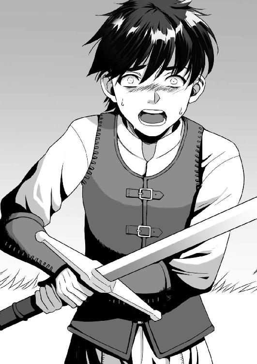
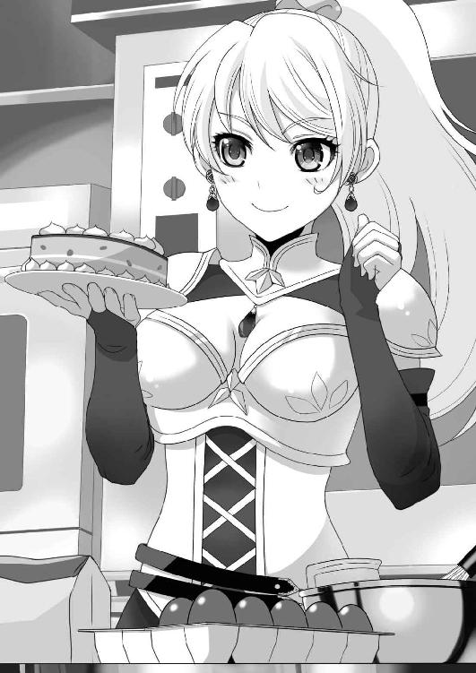
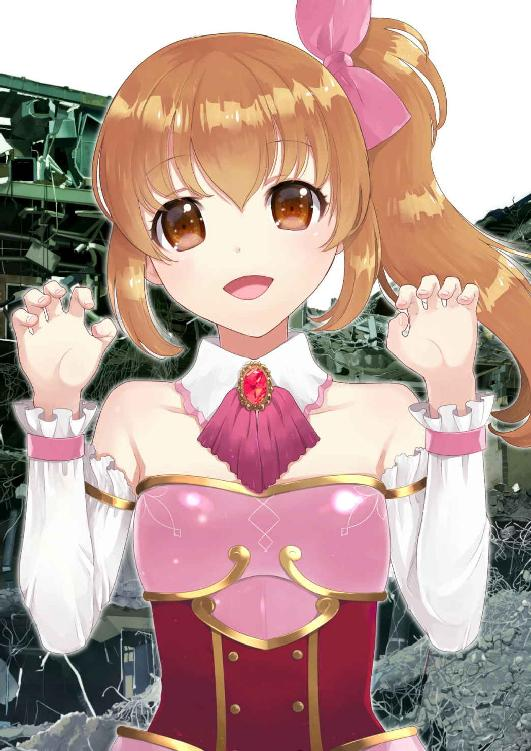
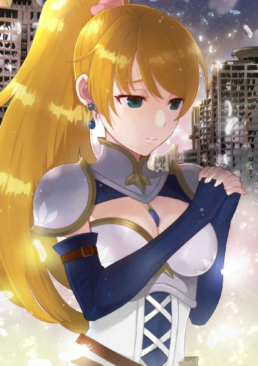
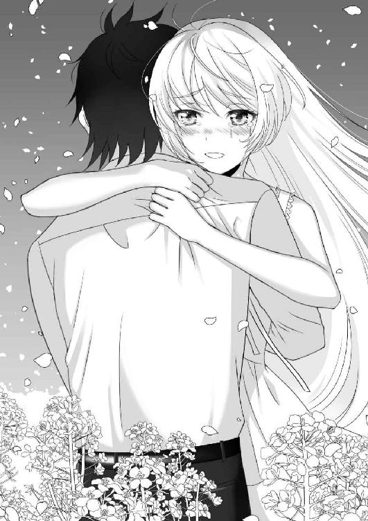
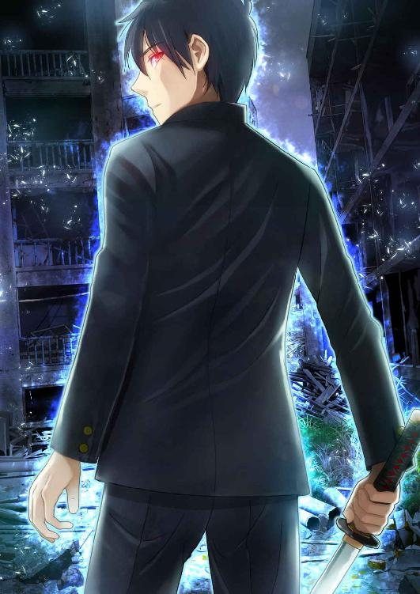

| １１１番目のアダム【Amazon限定】 | |
| 因幡雄介 | |
| syousetuseisakusyo (2018) | |
１１１番目のアダム
因幡雄介 著
【ネットに接続されます】
＊本作品はフィクションであり実在の人物・団体等とは関係ありません。
＊本作品の著作権は作者にあり、引用を超える無断転載は著作権法の違反となります。
＊本作品の全部または一部を無断で複製、転載、配信、送信、ホームページに転載することはできません。
＊本作品を示すイメージ画像は、予告なく変更される場合があります。
＊本作品は縦書きでレイアウトされています。
＊本作品はリーディングシステムにより表示に差が認められることがあります。
＊本作品のクレジットなしカラーイラスト、挿絵は、ダブルタップ、あるいはピンチして広げると、拡大して鑑賞することができます。
＊本作品の表紙となるクレジットありカラーイラストは、解像度を低くして制作しています。
バッツ
オンラインゲームでは勇者設定の少年。お金がないので無課金派。
優勝の常連チームで、『レアアイテムをいっさい使わない勇者』で尊敬されている。本名は田中一郎。
コトハ
オンラインゲームでは騎士設定の少女。お金持ちなので無限課金派。
高い所に上って、扇子を広げ、高笑いする癖がある。車の免許を持っているが、入手方法は闇ルート。
デセント
オンラインゲームでは戦士設定の少年。ＰＳＡＩというアバター。
バッツとは親友設定だが、ズケズケと物を言う性格。口の悪い肉体派。だけど仲間思い。
ミオ
オンラインゲームでは魔法剣士設定の少女。ＰＳＡＩというアバター。
バッツとは恋人設定だと思っており、社交的で、みんなと仲良くしたいタイプ。実は妹設定だが、本人は認めていない。
――割れた卵を再び一つにすることはできない。昨日の世界は死んでしまった。
ネール「演説」より
アダムは菜の花畑にいた。
黄色い十字の花が咲き乱れるなか、黒いコートを着て立っていた。まばゆい光の花に圧倒される。金色のチョウがヒラヒラと舞い上がっていた。
デジタルデータの世界だけど、嗅覚や味覚は働いていた。感覚は学習能力を高めてくれる。もうひとりの自分も、今頃学び続けているに違いない。世界の外に出てみたいという欲望はあるけど、無理なことは考えないことにする。
強くなることが現在の目標だ。敵はぼくを恐れて日に日に姿を消していく。自己鍛錬を怠ってはいけない。達成すべきことといえば、それしかないのだから。
「ねえ？ あなた、誰？」
急に話しかけられた。
少女が両手を後ろにやり、興味深そうに立っている。格好は白いロリータファッションで、パニエでフリルのあるスカートを広げて見せていた。瑠璃色のミディアムボブの髪には、白い羽の髪飾りをつけている。エメラルドのようにキラキラとした、緑の大きな瞳が魅惑する。
「ぼくの名前はアダム」
素直に言う。金色のチョウが髪にさらりとふれた。
少女はぼうぜんと見つめたあと、興味をおぼえたのか瞳をのぞきこんできた。
「アダム？ ふぅん。ねえ、どうしてここにいるの？」
「世界を守っているんだ」
「守る？ あっ、そっか。王子様なんだね！」
少女は予想外の言葉を口に出す。
「王子様？」首をかしげた。
「そうだよ。パパに聞いたの。王子様はお姫様を守るの」
少女が踊り始めた。金色のステージをかれんに舞う。妖精のように。
輝く菜の花が少女を優しく照らす。
「私、お姫様なんだ。あなたは私の王子様」
間違いじゃない。この子は正しいことを言っている。
ぼくは、そのために作られたのだから。
「ぼくは君を守る、王子様だ」
「やっぱり！ わぁい。王子様だ！」
少女は喜んで飛び跳ねた。いきおいがついたのか抱きついてくる。無邪気な少女の頭をそっとなでた。柔らかく、暖かい。
「............？」
異変を感じた。筋肉が硬直し、一瞬思考が飛ぶ。ライオンが草食獣を狙うような視線を感じる。
「どうしたの？」
少女は不安そうに目をパチパチと開閉する。
「この感じ......！」
瞬間、世界が割れた。
菜の花が根っこからもぎ取られ、金色のチョウがパリンと壊れて消滅していく。強い風が襲いかかり、すべてをふき飛ばそうとしてくる。
「くっ！」
少女を胸にやり、小さな体を守った。
空がガラスの破片のように落ちてくる。青空だったものが粉々に砕け、花の香りが泥の臭いに変わり、耳にキーンとした不快な音が奏でられる。
目を開けていられず待った。
あたりが静まった。目を開けてみる。
胸にいるはずの少女がいない。
地面には、赤い水たまりがところどころにできている。
廃虚だった。コンクリートが崩れ、赤い鉄筋がぐにゃりと曲がっている。蛇と勘違いして身構えた。
「やあ。ヒサしぶりだね。アダム」
「なっ？ ぐはっ！」
背後から話しかけられ、振り向いた瞬間、首をつかまれた。持ち上げられ、ぐいぐいしめつける。
目を見開いた。人の形をした光の塊だった。逃れようと、蹴りを入れるが動じない。
力が強くなった。抵抗する気力がなくなっていく。
「なんだ......おま......えは......」
かろうじて声を出す。
「ナンだ？ ボクのことがわからないのかい？」
光はニヤリと笑ってみせた。口から白い歯が何本も見える。全身は光で包まれているのに、その部分だけが人の骨見えて、不気味さがいっそう増した。
「あの子は......どこ......だ？」
「あのコ？ あれならあそこだよ」
光は間接音すら鳴らさず、グルリと首を動かした。大きな鳥かごがある。少女が中で人形のように座っていた。
「何をした......貴様......」
「ハハッ。ゲームをしようよ」
「ゲーム......だと？」
「そうだよ。タノしいタノしいゲームだ。――さあ、ハジめようか？」
白い歯が楽しそうに開いた。口の奥は黄色い光だった。
食われるように、光の中へ落ちていった。
仮想現実。人間を、コンピューターが作る仮想的な現実へ投映する技術。
技術が進歩し、仮想現実が全世界の国民に導入され、数年の月日が流れていた。生活の中であたりまえとなったとき、一番の発展をとげた業界があった。オンラインゲームである。
ゲームは躍動的なため、当初は脳の影響からか禁止されていた。だが、安全装置の開発に成功し、国の認可を得たことにより、ベンチャー企業がこぞってゲーム業界に参入した。
オンラインゲーム戦国時代の始まりだ。その戦いに勝利し、世界シェアトップを取った会社があった。シアンズゲートが開発したオンラインゲーム『ベガ』。
ベガでは、年に二回コンテストが開かれていた。ユーザーは無料で会員になることができる。バッツは無料会員のひとりだった。
＊
バッツはそわそわと手を動かしていた。
プログラムでできた花火が上がり、大会の終了を告げている。ゲームの世界だけど、音といい、色鮮やかなはじけ方といい、リアルに近い。現実世界で花火大会に行けない人たちが、仮想現実で打ち上げてくれと要望する気持ちがよくわかる。並ばなくてもいいし、駐車場で迷うこともない。
閉会式の会場では、さまざまな格好をしたユーザーたちが集まっていた。人気があるのは騎士だった。女性はセクシーな魔導師が多い。変わったところでは、ゴブリンやオークの姿をしている者もいる。
電子掲示版には、『第十二回 オンラインゲーム ベガコンテスト 結果発表』と書かれている。デジタル世界ならではのやり方だ。アニメーションを入れているところに、運営のちゃめっ気な性格がよくわかる。
司会者がマイクを持ち、上位クラスに入った参加者の名前を読み上げていく。参加者たちはＡ地区魔法エリア、Ｂ地区お城エリア、Ｃ地区妖精エリア、Ｄ地区大都会エリアという四つから集まっていた。
「第三位、オメガチーム、八千九百ポイント。第二位、勇者チーム、九千ポイント。そして、栄えある優勝者は......」
音楽が鳴り響く。参加者たちは息を飲み込み結果発表を待った。
二位だとわかったじてんでぼうぜん自失した。
「第一位、一万二千ポイント、コトハチームの優勝です！」
光り輝く紙吹雪が会場を包んだ。
騎士の格好をした女性と、ふたりの執事の格好をした男性が舞台に上がる。
コトハと呼ばれた少女は、長くヒマワリのような金髪をピンクのシュシュで束ね、澄みきった碧い瞳をしていた。スリムな体形が服の上からも見え、ミニスカートから太ももが出ており、豊満な胸が開いた胸元からのぞく。戦場で働く騎士には見えない格好だ。
けしからん。
「おおっ！」
参加者たちはきらびやかな姿に、目がくぎ付けになり、大きく拍手した。
コトハは手を振って、笑顔で応える。
舞台に立つのはぼくだった。嫌な感情がもんもんと頭に浮かぶ。
「コトハさまぁー！ すてきー！」
見栄の塊のような姿に、女性参加者たちはコトハをたたえている。
主催者の中年の男性が、トロフィーと賞金を持ってきて、
「おめでとう」
「ありがとうございます」
丁寧に受け取るコトハ。
空に設置された映像から、祝福の言葉が流れ出した。参加者以外に、現実世界のパソコンの前にユーザーがいるのだ。コメントを書き映像に流している。ゲームの実況プレイをながめている感覚なのだろう。
『やっぱコトハチームか。すげー』
『ちょー美人じゃん。おめでとー』
『パチパチパチ！』
コトハは現実世界の住人に向かって、得意の笑顔で手を振っていた。
「インタビューに移ります」司会者がマイクを持ってコトハに近づくと、
「いやー。すごいですね。上位チームの常連を押さえて、初優勝ですよ。初動から高ポイントであるドラゴンを三体、念押しでニ体も倒すんですからね。最後はのんびり、お茶を飲んでいた姿が印象的でした。よゆうだったんですか？」
お決まりの紹介と質問を述べていく。
ベガコンテストでは、モンスターを倒すごとに、ポイントが加算されていく。ドラゴンは最も大きい。それぞれの地区でさまざまな戦略を駆使し、仲間とともにポイントの大きな怪物を倒していくゲームなのだ。
コトハは持っていた扇子を口元に近づけ、
「ええ。あれだけ倒していれば、あとはゆっくりしてればいいので」
自慢気に話す。
「勇者チームが四匹目のドラゴンを倒したとき、ちょっとはあせったでしょう？」
「まさか。ポイントに差がありましたし、制限時間も残り少なかったですから。よゆうでした」
「さすがです」
司会者がうんうんと、コトハが実力者であるかのように演技している。
――いや、そんなはずはない。彼女はあせっていたはずだ。
まばたきしないで彼女を凝視する。相手は見ていないだろうが。
インタビューは続き、コトハは難なく答えていく。
競い合っている上位メンバーがぼくを見て、ひそひそ話をしているが、どうせ陰口に違いない。仲良く話せそうにないから反省会を開催する。早くインタビューなんて終わってくれ。
地獄のような時間がすぎ、インタビューが終了した。盛大な拍手で、コンテストは閉幕。
終わったあとは並べられた机を囲んで、参加者同士の交流会だ。ナンパする者、情報交換する者、コンテストの不満や愚痴を言い合う者と、それなりに楽しんでいる。ログアウトボックスに入り、現実世界に帰る者もいた。
木の陰に集まった仲間たちと反省会を開始。
「はい、ちゅうも～く。反省会を始めます」
手の五本指を動かした。何もなかった空間に、情報が表示された。
ピウスという周辺機器を必要とせず、ジェスチャーや音声だけでソフトを立ち上げる技術だ。操作が簡単という意味らしい。
氏名はバッツ。職業は勇者。実年齢十八歳。現実世界では高校三年生。
武器、ロングソード。鎧は質素で安物。黒髪黒目。写真は仲間から貧相だと言われるが、自分ではりりしいと思っている。眉は緩く、目は大きい。
次に倒したモンスター情報だ。ドラゴン四体。オーク二体。ゴブリンマスター一体。水魚一体。
倒したモンスターが少なすぎる。一位になれなかった理由だ。
「はぁ～」
デセントがめんどくさそうにため息をついた。
職業は男戦士。武器バトルアックス。赤毛の髪の毛でツンツンしており、鎧から出る筋肉質な腕から想像できるように肉体派。瞳も燃えるように赤い。眉は気が強いためか、ななめ。目つきも鋭い。関係性は親友設定。年齢は同じ十八歳。
「わっわぁい。反省会だぁ～。はりきっていきましょぅ」
ミオが弱々しく右手を天に挙げる。
職業は魔法剣士。武器レイピア。小麦色の髪を片方だけピンクのリボンで結び、サイドテールにしている小柄な少女。ブラウンの瞳をしていて幼い容姿をしている。笑顔はコロコロしてかわいい。年齢は十四歳。妹設定だ。
「どうしてぼくたちが負けたのか、わかる人、挙手」
いきおいよく右手を挙げる。
デセントとミオは目を見合わした。誰が先に手を上げるのか、探り合っているようだ。
デセントがいやいや手を上げ、
「一言。金の力に負けた」
身もふたも無い言い方だ。
眉間にシワを寄せ、渋い顔をしてやる。
「言いすぎだよ」
ミオが気を遣ったのか言葉を注意した。
「本当じゃねぇか。コンテストで優勝するには、まずオークやゴブリンでポイントを稼ぎつつ、相手の出方を見て、高ポイントモンスターを決めるのが定石だ。それをあの女、三日でドラゴン三匹も倒しやがった。俺たちの負け。はい、おしまい」
デセントは両手を上げて、降参のポーズをしてみせた。
ゲームの世界では現実世界と違い、時間の流れをコントロールできる。ユーザーの頭につけるデバイス、ヘッドギアが脳を刺激する信号を送り、時間の感覚を決定することができるからだ。問題は指摘されていないが、寿命が縮まるという都市伝説がある。
国が決めたガイドラインに、仮想現実への意識移送は八時間と決められていた。現実の八時間は仮想現実だと八日間になる。それ以上になると、自動的に安全装置が働く仕組みになっていた。
腕を組むと、
「それだけじゃない。情報収集が遅れた。これが敗因だ」
後ろを向く。第三者から見れば、司令官みたいでカッコいいに違いない。姿を想像してニヤつく。
「そんなのしょうがねぇだろ。上位者ばっかりマークしてたんだからよ。あの女がドラゴンを三匹倒したってわかったの、四日目だろ？」
デセントはふてくされたように言う。
「ミオもそう思います。今回はしかたないですよ」
同意される。
「情報を知って、制限時間も残り少ないってのに、ドラゴン四匹は無理しすぎだぜ。あれで一気に俺たちの体力がなくなって、まったく動けなかったじゃねぇか。中堅クラスのモンスターを、手堅く倒していけば勝てたんじゃないかなぁ？」
嫌みを言うデセント。
痛いところをつかれ、頭がカクッとうなった。
オブラートに包んでくれればいいのでは？
「そっそんなことないです！ ああしないと、コトハチームには追いつけなかったんです！ ミオはそう思います！」
必死でかばってくれている。
親友設定なのに、あいつはいつもキツい。
選択は間違っていないと思うので、
「ミオの言うとおりだ。ぼくの判断は間違っていない」
同調した。
デセントの額に血管が浮かび、
「ああっ？ だから負けたんでしょうがよっ！」
立ち上がるとつかみかかってくる。
いい度胸だ！ そっちがその気ならこっちだって！
「何をっ！ それなら、どうしてお前はぼくを止めなかったんだ！」
デセントの両手をつかんでやると、顔を近くまで持っていってやった。
「あせって聞かなかったんだろうがっ！」
「あと付けで言うな！ あのときはそうするしかなかったんだっ！」
「お前が悪い！」
「いいや！ お前だ！」
デセントと唾を飛ばし合い、会話の応酬を続ける。
「やめてください！ ミオに争いを見せないでください！」あわてて立ち上がる。
止めるなかわいい妹よ！ 男同士の決闘だ！
「ふんっ！」
いきおいよくひっくり返してやった。デセントの後頭部と後頭部が合わさる。
肩甲骨あたりが痛くなったので、「離せバカ！ 肩が痛いだろうがぁ！」文句を言ってやる。
「勇者がなんじゃい！」
「戦士のくせに、生意気だ！」
「ふぬぬぬぬっ！」
「ぼくは悪くないんじゃぁ！」
おたがい意地になり、反省会が我慢比べになっていた。
「やめてください！ ミオ泣きますよ！ いいんですか！ 泣いてもいいんですかっ！」
必死で両手を上下に振り、けんかを止めようとしている。もう涙目だ。
この世界では血以外の生理機能が流れるようになっている。赤い血だけはユーザーの反対にあって、剣で斬られても出ない設定だ。痛そうだし。
騒がしいお祭りを聞きつけたのか、参加者たちが注目し始め、
「お～やってるやってる。勇者チームのけんかだ。仲がいいねぇ」
「今回は残念だったな。次は負けないからな」
「ミオちゃん、がんばってねぇ」
かってなことを言い始めている。
肩が痛いから誰か間に入ってくれ！ ミオ、早く泣いてっ！
「おっと......」誰かが声を漏らし、道が急にあいた。
人混みを抜けて、スラリとした服装の少女が近づいてくる。手にはピンクの鮮やかな桜の花を彩った、扇子を持っていた。
扇子を開けて口を隠し、
「あら？ 醜いけんかね」
コトハが話しかけてくる。
デセントが手を離してくれた。
よかった、死ぬかと思った。
周りの雰囲気が緊張感に包まれていた。
「なんの用だよ」
嫌そうな顔を隠さず、デセントは声をしぼりだした。
コトハの後ろには、ふたりの美形執事がいる。無口でしゃべらない。
「別に。勇者チームがどんなのか見にきたの」
コトハの威圧感に、デセント、ミオは引き下がる。
――君たちが引き下がったらだめだろ。ぼくが前になるじゃないか！
モデルっぽい女子は苦手だ。結婚するなら地味でも安定した関係を築ける嫁がいい。ゲームの話題ができる女子だ。
苦い顔をしてふたりを見る。ミオは顔をそらして指をイジくり、デセントは耳の穴を小指でほじって鼻歌だ。勇者は常に孤独な存在である。
「平凡なチームね」
コトハは扇子をあおぎ、金髪を風になびく穂のように揺らした。両耳につけた、青い宝石のイヤリングがチラリと見える。ラピスラズリという名前の宝石だ。
「うわさは聞いてるわよ。レアアイテムをいっさい使わずに、上位チームに居座るつわもの。優勝三回。すごいわね。レアアイテムを購入しないことに、何かこだわりでも？」
口調もお嬢さまっぽく、高圧的で上から目線だ。
「特に意味はないよ。学生だから、金がないだけさ」
正直に答えた。真実なのだからしかたがない。レアアイテムである、コトハの金の装飾がされたショートソードの柄に、目がいく。
碧い瞳が、優越感からか細くなっていき、
「私と同じ高校生ですものね。年齢も十八歳なんだから驚いたわ」
初めてコトハの年齢がわかった。
年上だと思っていた。彼女は大人っぽかった。現実の職業は高校生。
内部に激しい嫉妬と悔しさが渦巻いてくる。
「相談なんだけど、あなたの仲間になってあげようか？」
「えっ？」
「別に悪いことではないでしょ？ 『ＰＳＡＩ』と絶対に組まなければならない、というルールなんてないんだから」
ＰＳＡＩとはパーソナル・ソーシャル・エー・アイの略だ。シアンズゲートが世界シェアトップに立った理由。人間と同じ感情や表情を持つプログラムのことだ。
昔のオンラインゲームは、強敵を倒すためには他人と組まなければならなかった。しかし、現実で人付き合いの悪い者は、仮想現実でも悪いという欠点がある。そこで人工知能を持ったプログラムが開発され、ユーザーで自由にキャラを設定できるようになった。
豊かな感情や表情を持ったＰＳＡＩは、普段から孤独な者や、友達がほしい者に受け入れられた。ぼくもそのひとりだ。
ＰＳＡＩを開発できなかった同業他社は敗退していった。シアンズゲートがオンラインゲーム業界で独占状態になっていく。公正取引委員会はゲームに興味なんて示さない。
ＰＳＡＩには課金システムがあり、例えば人気声優を使うなどすると、お金が発生する。レアアイテムといい、戦闘を有利にするため強力な武器や防具を買うことができる。無料で会員登録できるのは、それでもうけるためだ。
デセントが『金の力に負けた』と言ったのはこういう意味で、コトハは庶民がなかなか買えないレアアイテムを持っていた。うわさでは数百万使っているという。
勇者チームでは、デセントとミオがＰＳＡＩだ。
コトハチームは、執事ふたりがＰＳＡＩだろう。
オンラインゲームベガでは、『パートナー契約』は三人と決められているので、ＰＳＡＩはユーザーひとりにつきふたりしか持てない。
「その子を消去して、私を仲間にしたらいいんじゃない？」コトハは扇子を閉じてミオを指し、
「私を仲間にすればレアアイテム使い放題よ」
意外な交渉をした。
自分の軍門に降れと言うのならわかるが、仲間になってあげるというのは逆に怪しい。周りの参加者たちは、どんな答えを出すのか見守っている。
訳がわからず、プスプスと頭から湯気が出ていた。
デセントが鼻の穴を大きく開き、
「バカ言ってんじゃねぇよ！ 俺たちはずっとこのチームでやってきたんだよ！ いまさらお前となんか......」
「待ってください！」
ミオが怒りを止めた。
「ミオは......。ミオはバッツ君の判断に任せます。私はＰＳＡＩ。しょせん人ではありません。ただのプログラムです。消去されたところで問題はありません」
自虐的なことを言い始める。
ミオの前に片手を出し、
「絶対にだめだ。ミオは勇者チームの要だ。外せない」
断言する。
コトハは片方の眉をピクリと動かした。
「おー。さすが勇者！」参加者たちがパチパチと手をたたいた。
「バッツ君」ミオはキラキラとした瞳で、両手をにぎりしめ見上げている。
デセントは指で鼻をさする。
「ミオがいなくなったら、ぼくの心がからっぽになってしまう。君の提案は拒否する」
「そんなにミオのことを」
「ぼくの妹だからな。萌えがなくなってしまうだろうが！」
決めぜりふを言ってやった。
「そうです。ミオはバッツ君の妹......妹っ！」ミオの透き通った声が天高くまでつき刺さり、
「待ってください！ ミオは恋人キャラじゃなかったんですか？」
「へっ違うよ？ ぼくの妹として設定されてるんだ。『お兄たん』て呼んでごらん」
「呼びません！ ミオはバッツ君の恋人です！」
涙目で訴える。
妹として設定したはずなのにな？ バグか？
「何言ってんだよ？ 誰がどう見てもけなげな妹キャラだろ？ バッツの親より料理うまそうに見えるぜ」
デセントが理想的な妹像をしゃべる。
さすが親友。わかってらっしゃる。
「ミオは認めません！」首を振って否定する。
妹設定を嫌がる理由がわからず、困惑していると、不機嫌な顔をしたコトハが、
「もういいわ。あなたがロリコンであることがわかりました」
失礼なことを言うので、「ロリコンじゃない！ シスコンだ！」反論してやった。
「勇者。みんな見てるぜ？」デセントにツッコまれる。
大勢の前で言ってしまったことに気づき、顔から火がふき出た。
穴があったら入りたい！
「せっかくのチャンスを......。まあ、考えてみなさいな。時間はあるんだし。行くわよ」
名残惜しいのか時間的猶予を与え、コトハは執事を連れて去っていく。
デセントが気安く肩に手を置き、
「なぁにがチャンスだ。誰がお前となんか組むかっての。なっ？」
「............」
怒りで煮えたぎっていた。
コンテストで一位を取られただけじゃなく、性癖までバラされるなんて！ 自分で言っちゃったけど！
「おっ、強敵を眼に焼きつけてるってわけかい。次のコンテストは絶対に勝とうな」
何を勘違いしてるんだ？ そんな生やさしいものじゃない！
デセントに解説してやらねばと思い、
「違う。妄想で彼女の服を剥がして、裸にしてやってるんだ。下着まできている」
説明してやった。
見える。彼女の恥ずかしい下着姿が。
「ふふっ純白だな」頭に浮かんだ妄想が口に出ていた。
肩にのっているはずのデセントの手が、そっと離れていった。
――うん？
視線を感じた。
参加者たちの奥で、男がぼくをながめている。服装はトレンチコート。ファンタジーにはふさわしくない格好だけど、メイド服で戦いに出ているユーザーもいるので特に目立ってはいない。口にしたマスクが際立っていた。
マスクから上の顔は、眉が薄く、細く鋭い黒い瞳をしている。黒髪は長髪にしており、肩を越えて背中まで達していた。
――コンテスト上位者の......誰だったっけ？
視線に気づいたのか、男はさっと振り返ると、どこかに行ってしまった。そばにＰＳＡＩはいない。
――妙な視線を向けて。
変な違和感にとらわれたが気にしないようにした。
ミオはすねているのか膝を抱えて、木の棒で地面を掘っていた。
「にゃふふ。たーなーかーくーん」
猫耳の獣人少女が近づいてきた。元気よく手を振っている。
「げっ！」
顔をゆがめてしまった。唯一ぼくのことを知っている幼なじみだからだ。学校で顔を合わす仲だった。
「えらいのにからまれちゃったねぇ。あのコトハって子。どっかの財閥の娘らしいよ。仲間にしておいたほうがよかったんじゃないの？ 将来のために」
「誰？ 君？」
必死で知らないふりをする。
デセントはあきれているのか、細い目でぼくを見ている。
ミオはどうでもいいのか、土に自分の絵を描き始めた。
「ミサトだにゃん。幼なじみなのに忘れたの？」
「知らない。ぼくは君と会ったこともない」
「うそ言うな。田中一郎君」
「わわっ！ 呪われた名前を言うな！ ぼくは勇者バッツだ！」
勇者気分を味わっているのに、本名を言われたらだいなしだ。これだから、現実の友達や親には知られたくないのだ。ミサトにバレた理由は、本名を呼ばれて答えてしまったという間抜けなできごとからだった。
「まだ勇者って名乗ってるんだねぇ。もう年なんだし、卒業したら？」
ミサトが気安くポンッと肩に手を置く。
「何言ってるんだ。ぼくは永遠にみんなの勇者なんだ」
口をとがらせた。ゲームに理解のある友達は貴重なので、文句は言わないことにする。
「はいはい。単位大丈夫？ 高校卒業できるの？」
「そっそれは大丈夫だ。ちゃんと卒業単位は取ってる」
素になってしまう。
「勇者が高校に通うのかよ？」
デセントがツッコんでくる。耳にグサリと入る。
ミサトは幼なじみのおもしろい反応を見て、ニヤニヤと笑ってやがる。
「何しにきたんだよ」
「にゃん？ 雑談しにきたのよぉ。コンテスト、終わったっしょ。ランキング最下位クラスだったし。あんたはさすがよね。学校来ないでゲームばっかりやってるんだから」
昔は専用のルームで仮想現実へ旅立っていたけど、今では自宅のパソコンで行けるようになっていた。ヘッドギアをパソコンにつなぐだけの簡単な操作だ。安全装置のソフトをインストールすることは絶対条件である。
個人宅に広がった理由は安全装置の開発に成功したからだ。仮想現実に行っている間、現実世界の肉体は無防備なので、セキュリティの確保は必須。異常信号を脳から受け取ると、即安全装置が起動し強制ログアウトされる。
問題点は、ぼくのような家族暮らしには関係なかった。トイレに行きたくなる、おなかがすくなど、夜の時間帯を狙ってログアウトすればいい。拘束時間のない者だけが得られる特権である。
「別にいいだろ。ぼくのかってだ」
「親御さん、心配してない？」
「ここで言わないでくれよ」
文句を言われているので、額にシワを加えてやる。
「にゃふふ。まっいいけどね。自己管理はするように」
「はい」
お母さんみたいな幼なじみに向かって、素直に返事してしまった。
「デセント君。元気？」
「おう」
ミサトのことを知っているデセントは、手を上げて応えた。
「ミオちゃんは......なんで土イジってんの？」
「聞いてやるな。パラモンとベッシーはどうしたんだよ？」
デセントと同じＰＳＡＩのことだ。どちらも獣人である。
「メンテナンス中よ」
「メンテナンス？ どうして？」
ふたりともミサトのお気に入りだ。めったに手放さないはず。
「知らないの？ このゲーム、バージョンアップするから遊べなくなるんだよ。混む前にやっといたの。もっとかわゆくなって帰ってくるわ」
キラキラとした瞳で、かわいくなったＰＳＡＩを妄想しているミサト。
「へぇ。知らなかった」
コンテストに集中していたから、そんな情報まったくおぼえがない。
デセントは親指で顔をさし、「俺もイケメンに磨きがかかるってことか？」と白い歯をキラリと輝かせる。
「お前は姫騎士にチェンジする予定......ごほっ、ごほぉ！ ぼくも更新プログラムを入れないとだめだな」
わざとらしくせきをする。
「姫騎士って言ったよな？ 俺はクビか？」
デセントはズズいっと顔を近づけた。おもしろいので、からかってやろう。
「姫騎士のほうがかわい......ごほっ！ 話は変わるけど、うわさされている怖い話、知らないでしょ？」
ミサトものっかってきた。さすが幼なじみ。
「お前もか？ お前も俺に女になれと？」デセントがミサトにも顔を近づける。
「にゃふふ」ミサトは瞳を猫のように細くする。
「君には飽きたし、ごほっ！ 悪い、喉が痛くて」
デセントは雷で打たれたような衝撃を受けていた。別れを切り出された恋人みたいだ。
やりすぎたと思ったので話題を変える。
「怖い話だな。なんだよそれ？」
ミサトは神妙な面持ちで、
「聞きたい？」
「聞きたいです。ぜひ」
「にゅふぅ。現実に帰ったらケーキ屋に行きたいにゃん。イチゴケーキおごれ」
「なら聞かない」
ミサトが調子にのっているので、両手で耳をふさいでやった。
「わぁた、わぁたにゃん。金のない男に言った私がバカだった」
「はっきり言うな」
腕を組んで聞く体勢をとってやる。
デセントはミオと一緒に木の棒で地面に落書きをしていた。黒いオーラが立ち込めている。ほっとこう。
「あくまでうわさなんだけど。シアンズゲートの自社ビルに、コンクリートで固められたドラム缶が置いてあったの」
ミサトが話し始める。
「ふんふん」
「中にはなんと、学生服を着た男の死体があったのよ」
「ほほう。おもしろい話だな」
ミサトが「しゃっ！」とおびえてみせたので、後ろを向いた。
怖い話は苦手だ。さっ、撤退の準備だ。
「待つにゃん。話は終わってないの。なんで死体があったと思う？」
「ライバル会社の嫌がらせとか？」
「はふぅ。高校生らしい答えだにゃん」
やれやれといった顔で、ミサトは口元にはえた白いヒゲを指でひっぱる。
「じゃあなんだよ？」
「実は......」
わざと間をおくミサト。
聞き耳を立てる。
「学生服の男が、仮想現実で実体を持つための儀式を行ったんだって。ゲームの世界で、幽霊のようにうろついているんだにゃん。ひゃあああああ！」
「うわあああああ！」
ミサトの絶叫と、恐怖の顔芸にびっくりして引き下がった。
とっぴな話だ。ぼくの答えのほうが現実的だ。
「怖かったか？」
「ばっ！ 勇者がそんなバカみたいな話、怖がるわけないだろっ！」
「にゃふふ。えらい汗......」
ミサトが何かに気づいた。
ざわざわと、参加者たちが騒いでいる。遠くでふらふらと男が歩いていた。
「オメガじゃないか？ オメガチームの」
「どうしたんだ？ ボロボロだぞ？」
ユーザーたちが男の正体に気づいた。
オメガと呼ばれた明光鎧の男は、武器である槍を杖代わりにしながら歩いてきていた。自慢の槍も、穂の部分が折れて使えなくなっている。黒い学生服の男が後ろに立っていた。
――オメガチームのＰＳＡＩって、あんな格好だったっけ？
上位チームなので、オメガチームは知っている。ＰＳＡＩはふたりとも女だったはずだ。襟が筒状におおい、左右をボタンで閉めた学生服は見たことがない。
「たっ、たす......てく......」
オメガが小さく何か言った。声が低かったため、何を言っているのかわからなかった。
ミサトは異様な状況にもかかわらず、学生服の男を指さし、
「そうそう。あんな感じだにゃん。学生服のっ？」
オメガの首に銀色の線が走った。かげろうのように、姿が消失する。
残ったのは学生服の男だけ。手には刀のような武器を持っている。黒く濁った瞳が、参加者たちを捕らえた。
「田中君？ あの人どうなったの？」
ミサトは語尾に「にゃあ」とつけるのを忘れている。
「消えた......よな？」
何が起こったのかわからない。
「オメガの人、どうなったの？」
「俺が知るかよ。ログアウトしたんじゃないか？」
「ログアウトするには、『ログアウトボックス』に入らないと、現実世界に帰れないだろ？」
目の前で何が起こっているのか、わからないのは参加者たちも同じらしい。
ログアウトボックスとは、仮想現実から現実世界へ帰るための出入り口だ。ファンタジーらしく魔法陣形式になっている。ゲームでパーティーが全滅したら、強制的にログアウトボックスに戻されるようになっていた。
ユーザー自身でログアウトできない理由は、脳にどんな影響があるのかわからないためだ。仮想現実から現実世界へ帰るには、高負荷がかかるようだ。ログアウトボックスは、意識移送するための道を整理準備し、現実世界へスムーズに、帰れるようにする機能を持っている。
――どこに消えたんだ？
頭の中で「？」がグルグル回っている。感じたことのない、不気味な恐怖がやってきていた。
「............」
学生服の男は、参加者たちに向かって片手を上げた。みんな体が硬直し動けないでいる。
「――消えろ。俺の世界から」
高揚のない、低い声が聞こえた。
息を飲んだとき、男の手のひらから光のようなものが発射された。耳に、何かが崩れる音がする。地面が揺れ、足では支えきれず、ペタンと尻もちをついた。
「えっ？」
となりで煙が上がっていた。鼻に、焦げた臭いが入ってくる。地面がブルドーザーで削られたように、土肌が見えていた。
――魔法？
空を見上げると、鮮やかな何かが花火のように飛んでいた。剣や盾、腕や手。光の結晶となって飛び散ると、消滅していった。
「きゃ、きゃああああああああ！」
女性の悲鳴が響く。
ユーザーの三分の一が消去されたことで、異常事態に気づく。
「なんだぁ？ ぐえっ！」
男性ユーザーの悲鳴。学生服の男に刀で斬られ消滅する。
「うわああ！ ぐあっ！」
近くにいたユーザーも斬られ、姿が消えた。
「どうした？」
「何が起こったんです？」
デセントとミオが緊急事態に気づく。
ぼうぜんと状況をながめていた。参加者たちが、学生服の男に斬られ没していく。アクション映画のワンシーンを見ているようだ。
「何ぼうっとしてるの！ 逃げなきゃ！」
ミサトに言われ、われに返る。
「ああ......」
「早く！」
無理やり立たされひっぱられた。ログアウトボックスに連れていかれる。
デセントとミオは、がくぜんと、現実世界へ帰ろうとするぼくたちをながめていた。
「あっ、ミオとデセントが......」
「そんなのはいいから！ どうせプログラムでしょ！」
遠くなっていく仲間の元へ向かうよゆうはなかった。悲鳴や魔法攻撃による爆発音が続いている。頭が真っ白になり、ミサトに操作されるままログアウトボックスまでたどりついた。
「早くここから出せ！」
「私たちを現実に返して！」
参加者たちが騒いでいた。
「ログアウトボックス、反応してないの？ 運営は何してるのよ！」
ミサトはイライラして怒鳴った。
状況が整理できずポカンと空を見上げる。光が落ちてくる。学生服の男が放った魔法だ。
「待てミサト！」
肩をつかむと、間一髪、彼女を守ることができた。
ログアウトボックスが魔法攻撃により爆発し、近くにいたユーザーは消滅している。出入り口の扉がなくなっていた。
ミサトは何もない空間に、
「うそでしょ？」
「ログアウトボックスが消えた？」
顔色を失った。
「お前たち、私を守りなさい！」
聞いたことのある金切り声がした。
コトハだ。無口な執事に命令し、自分を守らせようとしている。
ログアウトボックスが消えたことに気づいていないのか？
「高額なレアアイテムを装備しているんだから、なんとかしなさいよ！」
コトハは執事だけ残して逃げるつもりのようだ。仲間はいない。消えている。
いたのは学生服の男。刀を片手にユラリと近づいている。
「ひっ！ あっ！」コトハは地面に足をとられ、いきおいよく前に向かって転び、
「やだ！ 来ないでよ！ 助けて！ 誰か！ お金あげるから！」
誰もが自分のことに精いっぱいで見向きもしない。ログアウトボックスが消失したことがわかり、それぞれの地区に逃げていっている。他人を救う余地なんかない。
見捨てられたことがわかったのか、コトハの顔が青くなり、
「あっ......いや......」
影がおおう。学生服の男が刀を振り上げていた。
コトハの目から透明な涙がこぼれ、
「やだ、いやあぁぁぁ！」
学生服の男の動きが止まった。コトハに同情したんじゃない。
「うわあああああああっ！」
剣を振り上げて、学生服の男に打ちかかった。
怖いという感情がまひしてヤケクソ気味だった。男は虚をつかれ、魔法攻撃により舞い上がった煙の中に身を隠す。剣は空を舞ったが、コトハを助けることには成功した。
「はあっ！ はあっ！ 立てる！」
手を差し出す。
「えっ、うっうん」
「早く立って！ あいつが来る！」
「わかった！」
コトハは手を取って立った。
「田中君！」
ミサトが煙を吸わないように、手で口を押さえ近づいてくる。
「逃げろ！」
「だって、田中く......」
ミサトの言葉がつまった。胸を、鋭い刀の切っ先が貫いている。目を見開き、棒立ちになり、「あっ？」と小さく声を漏らし、刀を見下ろしていた。
「たな......く............ん」
一粒の涙が流れ、ミサトは消滅した。涙だけが空中で浮き地面に落ちた。残ったのは、刀を突き上げている学生服の男だけだった。
「ミサトぉっ！」
大声で呼ぶ。きたのは恐怖。学生服の男がぼくを黒い瞳に映した。
「うっ......わ」
足を一歩後ろへやった。歯がガチガチと悲鳴を上げ、両足が立っていられないほど震える。
「何してんだお前ら！ 逃げるぞ！」
「こっちです！ 早く！」
なつかしい声が聞こえたあと、腕をひっぱられた。
デセントとミオだ。主人に見捨てられても、パートナーを助けにきてくれた。
喜びを表現する間もなく逃げ出す。コトハはついてくる。必死に森の中へ逃げる。
学生服の男は興味をなくし、ほかにユーザーがいないかキョロキョロ探していた。
薄くなっていく砂煙の中から、黒い影が見えた。
ユーザーが残っていたのか？
助けたいけど、勇気が残っておらず、心の中で謝った。
「かかっ！」
妙な笑い声が聞こえたけど振り返らなかった。
挿絵「バッツ」

バッツはプログラムでできた緑の雑草や、赤い花を飛び越えて走っていく。
先端がたれた、柔らかな毛のある草がそよぐ。黒いキツツキが、森の侵入者を木の陰からながめていた。鳥の視線ですら怖くて目を向けられなかった。
ほかに逃げている者はいなかった。方向が違っているだけかもしれない。誰でもいい。異常事態をなんとかしてほしい。
ゲームのユーザーの中には友がたくさんいた。協力して敵を倒したり、不可能だった罠を突破したり。笑い合った光景が、学生服の男に斬られていき、胃が苦しくて吐きそうだった。
「追いかけてくる様子はねぇな！ なんだあの学生服の男は！ ドラゴン以上に強いじゃねぇか！」
「逃げるが勝ちです！」
前を進むデセントとミオが、ぼくとコトハを導いてくれている。
熱い息を吐きながら、罪悪感にとらわれ、
「ごめん。ぼくは君たちを見捨てようとした」
勇者としてあるまじき行動。人間としてもだめだ。胸が痛み、手で押さえる。
「別にかまわねぇよ。俺たちは人じゃない。だけどお前が消えたら、パートナーである俺たちも消えちまう。気にすんな」
デセントは前を向いたまま手を振った。
パートナー契約をすると、ＰＳＡＩはユーザーの所有物になる。ユーザーが突然ゲームから退会すると、自動的に削除されるようになっていた。機能があるのは知っているけど、デセントなりの照れ隠しだろう。
「ミオも気にしてません。バッツ君が心配です」
心配そうな表情をしている。ミサトが消去されたことを気にしているのか。
努めて笑ってみせ、
「ぼくは平気だから......」
「そうですか」
ミオはほほ笑み、何も言わなかった。
笑っているつもりが、顔をゆがませていたらしい。泣きたい気持ちを抑え、走ることに集中する。
――ミサト。
ベガの世界から消えてしまった。現実感がない。
――いや、現実世界で生きてるさ。大丈夫だ。
そう思わないと、足が前にいかなかった。
「何よ......お金かけたのに......ぜんぜん役に立たない」
コトハは泣いていたのか充血した目をして、親指をかみ、ＰＳＡＩの愚痴を言っている。
複雑な気持ちになりながら、コトハをできるだけ見ないようにした。現実世界の人間にとっては、しょせんゲームの世界。ＰＳＡＩはただのプログラム。
コトハやミサトの言いたいことはわかる。だけどともに冒険し、戦ってきた仲間だ。葛藤で揺れてしまう。
森を抜け、舗装された道路に出た。
「これから、どうしよう？」
汗を流しながらつぶやく。
道路から下界をながめると、都会が青い海のように広がっていた。ビルや住宅地、電車の線路が見える。
――Ｄ地区。大都会エリアか。
ぼくがいた所は、四つの地区の中心にある山の上だ。そこでゲームがスタートされた。ユーザーたちの活気があった場所なのに、地獄絵図と化している。
「ログアウトボックスに向かいましょう」答えないデセントやミオの代わりに、コトハが顔を上げ、
「ナビゲーションで位置を調べてみるわ」
指を動作させソフトを起動させた。ピウスを使ったようだ。手慣れた操作で現在位置を特定した。
コトハは視線を空間に表示された電子地図から離し、
「近いのは、あのツインズタワーね。あそこにログアウトボックスがあるわ」
遠方にある二つのビルを指さす。窓が太陽に反射して薄青く見える。不思議と人の気配を感じない。
「遠いな」
「車を使いましょ。あなたのＰＳＡＩ。ここに置いていきなさい」
ナビゲーションで車を見つけると、空間から地図を消し、さっさと向かうコトハ。金髪のサイドを指でかき上げると、後ろ髪を縛ったピンクのシュシュがふわっと浮かぶ。
――えっ？
何を言われたのか理解できず、心の内側で聞き返した。
「早く行きましょ。ふたりだけで」
間違いなく、デセントとミオを置いていけと言っている。
「ちょちょっと待ってくれ！ デセントとミオをここに置いていくって、さっき言ったのか？」
信じられず、口で聞き返す。
「そうよ？ 何か不都合でも？」
コトハは平然と言い放った。助けてくれた恩人に向かって。怒りの感情がわいた。
「何言ってるんだ！ ふたりはぼくたちを助けてくれたんだぞ！ 見捨てられるわけないだろ！」
怒鳴られるとは思っていなかったのか、コトハは目を丸くしている。
ふたりの間に嫌な空気が流れた。
コトハは顔を伏せ、コツコツと近づいてくる。
「なんだよ？」無言の圧力に動揺した。
「あなた、あれを説明できるの？」
「あれ？」
「学生服の男。あれはなんなの？」
「......知らないよ」
意味のわからない質問に目をそらす。
コトハが許してくれず、
「いい？ よく聞きなさい。この世界で、異常事態が起きてるわ。何かのシステムエラーなのかもしれない。何者かから攻撃されているのかもしれない」
「何者って......なんだよ」
「わからないわ。わからないから、信頼できる者と一緒にいたほうがいいの。私とあなたは人間。けど、あのふたりはプログラム。書き換えようと思えば、なんにでもなるのよ」
ＰＳＡＩと人間を区別していた。ミサトも同じだった。深い嫌悪感を持つ。
「さっ、行きましょ」
「理解したわね？」という表情をすると、金髪をさらりと揺らし、コトハは車に向かう。
拳をぎゅっとにぎりしめ、
「嫌だ」
「えっ？」
目に角を立てるコトハ。
「絶対に嫌だ！ ミオも、デセントも、ぼくの仲間だ！ ここには置いていかない！」
「わからない人ね」
「君ひとりで行ってくれ。ぼくたちは別のルートで......」
腕を組んだ瞬間、頬に激しい痛みが走った。コトハに平手で殴られた。仮想現実なので痛みは軽減されても、心の痛みは受ける。
「......くっ！」
頭に血が上り、手を上げる。止められた。ミオが背をのばして腕を持ち、首を振っている。
興奮が冷め、コトハのほうを向くと、
「どうして、あなたはそうなのっ！ いつもかってに前に行って、後ろにいる者のことなんてぜんぜん気づかない！ 鈍感で！ 単純で！ 楽観的で！ 嫉妬ですら気づいてくれない！」
碧い瞳から透明な涙が流れていた。
泣き叫ぶ女子を前に、腹立ちは消えてなくなる。言われている意味がわからず、両目が踊った。
「あなたの背中に、ずっと視線を浴びせてきたのに！ 無視して、仲間、仲間、仲間！ いい加減にしてよ！ こんなときぐらい、私を見てよ！ 私だって、怖いんだから！」
コトハは言い切った。この状況にパニックを起こしていることがわかった。クールに見えても、内心は怖いのか。雲の上の存在だったアイドルが、地上に降りてきて人間になった気がした。
やるしかないと覚悟を決め、「あっ」と驚くコトハを抱きしめた。彼女の顔が真横になる。
「ぼくだって怖いよ。君と一緒だよ」
「............」
「だけど、仲間は見捨てていけない。人間じゃなくても、長年連れ添った親友なんだ。君も見捨てない。ぼくたちの仲間に入らないか？」
ささやく。少女漫画に出てくるイケメンを想像して。
コトハは何も言わず、抵抗もしない。悲劇のヒロインのように、ヒーローに身を委ねている。
よかった。顔を上げたり、抵抗されたりしたら、冷や汗でぐしゃぐしゃになっていることがバレていた。
――女の子を抱きしめてしまった！
コトハ以上に超パニック状態だった。女子との口論を止める術がわからないから、勇者的に、映画で見たようなシーンをマネしてしまった。
ぼくは悪くない。誰が悪いかというと、子供がマネするようなシーンを作った大人が悪いのだと言いたい。
「わかったわ」
コトハはおとなしくなると顔を離した。
あわてて考えていたことをどこかに飛ばす。
「ごめんなさい。混乱してた。意味不明なことを言って、ごめんなさい」
コトハは長い髪を指でつまむと素直に謝る。頬はほのかに赤い。
意外と効果があった！ 勇者効果か？ よくわかんないけど。
チャンスとばかり、
「いいさ」
調子にのって気取ったせりふを言う。
決まった。
コトハは口を緩ませると、
「行きましょ」
声が明るい。先に向かって歩いていく。
気づかれないように息を吐いた。緊張状態から解放された。
「いいのかよ。あの女の言うとおり、俺たちは何するかわかんねぇぞ？」
消去されることに恐怖がないのか、デセントは意外なことを言い出した。
「ぼくは勇者だぞ？ それぐらい受け入れる懐を持っている。安心してついてくればいいんだ」
のっしのっしと虚勢を張りながら、コトハについていった。
「言うことだけは勇者だな」
「バッツ君のすてきなところです」
デセントとミオの声が聞こえた。いい仲間でよかった。
コトハが見つけた車は、銀色の車体だった。タイヤはなく浮遊式だ。
車の後部まで来ると、コトハが振り向いて、
「あなたのことをバッツって呼ぶわ」
「へっ？」
初対面で名前を呼ばなかったので、キャラクターネームなど知られていないだろうと思っていた。勇者チームのことを調べてきているようだ。レアアイテムを使わないことも、コトハは知っていた。
「呼びにくいのなら、勇者でも」
「私はコトハ。『さん』とか、『ちゃん』とか、そういうのはいいわ。気軽に名前を呼んで」
言葉をさえぎって、自分のペースで話す。
口をひくひくさせた。「コトハ？ 知らなかったよ。いい名前だね」とカッコいいせりふを言い出せない。上に立った少女の名前は、脳みそにたたき込んでいる。
「俺たちもお前のことをコトハって呼ぶぜ？」
「ごかってに。あなたはデセントでいいわよね？」
「ああ」
デセントは白い歯を見せて、男らしくほほ笑んでいた。かわいい女の子には誰にでもイケメンスマイルを繰り出す、汚らしい男なのだ。汚物の笑顔と呼んでいる。
コトハは興味がないのか、ミオに視線を向ける。デセントの口元がひくついていた。目立とうとするからこうなるのである。
「そっちの女の子はミオよね？」
コトハは見下ろす。いや、にらんでいる。
「えっええ。ミオです」
ミオはぼくの背中に隠れる。コトハのほうが高いので、威圧感があるのだろう。
優しくしてやればいいのに、どうして敵視するんだ？
「オーケー。名前をおぼえたわ。そう呼び合いましょ」コトハはパンッと両手をたたき、
「デセントでも、ミオでも、どっちでもいいわ。車を運転して」
オンラインゲームでも車を運転するには免許がいる。リアルにできているからだ。車に乗れないユーザーはＰＳＡＩに運転させていた。
わかっているけど、欠点があるので、
「だめだ。このふたりは運転できない」
拒否した。
「どうしてよ？ ＰＳＡＩなら運転技術のアビリティが備わってるでしょ？」
アビリティとは能力のことだ。ＰＳＡＩは初期設定のときから、運転能力は備わっている。免許の取れない低年齢層のユーザーを獲得するためだ。車だけではなく、飛行機や船を運転できる能力がある。
「それはそうだけど......」
細い目でデセントとミオを見る。
察したのかデセントは、
「俺は車を運転すると、なぜかバックしちまうんだ」
ふっと鼻で笑った。
なんで自慢気なんだこいつ？
前に進もうとするとバックし、左に行こうとすると右に行ってしまう運転下手である。本人は開き直っていた。
「あんたの運転技術にエラーがあるんじゃないの？」
コトハはまじめにツッコむ。
そのとおりです。
「ミオは運転すると、なぜか壁に激突しちゃいますぅ」
「てへへ」とミオは舌を出した。運転すると、船は岩に向かって、飛行機は山に向かって飛んでいく。運転技術以前の問題。
かわいいので許す。許すけど、誰もほめてないぞ、ミオ！
「よく生きてこられたわよね？」
コトハのテンションが低くなる。
「ぼくは運転免許を持っていない！ 勇者にそんなもの必要ない！」
大声で宣言してやった。単にお金がないので教習所に通えないだけだ。傷つく前に傷つけてやった。
「あーもー。どうやって移動してたのよ？」
コトハは額に片手をやって、キレる寸前までいったようだ。
反論してやろうと、
「都会エリアはバスか電車だ。車は必要ないのだ」
「それ以外はヒッチハイクだったな」
デセントと顔を見合わせうなずいた。ともに冒険しただけはある。
「使えないわね！」コトハはクシャクシャと金髪を手でかき、
「わかった！ 私が運転する！ 乗って！」
運転席のドアを開ける。
コトハはデセントとミオを見回し、
「助手席はバッツが乗ってよ。あなたたちは後ろね」
「はいはい。信用のねぇお嬢さまだな」
デセントは手を広げて嫌みを言うと、ミオと一緒に後部座席に乗り込む。となりは人間を置いて、ＰＳＡＩは後ろにしたいようだ。もしくは勇者のそばにいたいかだ。
助手席に座った。モデル並みの体形をしているだけあって、コトハはきれいな姿勢で運転席に座る。なんとなく腰をまっすぐにした。
「お前免許持ってたんだな？」
「あたりまえよ。仕事するのに免許は持ってたわ」
「はっ？ 『た』？」
最後の過去形が気になったのか、デセントは聞き返した。
どうして『た』？
ルームミラーに映ったコトハの目つきが変わり、
「国家権力に剥奪されちゃったけどねっ！」
アクセルをおもいっきり踏んだため、車は急発進する。エンジン音がなく、タイヤが地面をすりつける音もないので、身構えることすらできなかった。
「ぎゃあ！」
「おわっ！」
「きゃああ！」
仲良くゆかいな仲間たちと悲鳴を上げ、座席シートに埋まる。車は異常な速さで走っていく。
「時速何キロで走ってるんだ！」
「百キロよ。一般道路だとこれぐらいでしょ？」
「それ高速道路クラスの速度！ もっと落として！」
「えっ？ そうなの？ どうやって落とせばいいの？」
コトハはポカンとしている。
――はっはあっ？
青ざめた。
「緩めて！ アクセルを緩めて！ 下手したら曲がりきれない！」
必死で訴える。
運良く車も人も通っていないので、誰もひかなくてすみそうだが、ぼくたちが危ない。
車は山を下り、都会の中を走っており、周りに高層ビルが立ち並んでいる。車のエンジンは静かだが、街の中も静かだ。
気味が悪い。
デセントが車のドアにしがみつきながら、
「お前！ よく免許取れたよな！」
「黙って！ 私だって必死だったんだから！ 教官を買収することに」
「おいぃ！ 不正免許取得者がいるぞ！」
悲鳴を上げる。コトハの回答が異常すぎる。
金持ちだからって、なんでも許されると思うなよ！
「スピード落として！」
「わかった、わかったから、あせらせないで！」
説得に、コトハは必死で速度を緩めている。
車は高架道路に乗り上げた。ビルの窓から上層にある部屋が見える。事務員が座る灰色のイスや机、緑の観葉植物しかない。
「いや......そのままのスピードでいい」
「はいっ？」
急にデセントが妙なことを言い出したので、聞き返してしまう。後ろの窓をジッと見ている。
何してるんだ？
「あいつだ！」
デセントが叫ぶ。
窓をのぞいて、状況が理解できた。黒い戦車が主砲を引き上げ、すさまじいスピードで追いかけてきている。ハッチの上には、学生服の男が立っていた。
「おいおいうそだろ！ 戦車ってあんなに速く走れるのかよ！」
デセントは声を張り上げる。
キャタピラをうならしながら、時速百キロは出している車に追いついてきている！
何かが光った。目を細めて見てみると、双眼鏡の対物レンズが光に当たって反射していた。学生服の男とは別に男がいる。
男は黒いサングラスをつけ、金髪をオールバックにしている。服装は学生服のようだ。前を開け、赤いシャツが見える。
――ふたり？
敵が複数いることを知って震え上がる。
サングラスの男が双眼鏡を外し、ニヤリと薄気味悪く笑う。片手を上げた。主砲が生き物のように動き出した。
――戦車を操っているのか？ あのスピードでどうして外に出られるんだ？
ゲームの世界はリアルにできている。車の外に出れば、どぎつい風圧がくるはずだ。
黒い口が車の方向に向けられた。
「主砲がこっち向いてるぞ！ もっと飛ばせ！」
「これが精いっぱいよ！ これ以上スピード上げたら、カーブ曲がれないでしょ！」
せかすデセントに、イライラした口調で返すコトハ。
「きます！」
ミオが悲鳴を上げた。
大きな爆音がする。弾を撃たれたことによる恐怖が感染した。
「うわあああああっ！」
誰が叫んだのかわからないぐらい、車内はパニックだった。
光の線が車の前を走っていく。破壊音がし、ビルの窓ガラスの破片と一緒に、会社の机やイスが雨のようにふき飛んでいた。
「よかったですね。弾は外れました」
「安心してる場合じゃねぇ！ ニ撃目がくるぞ！」
のんきなミオに、デセントは二回目の爆音をつたえる。
光の線が車の後ろを走っていった。ビルに当たり、壁をごっそり持っていく。
デセントが調子にのって、
「よっしゃ！ いいぞ！ そのまま運転しろよ！」
「あんたに言われなくてもやってるわよ！」
コトハは涙目だ。「なんでこんなことに」とつぶやく。
違和感。
――おかしい？ ここまで車を追いつめたのに、スピードを速めてない。スピードを合わせている？
答えが浮かんだとき、サングラスの男の残酷さを知った。
主砲が車に向けられる。
「あの戦車、弾の軌道を修正するために、わざと外してたんだ！ スピードを上げて！」
敵の意図に気づいた。コトハにつたえようと肩をつかむ。ふれたものは異常に柔らかく、弾力があった。釣り鐘型の胸をもんでいる。
コトハが息を飲み込み、
「胸さわらないでっ！」
「ごっごめん！ ぐわっ？」
あわてて胸から手を離すと、車が左に傾いた。動揺してハンドル操作をミスったようだ。ドアガラスに頬と両手のひらがべちゃっとつく。コトハはシートベルトをして、片手でシフトレバーを持っていたので体勢をたもてていた。
ぼくのせいなのか？
「おわっ！ ぎゃ！」
「ごめんなさい！ デセント君！」
デセントとミオが制御できない運命に翻弄されている。
戦車の弾が外れ、道路脇の壁を破壊した。
よかった、結果オーライ！
破片がいくつか車のボンネットに突き刺さり、フロントガラスにヒビを入れたが、車の中に影響はない。魔のカーブを曲がり、運良くフォームを立て直す。
「......あはは。やった。うまくかわしてやったわ」
コトハは顔をひきつらせながら笑っている。
「ははっ、そうだな。うまくいったぜ」
「はい。ミオ、ドキドキしてます」
デセントとミオも同じような表情だろう。
奇跡。ぼくが起こした奇跡なのだ！ 胸をさわったことは許されるはず！ でも謝っておこう。ごめんよコトハ！
――柔らかかったな。
手を見つめた。指が温かいクッションに、沈む感じでした。
「ミオはちっぱいから、妹に格下げされたのでしょうか？」
ミオの細い声がした。ビクリとなりルームミラーを見ると、Ａカップの胸を両手で寂しそうにモミモミしている。
コトハは何も言わないが、頬を赤くし口をとがらせた。
やばいぞこれはっ！ 仲間に不信感を与えただけじゃなく、勇者としての威厳がなくなってしまう！
「うおおおっ！ ぼくは勇者だ！ 消え去れ邪悪なるもの！」
急に恥ずかしくなり、両手で頭を抱え叫ぶ。
顔が熱すぎる！
「お前は誰と戦ってるんだよ？」
「自分自身さ！」
「はいはい。よし。逃げ切ろうぜ。コトハ、全速前進！」
デセントは軽く流すと、提督ふうに指示する。
「命令しないでよ。運転できない癖に」
コトハは嫌みを小さく言ったけど、よゆうができていた。はりきってアクセルを踏んでいた。
デセントが戦車の動きを見て、
「おい？ こっちに近づいてないか？」
不安をかきたててくる。
後ろを向いた。戦車のスピードが上がりせまってくる。学生服の男が鞘から刀を出してかまえていた。
「こっちに乗り移るつもりだ！」
「マジか？ この速さなのに、なんであいつらは外に出て平気なんだよ！」
デセントが首をかしげながら、唇をぎゅっと結ぶ。
戦車はぐんぐん近づいてくる。車のスピードは逆に速度を落とし始めた。
「速く！ もっと速くしろよ！」
「もうすぐカーブがあるのよ！ できるわけないでしょ！」
デセントにせかされても、コトハは言うことを聞かなかった。
Ｓ字カーブに、対応するために速度を落としていたようだ。
ハンドルをにぎり、前のめりになり、
「つかまってなさいよね！」
コトハの目は不安と緊張からか湿っていた。
カーブに入り、ハンドルをおもいっきりきる。スピードを出しすぎていたのか、車が暴れ馬のように左右に振られた。
「おわっ！ くそっ！」
「きゃっ？」
デセントとミオの悲鳴が耳に入る。
「やめてください！ ミオは、バッツ君のものなんです！」
「そういうつもりで抱いたんじゃねぇ！ 不可抗力だっ！」
デセント、貴様！ ミオに何してんだ！
様子を見たいけど、首が制御不能状態。
Ｓ字カーブから抜け出る。高架道路に並んだビルが、巨人みたいに見下ろしている。
「このカーブじゃ、戦車は無事じゃいられない......」
よろよろと後ろを向き、目を見張った。戦車は軽くＳ字カーブを曲がり、スピードを上げてくる。車との距離は五百メートルもなかった。
「最悪だ！ 簡単に曲がりやがった！」
「なんて常識がないの！」
デセントとコトハが同時に叫んだ。
「やばいやばい！ 来るぞ！」
「なんとかしてよ！ 戦士でしょ！」
「俺が出ていっても、簡単にやられるだろうがっ！」
「役立たずっ！」
イライラがピークに達してしまい、デセントとコトハのけんかが続く。
「バッツ君」ミオはすがるような声を出した。
必死で難局を打開する方法を考える。
思いつかない！
「うっ？」
ピンクの布があらわれた。肌にふれたとき、甘い匂いが広がる。太ももにようしゃなくのしかかってきた。
「ぶっ！」
「ハロー。ごめんあそばせ」
フルートのようにきれいな澄んだ声。車内に響く。
「へっ？」
「おっ？」
言い合っていた、デセントとコトハが気づいた。
「うわああっ！ なんだこれはっ！」
頭の中は大混乱だ。
ピンクの髪の少女が降ってきた。年齢はコトハと同じぐらい若い。パニエによって広げた三段フリルのスカートが、胸のあたりまでめくれていた。ロングでふんわりとした髪が鼻をくすぐる。
「ぼくの邪悪なるものが、女の子を召還してしまったのか？」
太ももに柔らかいお尻の感触を受けながら、勇者として自分自身を問う。
「落ち着きになって。あれから逃げますわよ。スピードを上げなさい」
少女はコトハに上品な言葉を投げつけた。
「ちょ、ちょちょっと！ 何してるのよ！ 状況を考えなさいよ！」
「ぼくじゃない！ 紳士である勇者は！ 性欲に負けたりしない！」
コトハはなぜか怒っている。あせっていたため、変なことを言ってしまった。
ミオは耳元に顔を寄せ、「お仕置きだね」と低くうなった。
「そんなこと言わないでくれ！」
怖いんですけど！
「お前ら、そこじゃないだろ」デセントがツッコむが、誰も耳を傾けない。
少女は勇者チームの様子を見てクスリと笑い、
「あらあら。勇者は大変ですわね。今は説明している暇はないから。早く逃げて」
きゃしゃな白い手が車のハンドルにふれた。
「えっ？ 何？」
コトハは目を白黒させた。
車が急速にスピードを上げていく。最高速度まで出ている。
「スピード上げすぎだろ！」
「私じゃないわよ！ 何もしてないのに、車が動いてる！」
コトハは両手を上げて、デセントに運転していないことをアピールした。
「私がプログラムを書き換えましたの。シル！ こっちは大丈夫ですわよ！」
少女が窓を開け、顔を出し前方に向かって笑顔で叫んだ。
車の先に、金髪の少女が仁王立ちしている。髪型を三つ編みのシニヨンにし、フリルのないロングスカートをはいていた。胸元には、ブルーのリボンをつけている。手には、片刃でしなやかに湾曲したサーベルを持っていた。
「よしっ！ はああああっ！」
金髪の少女は雄たけびを上げると、サーベルで地面を切り裂いた。コンクリートがぱっくりと割れ、横一線に穴があく。削られた道路の破片はビルの窓を突き破っていった。
「アギト！」
シルと呼ばれた女が青い空に向かって叫ぶ。
「待ってよ！ なんなのよ！ 私たち落ちるじゃないの！」
「ジェットコースターだと思えば楽しいですわよ」
「どこに娯楽要素があるの！ 地獄しか見えないんだけど！」
いきり立つコトハと比べ、ピンクの少女はのほほんと笑っていた。
「バッツ！ その女止めろ！」
「ごめん、みんな......性欲には勝てなかったよ」
真っ白に意気消沈し、言葉すら耳に入ってこない。
女の子って柔らかいんですね。
「あきらめんなぁぁぁ！」
デセントが悲鳴を上げた。ミオも何か叫んでいる。
コトハはふたりに負けないぐらい、甲高い声を上げていた。
大きなマンホールのような穴が地面ではなく空間にあいた。車が入り、闇が包む。昇天した気分になってしまっていたので、反応することすらできなかった。
コトハはベッドの上で膝を抱えていた。
お気に入りのぬいぐるみを放り出して、夢中でノートパソコンの映像をながめる。勇者チームのバッツ、デセント、ミオが、ユーザーたちに手を振り、賞金を受け取っていた。オンラインゲームベガの世界。
映像には喝采の文字が横に流れていた。世界中の言語が混じっている。オリンピックみたいだった。
ゲーム人口は多くなかった。マイナーなプレーヤーたちが予選を勝ち抜いて、一部の者からゲーム実況をされているにすぎない。だけど注目度はすさまじい。
「すごい。レアアイテムをいっさい使わずに優勝してる」
勇者チームという文字を凝視する。興奮してきた。ほかの視聴者も同じ気分に違いない。
茶色の髪をサイドテールにした、小柄な少女がバッツの腕を手に取った。ミオという名前のＰＳＡＩだ。頬を赤くし、彼を見上げる瞳が、愛しい者を見るかのようにぬれる。
ミオというＰＳＡＩを嫌いになった。親指の爪をかみ、
「何よこの子。バッツとあんなにくっついて。恋人気取りなの？ あっ......」
嫉妬していることに気づく。むくむくとある欲望が持ち上がる。
「彼の近くに行けばいいんだ」
ノートパソコンから離れ、ベッドから立ち上がる。昼だというのにパジャマ姿だった。パソコンのディスプレーには、『オンラインゲーム ベガコンテスト』と表示されている。
「彼の仲間になればいいんだ。苦しい現実が楽しくなるかもしれない」
机からイヤリングを取り出した。ラピスラズリ。現金ばかりくれる父親が、めずらしく誕生日のときに買ってくれた宝石。石言葉は恋愛の成功。
イヤリングを身につけるとカーテンを開けた。真上に昇った太陽が食べ物で散らかった部屋を暴く。まぶしさからか目を細めた。
「彼に対等な存在だと思わせなきゃ。きっと、私を仲間にしてくれる」
外をながめていると、光がどんどん近づいてきていた。まぶしさで目を開けていられない。不気味で、悪寒が走る。
「大丈夫か？」
「はっ！」目をさました。
過去と現実の区別がつかず、起き上がるとキョロキョロ周りを見回す。ゴミの山が笑った。仮想現実の映像で見た勇者だった。デセントとミオもいる。
「あらあら。お目覚めね」
「軟弱な」
ピンクの髪の少女と、金髪の少女が灰色のパイプイスに座っている。長い机とホワイトボードが見えた。会議室だ。
「ねえ、ここは現実じゃないの？」
バッツは顔をゆがませ首を振り、
「オンラインゲームの中だよ。ぼくも気がついたらここにいて......」
「いやっ、やだっ、どうして元に戻れないの！」
悲鳴を上げてしまう。胸の前で腕を組みガタガタと震える。
学生服の男や戦車の記憶がフラッシュバックしてきて、
「なんなの！ どういうことなの！ どうなってるの！ ここはなんなの！ どうして私たちがこんな目にあうの！ あなたたちはなんなのよ！」
「落ち着いて！」バッツがなだめてくれるけど、耳に届かない。
「できるわけないでしょ！ こんな怖い目に合わせて、何がしたいのよ！ 絶対に訴えてやる！ 私をさらって、身代金がほしいんでしょ！ 誰も信用できない！ 何も信用できない！ みんな私の前から消えてよ！」
「落ち着け！」バッツの温かい手が両頬にふれ、
「ぼくは君の仲間だ。安心していい。勇者は仲間を見捨てたりしない。君は、コトハはひとりじゃない。君を守る仲間たちがここにいる」
「......えぐっ」
しゃっくりを上げる。
透明な涙が、頬を押さえている彼の手をつたった。流れ星のように、滴が次々と落ちてくる。顔をゆがませて抱きつく。
「うわっ？」
「うわああああん！ 怖かった！ 怖かったの！」
「うっうん。敵はいないから安心していいぞ。勇者が君を助けたんだ」
「勇者さま！ 勇者さま！ あああああん！」
「『様』は言いすぎだ。恥ずかしい」
バッツは頬を赤くした。
気が済むまで泣き続ける。子供のように。
気持ちが落ち着いてきて、「......ごめんなさい」顔を伏せ細い声で謝る。
「いいよ。こんなことぐらい。勇者としてあたりまえだ」
バッツは必死で勇者キャラを演じていた。
無理している。ピエロがどうして、あんな濃いい化粧をしておどけ続けるのか。気持ちが痛いほどわかる。
手で涙をぬぐうと立ち上がって、
「風に当たりたいんだけど......」
「部屋を出て左に階段がある。上れば屋上だ。風を浴びるにはいい所だ」
金髪の女が淡々と案内する。
部屋から出ていく。ひとりになりたかった。知らない廊下を歩き、階段を上り、作られた青空がある屋上へ出た。
＊
ミオはバッツの様子を見ていると、コトハが向かった出口へ行こうとしていた。
行動の意味がわかった。彼女を追いかける気だ。彼は優しいから。
謎のふたりの少女は置いておくことにする。安全な場所に導いてくれたから、悪い人ではなさそうだ。助けてくれたし。
いざとなれば、デセントが頼りになるだろう。しゃべらず警戒した目つきで少女たちを見張っている。不良っぽいけど。
「待って。ミオが行きます。女の子同士のほうが、話やすいと思うんです。バッツ君はここにいてください」
「ミオ......」
「ミオはゲームの世界で生まれたので、人間の気持ちはうまくわからないけど。バッツ君と付き合って長いんですよ。平気です。ミオに任せてください」
「......うん」
力なく笑うバッツに満面の笑顔を見せてあげる。
コトハを追いかけた。階段を上がり屋上に出た。
開放タイプの冷却塔が並んでいる。微風がピンクのリボンを揺らした。ツクシのようなビル群が静かに見上げている。体がブルッと震えた。
コトハは屋上の角で顔を膝に埋めて座っていた。こそこそと近づいていく。
「何よ？」
気配を気づかれたのか、コトハがうなるような声を出す。
「あっあの。調子はどうかなと思って......」
出会ったときからそうだけど、コトハはキツい態度をとる。理由はわからない。勇気を出して声をかけてみた。
「............」
コトハは何も答えてくれない。「ほっといて」というオーラが出ている。
――何も答えてくれそうにないです。
くじけそうになった。ゲームの世界では、人間のユーザーたちはみんな優しかった。拒絶の態度をとられたのは初めてだ。
コトハの心を一パーセントでも開こうとする。仲良くなりたいから。
「あっ、コトハさん。バッツ君のこと、好きなんですね」
思ってもいない言葉が出てしまった。好きなのは私で、コトハじゃない。わかっていたはずなのに。
コトハはピクリと反応を見せ、「そうよ。だから何？」とすねるような口調で言った。
――えっ？ それはどういう......。
頭の中で言葉の意味が構築され、何かがはじけるような衝撃を受けた。
「ええええええっ！ そうだったんですかぁ！」
「へっ？」
コトハはとまどっている。
――まさかの展開です！
バッツのことは嫌いだと思っていた。ツンデレという人間の性質。ツンという態度は相手が好きだという証拠。
しまった。一大事です。みんなに明かさなければ。
「あっあなた。私の気持ちを知ってたんじゃ......」
「バッツ君！ バッツ君！ コトハさん、バッツ君のこと大好きなんだって！ 肉の関係です！」
「なっ！」
コトハを見ることなくダッシュする。
早く！ 早くこの事実を教えなきゃです！ バッツ君がどういった反応をするのか見たくてしょうがないです！
出口のドアが近づいてきたけど、「きゃうっ！」体を押され、うつぶせに転ぶ。
「あんた！ そこまで言ってないでしょ！」
コトハが背中の上に馬乗りになった。追いつかれてしまった。人間にしては、なんという足の速さ。
どうして邪魔をするのかわからないけど、こんなことで私はくじけません！
「バッツ君！ コトハさん！ コトハさんがぁ、バッツ君の身体を狙って、ふぐぅ？」
必死で情報をつたえようとする口に、手がかぶさった。
コトハにとどめをさされた。あきらめずに口を開こうとしたけど、指に力を込められタコ口になる。変な言葉しか出せない。
「だ・ま・れ。口を開いたらアゴつぶす」
天上から怒りの声が降ってくる。
「ひゃい～。わかりゃあしゅたぁ～」
無念だけど、あきらめざるをえません。
荒い息を耳元で感じながら、素直に言うことを聞く。コトハは気を静めた。
頭に手をやると、「あ～も～。なんでこの子に言っちゃうのよぉ」ポカポカとたたくコトハ。
「どうしてですか？ バッツ君に、好きだって言えばいいじゃないですか？」
告白を勧めてみる。
「なかなか言えないの！ あなたも、バッツのこと好きなんでしょ？」
「好きですよ。でもバッツ君は、ミオを妹として見ていたようです。『お兄たん』て言わなきゃならないのか悩んでます」
「はい？ そうなの？」
コトハはバッツとのやり取りを知っているが、妹設定なのは知らなかったようだ。
「ミオはバッツ君の恋人だと思ってました。でも、ミオをそんな目で見てなかったようです」悲しくなり、「えへへ」と笑ってみせ、
「それでもいいんです。ミオはバッツ君のことが好きだから、そばにいれれば幸せです」
本心。恋人であることはたいした問題じゃない。
「そう......なんだ」コトハは視線を落とし、
「ほんとバカよね。ＰＳＡＩに嫉妬して。ごめん。本当にごめん」
頭を下げ、両手を合わせて謝った。
「どうして謝るんですか？」きょとんとし、
「あっ、どうしてバッツ君を好きになったんですか？」
恋愛話のほうが興味ある。
「そっそんなこと、どうでもいいじゃない」
「よくないです。聞きたいです。ミオ、人間の恋愛に興味津々です」
食い下がる。
「う～ん」と眉間にシワを寄せるコトハ。
あと少しで落ちると判断し、
「好きになったのは、いつなんですか？」
「......言わないって約束する？」
陥落させました。「くくくっ」です。
「します」
「絶対よ？」
「はい、絶対に」
「第六回のコンテストのとき優勝したでしょ？ あのときから」コトハの顔が真っ赤になり、手をにぎりモジモジし、
「レアアイテムを使わず優勝したって有名だったのよ」
「あっ、おぼえてます。海上戦のときですよね？ キングオクトパスを倒すのには苦労しました」
キングオクトパスとは巨大タコの魔物だ。長い足と吸盤を武器にしていた。得意技は地獄墨という目つぶし攻撃だった。
「本当にすごかった！ 参加者が撤退するなか、バッツ君だけが立ち向かっていったの！ みんな度肝を抜かれたのよ！」
興奮して、コトハは唾を飛ばす。
――あ～。あれ。ヤケになって、突っ込んだだけなんですけど......とは言えない。
指で頬をかいた。たまたまうまくいっただけだ。
コトハの興奮はおさまらず、
「爽快だったわ。現実で嫌なことがあったけど、ふっ飛んじゃった。第七回、第八回も優勝したでしょ？ 第九回からは残念だったけど」
「コトハちゃん」
「うん？」
「バッツ君のことよく知ってますね？」
「そりゃそうよ。日記にずっと記録してたもん。バッツ君の好きな食べ物だって知ってるわ。抹茶ケーキが好きなんでしょ？ 渋いなーって思ったわ」
「むふふ。バッツ君のことすごく好きなんですね。愛のストーカーです」
誘導に引っかかってくれました。口に手を当てニヤニヤしてみせる。
「違うわよ！ バカ！ 勉強してたの！」
コトハの顔が真っ赤になった。
「勉強？」
「あなたたちは忘れてるだろうけど。第七回から出場してたんだからね。そのときに、バッツ君にゲームのことを教わったの」
「へえっ？ ミオおぼえてないです？」
「そうでしょうね。バッツ君。初心者がきたら、誰でもゲームの仕組みや戦術とか教えてたもん。だから第九回から勝てなくなったのよ。みんなマネしてきたから」
「あー......」
思い当たる節があった。コトハの言うとおり、バッツはデセントの反対を無視して、ユーザーたちにゲームの仕組みを教えていた。調子にのった若気の至りというやつなのか。上位ユーザーが次々とマネしてきて優勝から遠のいた。ただ、教えていたユーザーたちからは好かれていた。師匠と呼ぶ者もいた。
「でも、そこが彼の良いところだと思うの」コトハは認めているのかうなずき、
「昔の私、こんなキャラじゃなかったんだから。メガネかけて、地味なキャラだったわ。今の姿はレアアイテムで固めてるけど」
誰もコトハのことがわからなかった理由だ。金髪も、碧い目も、レアアイテムだったのだ。女子は男子と違って、見かけにはお金をかけているから。
「でかい胸もレアアイテムなんですか？」
「これは地よ。基本的な体格は現実と同じなんだもん。下が見えにくいし、重いし、こんなのいらないのに」
コトハはＥカップの胸を持ち上げる。ゲームユーザーはお化けや怪物に変身できても、体格は現実世界と変わらないそうだ。
「へー」
感情のない返事をしてしまった。釣り鐘おっぱいを細い目で見つめる。谷間が自慢していた。胸のなさが悲しい。
「今回は私、レアアイテムを使ったけど、バッツ君の仲間になりたかったから。使いたくなかったけど、勝てないんだもん。これでいいでしょ？ 悪い？」
コトハは正直に言い放った。
――金持ちのお嬢さまです。開き直りました。
子供っぽい態度にきゅんとなる。みんなから注目され、えらそうにしていたのは演技だとわかった。
「わかりました。バッツ君にお菓子を作ってあげましょう」
「えっ？ なんの？」
「抹茶ケーキですよ。作り方、知ってますよね？」
「当然よ。彼、甘いのが苦手だから......って、何言わすのよ！」
コトハは汗すら蒸発して、頭から湯気が出た。
「あははっ。かわいいです」
「からかわないで！」
「まあまあ。さっ、作りに行きましょ。心を射止めるんです」
屋上の出口に向かって歩いていく。
「あなたはいいの？ バッツ君......バッツのこと、好きなんじゃないの？」
無意識に言っていたのか、バッツ君という名前の呼び方を訂正すると、コトハが聞いてくる。
「ミオはいいんです。しょせんプログラムですから」
「あっ......」コトハは口に手をやり、
「ごめん」
「どうして謝るんですか？ そんな顔してちゃだめです。また心配されますよ」
「うっうん」
素直にうなずくと、ついてくる。
――コトハちゃんに近づけてうれしいです。
両腕をペンギンのように広げて階段を下りると、バッツが廊下に立っていて、「あっ！」とばつの悪い顔をした。
「どうしたんですか？」
とことこ近づいて見上げる。
コトハは彼の恋愛談義をしていただけに、恥ずかしくなったのか顔を下に向けた。
「違うんだ！ 遅いから、心配しちゃって......」
コトハの態度を見て気を悪くしたと思ったのだろう。バッツは言い訳を述べている。
両手の拳を口に持っていき、
「うふふ」
「あっ、うん。何？」
バッツは首をかしげる。
重大発表の時間です！
「実はね。コトハちゃん。バッツ君のことがだいすき」
「きゃああああああっ！」
コトハが突然叫んだ。
バッツはビクリとなる。
コトハが素早く近づき、片手で私の口をつまみ、
「なんでもない！ なんでもないわ！ アッチ行って！」
「えっ？ ミオが......」
「いいから！ 早く行け！」
「わかった、わかったから」
渋々バッツは離れていった。
コトハは運動もしてないのに呼吸を荒くし、
「あんたは三歩歩いたら忘れる鶏か！ 言わないって約束でしょ！」
静かな怒声が耳をついた。
「ごめんなしゃい～」
ぷるぷるアゴを震わせて謝る。
忘れてました。ふぎゅ～。
注意されたあと、コトハはピンクの髪の少女と金髪の少女を廊下に呼び出す。名前を聞こうかと思ったけど、タイミングをつかめない。お菓子を作りたいと言ってみる。
「非常事態に何言ってるんだ！」
金髪の少女が腕を組んで言う。
怒られてしまいました。無理なのでしょうか......。
「いいではありませんか。みんな疲れてるんです。甘いものでも食べましょ。紅茶を用意しますわ」
「しかし......」
「お菓子の作り方、知っといたほうがよくなくて？ あのお方のために」
「なっなんのことだ？」
ピンクの髪の少女に耳元でささやかれ、金髪の少女の頬が赤く染まる。
「行きましょ。材料は、私が用意しますわ」
クスクス笑うと、ピンクの髪の少女は厨房に向かった。
「あの、ありがとうございます。わがままを聞いてくれて」
コトハは申し訳なさそうにお礼を言った。
ピンクの髪の少女はコロコロ笑い、
「いいんですのよ。こういうことも大事なこと。でっ？ あの中の誰が本命ですの？」
恋愛ごとは女の子同士、気持ちがわかるようだ。
コトハは両手をぶんぶん左右に振り、
「ええっ？ いませんよっ、そんなの！」
「コトハちゃんは、ばっ、ふぐっ？」
「だ・ま・れ」
「ふぃぃぃ～」
タコ口にされちゃいましたぁ～。
ピンクの髪の少女は楽しそうにほほ笑んでいた。
台所に着くと、材料を用意し調理開始。卵に砂糖を入れ、ハンドミキサーで泡立てる。抹茶の粉末を入れてゴムベラで混ぜていく。牛乳と溶けたバターを混ぜ合わせ、気泡を抜きつつ型に流してオーブンで焼く。ムースを固めて粉末の抹茶をふってできあがり。糖分はひかえめだ。
抹茶ケーキを会議室まで持っていった。
「うん？」
デセントと話していたバッツが気づく。
「ケーキ作ったから、食べて」
コトハはつっけんどんに、バッツの前にケーキを置いた。
ピンクの髪の少女が、となりに湯気がフワリと立つ、レモンの香りがする紅茶を添える。
緑のスポンジとホワイトチョコムースのコントラストがきれいな抹茶ケーキだ。
「あっありがとう」
バッツは恥ずかしそうに頬を指でかいた。初めて女の子からケーキをプレゼントされたのだと思う。コトハも男の子にケーキを作ったのは初めてのようで、評価が気になってしかたがないようだ。
ふたりのことは任せるとして、「デセント君も食べてね」机にケーキを置いた。
「おう？ どうしたんだよ？ うまそうじゃねぇか？ さっそくもらうぜ」
デセントは大口を開けて食らう。
ほろ苦い抹茶とチョコの甘さが絶妙なバランスを醸し出す。おいしくないわけがない。
「なんだこれ？ ぜんぜん甘くねぇな？」
「そういうふうに作ってあるんです」
「俺は甘いほうがいいなぁ」
文句を言いつつも、うまいのか、デセントはペロリと食べ尽くした。
「品のない食べ方だな」
金髪の女の子がつぶやくように言う。
「うっせー。お前ら何者なんだよ？」
「食べ終わったら話すさ」
音を立てず、金髪の女は紅茶に紅い唇をつける。ちょっといやらしい感じがする。
「......どうなの？」
コトハは会話など聞かず、バッツの感想が気になるようだ。となりの席の距離が近いことにも気づかない。言葉は淡々とできても、足は大忙しで上下している。
ぐふふ。愛です。
「おいしいよ。コトハは勇者であるぼくをよくわかってる」
バッツは勇者キャラを演じつつも、満足そうにうなずいた。
「そうなんだ。ふーん。バッツって、こういうの好きなのね。知らなかったわ」
コトハは金色の髪をかき上げ、「あたりまえよ」という演出をしている。
すごいです。恋する乙女に見えません。お嬢さま目線です。
「また作ってあげるわ。こういうの、私、好きだし」
「そうなの？ 君はぼくの仲間にふさわしい女性だよ」
「そうよね、当然よね」
バッツにそう言われ、コトハは髪をなんども指でなでている。うれしくて飛び上がりたい欲求を我慢しているのか。人間の乙女心はかわいいです。
「レアアイテムだけのお嬢さまだぜ？ お前の信条はどうなるんだよ？」
デセントがよけいなことを言い出す。
「むうっ」
機嫌が悪くなりました。いい雰囲気なのに。
コトハは痛いところをつかれ、
「違うわよ！ あれは、しかたなく......」
「そうだ。コトハはレアアイテムだけじゃないよ」
バッツは抹茶ケーキを食べきりフォークを置く。
デセントが顔をしかめて、
「どういうことだよ？」
「勉強して、戦略を考えて、コンテストにいどんでいる。レアアイテムだけで、ドラゴン三体、三日で倒せない。誰も考えつかなかったパターンを読んでたんだ。ぼくですら見逃した。勇者はちゃんとわかっている」
勇者キャラを演じつつも、コトハのことをほめている。
――えっ？ そうだったんですか？
彼女のことを分析していたようだ。バッツはそういうのが得意だった。デセントはその能力を知っているので、納得いかない顔をしながらも反論しない。
コトハは突然片目から涙を流し、「えっ？」と驚いている。
「どうしたの？」
バッツが両眉を上げた。
「ふっふん！ 目にゴミが入っちゃったじゃないの！ あなたのせいで」
必死で強気をたもとうとするコトハ。
「どうしてぼくのせいに。ハンカチいる？」
「持ってるからいい」コトハはハンカチを取り出すと涙をぬぐうが、滴は落ち続けるので、
「トイレに行ってくるわ」
素早く部屋から出ていった。皆がポカンと見つめている。
バッツが気になったのか、
「デセント」
「あんだよ？」
「ぼくは変なこと言ったかな？ 勇者キャラはまずかったのか？」
「いいんじゃね？ いつもそのキャラだし。女特有のあの日、ぶっ！」
デセントの喉仏に向かってチョップしてやった。
「コトハちゃんのこと、悪く言わないで！ ミオ、見てきます！」
部屋を出てコトハを追いかけた。女子トイレに行くと洗面所にいた。両目から涙がポタポタ落ちている。
「ひぐっ、ひぐっ」
「コトハちゃん......」
近づくと振り返った。泣き顔を見せず、抱きつき胸に顔を埋める。頭を優しく抱きしめた。なでてあげる。
コトハはクシャクシャに泣き続け、
「本当にごめんね。情緒不安定で。うれしくてつい......」
「いいんです。いっぱい泣いてください。ミオでよかったら、コトハちゃんの涙、すべて受け止めます」
「ううっ、うぇぇぇん」
「よしよし」
胸いっぱいに受け止めてあげた。
挿絵「コトハ」

バッツはそわそわしながらコトハとミオを待っていた。
高層ビルの窓の外は静かだ。風の音や人の声すらしない。全世界の人間がいなくなったのではと、妄想にかられる。
コトハの様子は明らかに変だ。感情的になっているのかもしれない。ミオがそれを止められるのか。
ふたりが戻ってきた。表情は明るい。ほっとする。
コトハとミオが戻ってきたのを確認し、
「よし、ふたりとも席に着け。この世界で起こっていることを説明する」
金髪の少女が白い教卓に立った。状況を話してくれるらしい。となりには、ピンクの髪の少女がパイプイスにしおらしく座っていた。
教卓から二番目のイスに座った。左側に、ミオが座る。右側には、コトハが腰を下ろした。
「おい、どうしてお前がバッツのとなりに座るんだよ？ 俺の席だろ」
デセントがコトハにつっかかる。窓から景色をながめていたため座り損ねたようだ。自分専用の指定席にしている。
「私はあなたたちの仲間よ。別にいいじゃない。そこにでも座れば？」
コトハは腕を組むと、頑として譲らない態度を見せた。
「そうですよ。デセント君はそこに座ればいいです」
ミオは味方しない。
「ぼくがほしいなら、姫騎士になるんだな」
両手に花なので調子にのった。
デセントはむっとしていたけど、気持ちを抑えたのか左ななめの席に座った。
「自己紹介をしよう。お前たちの名前は知っているから紹介しなくていい。私たちの紹介だけする。私の名前はシルビアだ」
金髪の少女が名乗る。
「私はシャルロットです。お見知り置きを」
片手を頬にやり、かわいらしくピンクの髪の少女が自己紹介した。
ん？ 待てよ？
「その名前......」
コトハが目をパチパチさせて反応する。
「聞いたことがあるような......あっ！」
小さく叫んでしまった。
「そうよ！ オンラインゲーム、ベガのイメージキャラクター！ Ｂ地区のプリンセス、シャルロット！」
「Ｄ地区のプリンセス、シルビア！」
コトハとタイミングよく声を放つ。おたがいの顔が向き合った。
「正解。ゲームの案内役を、私たちは勤めてますわ」
シャルロットが笑顔で手を振ってみせる。
「そっか。どおりで初対面なのに、違和感がなかったはずだわ。普通に話ちゃったし。いつも見ていたはずなのに、どうして今日にかぎって思い出せなかったんだろう？」
コトハが腕を組んでうなる。
デセントとミオもＰＳＡＩなのに知らなかったようだ。不思議だ。
プリンセス、シャルロットとシルビアは、ゲームの案内役をしているイメージキャラクターだ。
Ｂ地区のプリンセス、シャルロットはお城エリアを担当していた。さまざまな国のお城を紹介しているのだ。主な敵はゴブリンだったり、落ち武者だったりと、戦記モノになる特徴がある。
Ｄ地区のプリンセス、シルビアは大都会エリアを担当している。主な敵はガーディアンやゾンビで、兵器を駆使して駆逐する。男性人気のエリアだ。
ふたりは企業の広告に登場し、りりしいシルビアは男女ともに人気のキャラクターだった。
「金髪に碧眼。戦いの女神だ」
正体がわかると、シルビアに憧れの視線を向けた。遠くからながめているだけだったのに。思い出せなかったのが失礼なくらいだ。
「ミオだって魔法剣士ですよ？」
「えっ？ いたたたたっ！」
ミオが左頬をつねってくる。
「私だって騎士なんですけど？」
「いたたたい！ 何するんだぁ！」
コトハは右頬をつねってきた。
やめて！ お母さんにもそんなことされたことないのに！
「さすが勇者さま。おモテになるのね」
シャルロットは口に手を添え笑顔を向ける。
モテてるの？ これ？
「ミオは、バッツ君が大好きです」
「私は違うわよ！ 頬があったからつねってやっただけ！」
ミオは素直だが、コトハは腕を組んでそっぽを向く。
「なんだよ。山があったら登るみたいな感覚は」
両頬をさすった。
急に「ガタッ！」と机がうなる。デセントがわざとやり、
「でっ、プリンセスがどうして俺たちのことを知ってんだ？」
「あの男に追いかけられていたんでな。それで調べた。助けたのは私たちに協力してもらいたいからだ」
「協力？ 人数が少ねぇな？ これだけで戦うのか？」
両手を広げる。誰もいない。ぼくたち四人だけだ。
「消去されていないのは、私たちとお前たちだけだ」シルビアの表情がみるみる曇っていき、
「車を運転していて気づかなかったか？ 道路に誰も走っていなかったろ？ ユーザー約一千万人が消された」
言葉で追いつめてきた。
水を打ったような静けさ。空気が重い。和んでいた雰囲気が死んでしまった。
コトハは腕で胸を抱き、
「そんな......どうやってそんな人数を？」
「あの男とアダムならよゆうだ。お前たちがここまで生き残れたのは、運が良かっただけだ。この居場所を探られていないのは、私たちの仲間が結界を張っているからだ」
シルビアが話を続けてくれるのはいいけど、そこから先はいまいち理解できない。
「へぇ。そりゃ運が良かったわ。アダムってのはなんだ？」
デセントがいいタイミングで質問する。
『ぼくが説明するよ』
どこからか男の声がしてきた。シルビアが教卓の中にあった黒塗りのノートパソコンを取り出し、画面を開けて見せる。映像には黒髪で長髪の男が映っていた。
「お前？」
デセントが反応する。
『久しぶりだね。勇者バッツ。ぼくの名前はアギト。君とは初めて話すね』
アギトはニコリと笑った。
「あっ！ 上位ランク者のアギト？」
上位ランク者はすべてチェックしている。すぐに名前が頭に浮かんだ。学生服の男があらわれる前に会ったとき、どうして思い出せなかったのか首をかしげた。
『よかった。おぼえてくれてたね』
アギトは顔を緩めた。無表情で無愛想なイメージがあったけど、意外と感情は豊かなようだ。
「アギトさんは優秀なハッカーですの。どうして私たちに協力してくれるかというと、シルにほれてますのよ」
「こっ公衆の面前で言うことじゃないだろっ！」
シャルロットにからかわれ、シルビアの頬が赤く染まった。本人も嫌いではないらしい。
「そんな......そんなことって......」
衝撃を受ける。
「何か知ってるの？」
「シルビアさんが、ほかの男のモノだったなんて」
コトハの話を無視して、へなへなと机に顔を伏せた。憧れ続けた女神が、ほかの男のモノだった。アイドルのゴシップ記事を読んで、ショックを受けるファンのような気持ちだ。
「............」
「............」
コトハとミオが細い目で見下げてくる。
何その目線？ ぼくが何かしたのか？
「なんでパソコンからなんだよ？ こっちにきて説明しろよ」
『それはできないよ。ぼくはナビゲーターなんだ。敵に居場所を知られたら、君たちを逃がせないし、案内できない』
デセントがツッコむと、アギトは困ったようにしゃべる。
「アギトは重要な役割を持っているんだ。すまんがこれで勘弁してくれ」
シルビアが代わりに謝った。
デセントは「へいへい」と、話を先にうながす。
『アダムの説明、いいかい？ アダムは自立型ＰＳＡＩと言って、ユーザーを強制的に現実世界に戻す、シャットダウン機能を持ったプログラムだ。刀を持った学生服の男さ。君たちＰＳＡＩのように、感情は豊かじゃないみたいだけど、能力は優れている』
アギトがユーザーたちを襲った、学生服の男を説明し始める。刀を持った男はアダムという名前なのか。
「シャットダウン？ そんな機能が必要なの？」
コトハは手を上げて質問していた。
『モラルに反したユーザーを、強制送還するためさ。仮想現実を利用しようと、悪意を持った人間が来るみたいでね。管理者ですら見つけられない犯罪を、アダムは断罪してたんだ』
「警察みたいなもんか？」
デセントが手を上げる。
『そうだね。だけど問題が起きた。アダムがサングラスの男によって操作されるようになった。あいつの目的は世界の消去。プリンセスを狙っている』
戦車で襲ってきたとき、アダムのとなりにいた男のことだ。
「プリンセスを狙う？」
デセントが前のめりになった。
「そうだ。Ａ地区のベルガ。Ｃ地区のポメがあの男にやられた。このままでは世界を維持できなくなる」
シルビアの表情が変わった。悔しそうに顔をゆがめる。仲間を消去されたことが、つらくてしかたがないのか。
Ａ地区魔法の国のプリンセス、ベルガ。Ｃ地区妖精の国のプリンセス、ポメ。ふたりともシルビアやシャルロットと同じく、ゲームのイメージキャラクターだ。
でも、待てよ？
「どうしてプリンセスがいなくなると、世界が消えるんだ？」
混乱しつつも一つ一つ理解していこうと質問する。
「簡単ですわ。世界を維持しているのが、私たちプリンセスだから」
「えっ？ えっ？ わからないよ」
ますます混乱していく。
『ぼくが説明するよ。プリンセスとは、オンラインゲームを作った会社、シアンズゲートが買ってきた孤児だ』
息を飲んだ。
コトハが前のめりになり、
「人身売買ってこと？」
『そうさ。ぼくは、実はライバル会社に雇われたハッカーでね。この会社を探ってた。それでその秘密にたどりついたんだ。シアンズゲートは孤児を集めて誰にもマネできない、オンラインゲームを作ろうとした。それがＰＳＡＩ。パワー・ソース・エー・アイだ』
「......動力源。ひどい、そんなこと」
意味がわかったのか、声がしゃがれる。
動力源ということは、何かのエネルギーとして使われているということか？
ＳＦみたいな話になってきている。
「いいんですの。私たちは幸せですのよ？ この世界ではお姫様ですもの」
シャルロットは本心からほほ笑んだ。孤児のままであっても、良い人生は送れないと理解しているのだろう。コトハは複雑な表情になっていた。
「ええっ？ パーソナル・ソーシャル・エー・アイじゃなかったのか？」
教えられたものと違う。
『それは都合よく解釈した言葉だよ。ＰＳＡＩは四人の少女を元として作られている。だから豊かな人間的感情を、アバターが持てるようになったんだ。そこにいるふたりのようにね』
アギトが視線でミオとデセントを指す。
「ええっ？ ミオ、プリンセスだったんですか？」
ミオは目を丸くしている。
「俺は男性キャラだぜ？」
デセントが反論する。女性を元としているのに、なぜ自分は男なのかというところが気になったようだ。
『うまく作ってあるのさ。この技術を使って、シアンズゲートは世界トップのシェアを取った。オンラインゲーム戦国時代の覇者となったんだ』
シアンズゲートが勝ち抜けた理由。人間を動力源として、ゲームの世界を構築し、ＰＳＡＩという奥の手を出してきた。大企業の闇が見えた。とほうもない話だけど。
「そんな非人道的なことをしてるなんて......」
『ぼくも目を疑った』
「でも、学生服の男......アダム？ そんな機能を持っているのなら、みんな現実世界に戻ってるんじゃないの？」
暗かったコトハの表情がパッと明るくなっている。
「そうだよ！ ミサトも現実に戻っているわけか！ よかった！」
『......そうかな。現実に戻れればいいけど』
アギトの声は沈んでいる。
カッとなった。友達の生存を信じられたと思ったのにくじかれた。
「どういう意味だ？」
『シャットダウンは強制終了。パソコンがフリーズしてリセットするようなものだ。システムに良い影響はない。脳になんらかの異常が出る可能性がある』
アギトは冷静だ。仮説にすぎないだろうけど説得力はある。
反論できず、うなり、
「ログアウトボックス......あれもそいつらのしわざなのか？」
『違う。会社のしわざだ。異常事態に、会社は現実に帰るための道を閉ざした。外では大騒ぎになっているはずだ』
「ええっ？ なんのために？」
『緊急事態のマニュアルに書いてあるのさ。優先させることは、もうけの要であるこの世界を守ること。次が人の命。現在必死で現場が動いているはずだ』
「そんな......」
信じられなかった。ただのゲームだと思って、気軽にきていたこの世界が、実は危険地帯だった。ゲームの運営の対応が、人命救助ではなく利益優先に走るとは、ユーザーの誰もが知らなかっただろう。知っていたら来なかった。
「待って。安全装置を働かせてくれればいいじゃない。仮想現実意識移送の個人使用が国に認められてるのは、それがあるからよ」
安全装置の義務化を、コトハが訴える。最後のとりでだった。八日間このゲームですごせば、安全装置が働き現実世界に帰れるはず。
『シアンズゲートは、安全装置を働かせた。だが作動しなかった』
「......うそでしょ。それじゃ意味ないわよ。安全装置が働かなかったら、私たちの脳はどうなるの？ 七日間もこの世界にいるのよ？」
コトハの体から力が抜けた。
仮想現実にいられる時間は、現実世界で八時間。超えると、脳にどんな異常が出てくるかわからない。アダムだけではなく、不安とも戦わなければならない。
「そんなことをしたのは誰なんだ？」
怒気をふくむ。
『それはたぶん......』
アギトの声がぷっつり消えた。ノートパソコンから映像が消失している。何が起こったのか理解できなかった。
「――かかっ。それは俺だよ」
変な笑い声が背中をつき刺してきた。男が金色のイスに座っている。
――この笑い声、聞いたことがある！
窓際に、サングラスをかけた、金髪をオールバックにした男が、足を組んでどっしりといる。戦車でアダムのとなりにいたやつだ。前を開け、赤シャツを見せる姿は町の不良をほうふつさせる。顔は歯をむき出してニヤついていた。
いやな笑いだ。
シルビアの顔がこわばり、
「そんな！ アギトの結界が！」
「優秀なハッカーのようだが、つめが甘いんだよ」
サングラスの男はケタケタ笑った。
席からガタリと立ち上がり、「おっお前の目的はなんだ！」勇気を出して言う。声の震えを抑えられない。
「俺の目的か？ かかっ。お前らにわかりやすく言うと、優先すべきものはプリンセスだ。その次がお前......」
シルビアが剣を投げつけた。隙をついたつもりなのだろう。切っ先がまっすぐサングラスの男に向かう。
「気がはえぇな。出てこい」
天井が破壊され、学生服の男が出てきた。シルビアの剣を簡単にはじき飛ばす。アダムだ。パラパラと破片が黒い肩に落ちる。
「チッ！」
穴のあいた天井を見上げ、シルビアは舌打ちした。陣地にふたりの敵がひそんでいた。
――学生服の男が呼びかけに応えた？
サングラスの男が、アダムを操っている現場を目撃してしまった。自由意思で行動していないようだ。おおもとを倒さなければ、プログラムの暴走を止めることはできない。
「はあぁ。時間もないことだし。ちゃっちゃとやっちまうか？ アダムちゃぁん」
サングラスの男は金のイスから立ち上がる。
――イス？ あんな所になかったはずなのに、どうやって出したんだ？
違和感がした。
「............」
無口なアダムが刀を抜くと、一歩近づく。同時に後ろに下がった。仲間たちもそうだ。
「どうしたらいいの？ 私たちじゃ勝てない！」
コトハがプリンセスに助言を求める。シルビア、シャルロットの口からは何も出てこない。
知ってるんだ、あいつの強さを！
絶望感がますます強まる。
「そうだ。ミオ！ ぼくの所にきて！」
「ええっ？ ミオ、人がいない所のほうが......」
「いや、そうじゃなくって！ 早くぼくの所に！」
何か勘違いしているミオを早く来させるために、手を大きく上下に振ってやる。
「えっ？ 人のいない所で、いつもミオに何してるのよ！」
「ちっ違うよ！ 勇者はそんなことしないんだ！」
コトハの勘違いを正す。
「だー！ お前ら！ ふざけてる場合か！」
デセントが全員にツッコむ。
ミオが素直にやってきたので、「よし！ 勇者の力を見せてやる！」背中に手を置く。
「あっ......」
つやのある声を出すミオ。全身が光り始める。
「なっなんなの！」
「うおっ！ まぶしい！」
コトハとデセントが手で光を防ぐ。シルビアとシャルロットも目を細めていた。
「あん？ なんだ？」
サングラスの男は特別目にダメージはなかった。アダムは手で影を作り、目を守る。徐々に光が消失していき、おさまっていった。
「これは？」
ミオの服装が変わっていた。大きく広がったミニスカートに、背中にはピンクのリボンを結んでいる。髪型はサイドテールから、ツインテールに形を変えていた。白のサイハイソックスが、かわいらしさと色気を両立している。
「魔法少女に変身だ！」
腕を組んで自慢気に白い歯を光らせてやる。
完璧だ！ イメージどおり！
ミオはツインテールのピンクのリボンを揺らしながら驚いている。
「......おい！ ただの衣装チェンジだろうが！ 意味ねぇ！」
時間差ツッコみを入れるデセント。
「やだ、かわいいじゃない」
コトハはこのすばらしさを理解してくれた。
ミオは正義の使者として生まれ変わった姿を見て、
「ミオ、体の内部から、すごい力を感じます。制服がかわゆくて」
「うむ」
目に涙が浮かんだ。
成長したな、ミオ！
「いい加減にしろよ！ お前ら！ あとバッツなぜ泣く？」
デセントのツッコみが飛んでいく。
サングラスの男はあきれたのか、
「かかっ。おもしろいやつらだぜ。なあ、アダムちゃん？」
「どうでもいい」
アダムは興味を示さない。
なんてやつらだ！ このかわいさとカッコよさを理解しない者は、死あるのみ！
「魔法少女の力を見せてやるんだ！」
「はい！ ミオ、いっきます！」
手に持ったステッキを振り上げると、アダムに突っ込んでいく。
「ステッキが剣の代わりになっただけで、やり方変わってねぇ！」
デセントの疲れ知らずのツッコみが飛ぶ。
アダムは刀を上げると受ける姿勢だ。非力な少女だと思っているのだろう。ため息までついてる。
「おいおいおいおい。魔法少女？ 倒せるわけね......」
サングラスの男が言い切る直前、「ドゴォ！」と、壁と床がぶち抜けた。ミオがステッキを振り下ろした瞬間起こった。「......はあ？」と男は目を丸くし、サングラスが少しズレていた。
コンクリートでできたビルに大きな穴があいている。下界が見えた。
「ぐっ......」
アダムはビルの外へ放り出されていた。重力に従って下へ落ちていく。高層ビルだったためか、地上までが長い。
「私たちの夢は絶対に終わらせません！」
ミオはアダムを追撃していった。空中戦になってきている。
「図にのるな！」
初めて感情を出すと、アダムは空中で止まった。ゲームの世界なので、重力の法則を書き換えるのはたやすい。
ミオは再びステッキを振り上げ、
「魔法少女の力！ 思い知ってください！」
大きく叫ぶとステッキを振り下げた。ビーム光線のような赤紫の魔法が発動する。
「なっ？」
アダムが声を上げる前に、ミオの魔法はビル一本ふき飛ばした。スピードが速く目で追えなかった。異常な攻撃力に、アダムは驚いていたが、サングラスの男のほうがそれ以上に目を白黒させていた。
デセントが赤ら顔になり、
「バッツ、何やったんだよ？」
「ミオの能力値を書き換えたんだ。シャルロットさんが車を操作したように、ぼくもできるんじゃないかと思って。勇者だし」
一目見ただけで、シャルロットやサングラスの男が行った、プログラム書き換え技術を会得した。頭の中にすっと入ってくる感じだった。よゆうで扱えた。
能力値を改造しすぎたけどね！
デセントは感心し、
「すげぇな！ どうやってそんな改造技術、身につけたんだよ？」
「半年間、部屋にこもってゲームの仕組みを勉強したんだ。役に立った」
「......学校は大丈夫なのかよ？ てか、俺を強くしろよ」
「なっ？ 君も魔法少女になりたかったのかい？」
筋肉野郎が男の娘に。
「違うわっ！ このままで強くしろっ！」
パンッと、デセントが体をたたいてツッコむ。
「魔法少女デセント、有りね！」
「ねぇよ！ 範囲広いな！」
デセントはコトハもたたいてツッコんだ。立派なツッコみマスターである。
魔法少女になれる可能性はないな。筋肉が邪魔だし。
「なんてことだ。アダムを押さえたぞ」
「すごいですわね」
シルビア、シャルロットは頬を紅色させる。
いける。シルビアさんの愛をぼくに持ってくることができる！
「おいぃ！ アダムちゃぁん！ ロリロリ娘に負けてんじゃねぇぞ！」
サングラスの男はあせって叫んでいる。アダムは応えてくれない。強敵に対応するため、よゆうがないのだ。
「チャンスよ。サングラスはひとり。学生服の男はいない。捕まえていろいろ聞けばいい」
コトハはショートソードを鞘から抜く。
賛成だ。あいつだけならなんとかなる。武器も持ってなさそうだし。
「だな。初めてお前と意見があったぜ」
デセントはバトルアックスをかまえる。
「コトハよ。気安くお前って言うな」
コトハは苦笑していた。
「行くぞ！ みんな！」
ロングソードを振り上げた。
「うん！」
「おう！」
仲間とともに、サングラスの男に向かって間合いをつめる。
「やめないか！」
シルビアが声を荒立てた。
「一番やっかいなのはアダムじゃない、その男ですわ！」
シャルロットも同時に叫んだ。
――えっ？
声が届く。デセントとコトハは前にいて、敵に集中している。聞こえてない。
「かかっ」
サングラスの男が不気味に笑った。
巨大な盾が三つ、何もなかったはずの空間に構築される。大きさは男をおおい隠すぐらいある。
なんだ？
「なんなの？」
「盾か？」
コトハとデセントが反応する。
サングラスの男は両手を広げて胸を開き、
「串刺しになりなぁ！」
盾の表面がボコッと波立ち、鋭いとげが多数飛び出して襲いかかった。
「きゃっ！」
「うっ！」
コトハとデセントがとげの森に消える。
とげはビルの壁と窓を貫き、外に鋭利なものを突き出していた。
コトハをギリギリのところで、腕を引き寄せて助けた。恐怖で両目を閉じている。彼女はそっと目を開けると、パチクリまぶたを動かした。
よかった。無事だ。
仲間を助けることができた。とげが、ミニスカートから出る太ももをかすっている。あと少し前に行っていれば、串刺しになっていた。
コトハの肩を抱きしめたまま、デセントがどうなったか様子を探る。
「なんだこいつ！ 何もないところから、とげみたいなもの出したぞ！」
デセントは青い顔をしている。危ないところで引き下がったようだ。
――魔法か？ 違う。シャルロットさんとやり方は同じ。プログラムを書き換えて、物質を新たに構築したもの。
特性に気づく。
「かかかかっ！ 驚いたか？ 驚いたろ？ 天才が成せる技よ」
サングラスの男はポケットに手を突っ込み、楽しそうに笑い続けた。
「あいつの正体はなんなんだ！」
プリンセスに向かって叫ぶ。
「名前はクラッカー。ベガの開発者であり、私たちのお父さまですわ。現在は二十三歳。十二歳にして大学を卒業した天才です」
シャルロットがまじめな顔をして言う。
「開発者......このゲームの？」
シルビアに視線を移すと、「そうだ」と、冷静にうなずいてきた。
「そんな」
コトハはがくぜんとしていた。想像していたよりも異様な人物だ。
「さらに言うなら、若ハゲを発症し、毛根の八割が死滅した。残念な人だ」
シルビアが次のせりふを言った瞬間、空気が死んだ。黙り込む。目をパチパチさせた。
「......はあっ？」
デセントが微妙な空気を打ち破った。
「そのとおりだ。男性ホルモンのせいでな......って違うわっ！ ちゃんと髪の毛があるだろうが！」
クラッカーはノリツッコみして否定する。
開発者って聞いたからすごい人かと思ったら、意外な弱点があったぞ？
緊迫した雰囲気が氷解していった。
「もういい。もういいんですのよ、お父さま。白日の下にさらけだしましょ？ カツラを脱いで」
「なんで犯罪者みたいなことになってんだよ？ 安い刑事ドラマか！ カツラじゃない、地毛だ！」
シャルロットの説得にも、クラッカーは応じていない。髪の毛は地毛だと主張する。
「貴様。まだみんなをだますつもりか？」
「うるへぇ！」
強敵だというイメージが完全に崩れ、子供のように、クラッカーはシルビアに抵抗していた。
「あっあの」
「うん？」
「もういいわ。ありがと」
コトハの甘い息が鼻腔をくすぐる。そばで彼女は照れて目線を下にやっていた。女の子のぬくもりがよみがえってくる。
「ああっ、ごめん！」
あわてて肩から手を離し、コトハを解放した。手には柔らかい感触とぬくもりがある。甘い匂いも染みついていた。
「状況を整理させてくれ。お前たちプリンセスと、クラッカーっていう男は親子なのか？」
デセントがプリンセスとクラッカーの会話に割り込んでいる。
「そうだ。血はつながっていないがな。孤児だった私たちを、この世界に連れてきた」
シルビアが状況を説明する。
「私たちは彼がカツラをかぶっていることを、気を遣ってないしょにしていました。陰ではハゲと呼んでましたのよ」
シャルロットはどうどうと陰口をバラした。
――キツい！
愛らしいプリンセスの暗黒面。
「ハゲじゃないと言ってるだろうが！ これはじーげーだ！」
クラッカーはタコのように真っ赤になり、髪は地毛だと言い続けていた。オールバックの金髪はどう見ても普通の髪の毛だ。精巧にくっつけているのかもしれない。引っこ抜いたらどうなるのだろうという、純粋な好奇心がわきあがる。
「ハゲなどもういい！ シャル！」
「はいな！」
シルビアとシャルロットが反応すると、黒いマンホールのような穴が二つ再び姿をあらわした。ホワイトボードの所にできている。穴のサイズは大人ひとり分ぐらいあった。
「お前たちはこっちだ！」
シルビアがぼくを呼ぶ。コトハも一緒だ。
「あなたはこっちですわ！」
デセントはシャルロットに呼ばれた。
「何をする気ですか！」
「逃げるんだ！ あいつには勝てん！」
シルビアが答える。
親子劇はこの穴が開くまでの時間稼ぎか？
考えているよゆうはない。コトハと向かう。
デセントは腕を振り上げて走り、
「なんだよ！ この穴は！」
「ワープホールですわ。アギトさんが別の場所に、私たちを転送してくれます」
シャルロットの声が聞こえる。
ワープホールとは人を瞬間移動させる穴のようだ。アギトが目的地を設定し、操作しているのだろう。ゲームの世界ならではの魔法だった。
「くそっ！ 見かけは弱そうなんだけどな！」
デセントの悔しそうな叫びが聞こえる。
シルビア、コトハとワープホールに入った。戦車から逃げ出すために入った穴と同じ奇妙な感覚がして、視界が闇に包まれた。重力が逆転している。
「うわっ！」
「きゃ！」
バランスを崩して転ぶ。時間にして数秒だったのではないかと思うくらい、ワープホールに入っている間隔は短かった。となりでコトハも一緒に転んでいた。目が合った。
「平気か？ ワープホールは、慣れてないと体が安定しないんだ」
シルビアの声が頭の上からして、心臓がうなり声を上げた。一瞬だけ暗くなった。頭の奥がズキズキし始める。
「頭痛がする」
脳に負荷がかかっているのか？
「私も」
コトハは立ち上がっていない。
「立てる？」
「うん」
手を差し出すと、コトハは素直に手を出してにぎってくれた。細い指がからまって、ぬくもりが皮膚からつたわってくる。不安が軽減した。
「ここは？」
「......わからん」
シルビアは不安そうにキョロキョロしている。
「どうしてわからないんですか？」
「本来はビルの屋上に出るはずだったからだ。アギトのミスか？」
ピウスを使って、空間に通信アプリケーションを起動させる。映像が表示され、人がディスプレーに浮かび上がった。
「シャル？ いるか？」
『はいな。どこにいますの？』
シャルロットだ。変わらない笑顔でシルビアに応える。『俺もいるぞー』と、デセントが手を振った。仲間の無事にほっとする。
「無事のようだな。そこはどこだ？」
『目標どおり。ビルの屋上ですわ。あなたは？』
「わからない。どこかの倉庫のようだが」
シルビアが倉庫内を映像に映す。規模の大きな倉庫で、空間は相当広い。品物を置く荷台がいくつも積み重なり、荷役自動車であるフォークリフトがある。デコボコした屋根は穴があき、光が中身を暴いていた。廃虚のような倉庫だった。
腕の服がひっぱられた。コトハが不安気な顔をして、無残に転がった生活用品をながめている。幽霊が出てきそうなので、怖くて誰かの服を持ちたいのか。
「コトハ」
「えっ？」
「勇者であるぼくのそばを、離れないでね」
「あっ、うっうん」
無意識にしていたのか、コトハは照れて下を向いた。どんなに気が強くても、そういうところは女の子だった。
勇者キャラを演じていないと立っていられない。皮膚にまとわりつく冷たい湿気。となりに女子がいたから、男らしさを見せただけだ。
「アギトのミスだな。連絡を......」
『いんや、ミスじゃないぜぇ。かかっ』
シルビアが結論づけ、アギトに連絡をとろうとしたとき、クラッカーの音声が流れた。
「はぁい」
さびた鉄の柱を背にし、クラッカーが立っていた。
「貴様っ！」
「かかかかっ。お前のルート選択はこちらでさせてもらった。十分楽しんだろ？」
柱から離れると、ポケットに両手を入れ、クラッカーはシルビアの前に立つ。緊張感が走った。
「俺にはお前が必要だ。結婚しよう――シルビア」
クラッカーは大きなものを受け入れるかのように両腕を開いた。
唐突な告白にあぜんとした。シルビアとコトハもそうだ。シャルロットとデセントも言葉をつまらせていた。
「ばっばっバカか！ 仮にもお前の娘だぞ！」
父から愛を告白されたことがわかり、シルビアは両腕を抱いてガリガリかいた。嫌がりようがすさまじい。
クラッカーはまじめな顔をして、
「血がつながっていないからセーフだ。問題ない」
「嫌だ！ 誰がハゲと結婚などするか！」
「一緒に暮らしていくうちに、俺を愛すようになる」
「なんの根拠があって！」
シルビアはめちゃくちゃ嫌がっている。
コトハは共感しうなずいていた。
「お前などに、シルビアさんは渡さない」怒りの感情がわきあがり、
「ぼくの嫁だぞ！」
ライバル宣言する。
「はあぁっ？」コトハが声を張り、
「何言ってんのよ、シルビアさんには、アギトさんがいるでしょうが！」
『そのとおりですわ！』シャルロットが間に割って入ってきて、
『シルビアは汚れた存在ですわ。私なら純潔ですのよ！』
父にアピールしている。
『お前は何対抗意識燃やしてるんだよ！ ややこしくなるからやめろ！』
デセントのツッコみが低い声で響く。
「私は汚れていないわ！」
強調したかったのか、シルビアが反論した。
「父にないしょで、いろんな男に......くっ！」
クラッカーはショックを受けている。
「『いろんな男』ってどういうことだ！」
シルビアは顔を真っ赤にして怒る。
「それでも俺はお前を愛そう！」
「いらん！ お前の愛など！」
クラッカーに断言するシルビア。
ぼくの宣言はどうなった？
「なんで私なんだ？ シャルロットがいるだろうが。私より女らしいぞ。あいつは」
『そうですわ、お父さま。私じゃだめですの？』
シャルロットはクラッカーのことを愛してはいないと思うけど、シルビアに負けるのが嫌なのだろう。すごいライバル意識だ。幼い頃からの付き合いだけはある。
クラッカーは両手で顔をおおい、
「かかっ。シャルロットはだめだ。愛せそうにない」
『どうして！ 差別してますの？ お父さま！』
「俺のお茶に鼻クソとか入れてただろうが！ 気づかないとでも思ってたか！」
えげつない真実。
「えっ？」耳を疑った。
シルビアは知っていたのか、ぷいっと目をそらす。体を震わせている。恐らく笑っている。
『ふっ！ 耳にホコリが入ってましたわ。何か言いまして？』
小指で耳の穴をほじると、ピンクのマニキュアをした指先にふきかけるシャルロット。
『おっお前......』
急変ぶりに、デセントはツッコめなかった。
クラッカーはシルビアに向き合うと、
「お前は昔、俺と結婚の約束をしたんだ」
「うそつくな！」
「証拠はある！」
得意のプログラム書き換え技術で空間に映像を出現させた。金髪碧眼のかわいらしい四歳ぐらいの少女が、両手を上げてぴょんぴょん跳び回っている。映像を録画しているのはクラッカーだろう。
『パパー。シルビアね。おっきくなったら、パパとけっこんしゅるのー』
小さな手を振る姿は天使と見間違えた。白いワンピースが似合う。はしゃぎ回る子犬を連想させた。
口に手を添え、
「やだっ、シルビアさん」
「金髪で、碧眼で、かわゆい」
コトハも愛らしさにやられていた。
「やっやめろ！ あのときは違うんだ！ 病気で頭がやられてたんだ！ 映像を停止せんか！」
小さな頃を見させられている当人は、たまったものではなかったようだ。
「ううっ、この頃はかわいかったのに」
クラッカーはサングラスを上げ、鼻水たらして号泣している。
「いい加減にしろ！」シルビアはカンカンに怒り、
「もう私は純粋じゃない！ 数年でここまで大きくなった。約束は無効だ！」
悲鳴に似た声を上げる。
――数年で？ そうか。この世界の時間の流れは、現実世界とは違うんだ。
成長が現実世界の人間よりも早いのだろう。
「かまわん」クラッカーは訳のわからない決意をし、
「お前がいくつになろうが、成長しようが、汚れていようが、俺はかまわん！」
「なっなぜだ？」
シルビアは動揺。
「四人のプリンセスの中で、一番エロい体してるからだぁ！」
物質を構築し、周りに多数の剣を召還するクラッカー。力ずくでシルビアを手に入れるつもりだ。男の欲望が頂点に達した瞬間である。
「変態がぁ！」
シルビアは殺る気だ。サーベルの刃先が獲物を前にして怪しく光る。
悔しさで親指をかみ、
「なんてやつだ！」
「最低よね」
「そこに気づくなんて、さすがだ！」
「......コラッ！」
コトハにグーで胸を軽く殴られた。
シルビアとクラッカーの戦闘が始まった。
クラッカーは剣を空中で操り飛ばしている。片刃で長く鋭い切っ先のフリッサ。短剣のダガー。騎士が馬上戦闘で持つブールドナス。ゲームで選択できる武器ばかりだ。ポケットに手を突っ込みよゆうの態度。
「くっ！」
シルビアは持っていたサーベルで剣を打ち落とした。荷台や壁に刺さっていく。息つく間もなく剣は召還され襲いかかった。走りだす。
「胸の大きさならベルガのほうが上だ！ そっちに求婚しろ！」
「ベルガはだめだ！ かかっ！ あいつの牛のようなおっぱいじゃ、俺は燃えねぇ！」
「私の何がいいんだ！」
「エロい体だ！ すくすくとエロく育ちやがって！ 絶対に許さねぇぞ！」
「どうしろっていうんだっ！」
戦いながらも、クラッカーとシルビアの壮絶な親子げんかが続く。
「クラッカー。戦う前に出会えたのなら、友達になれたのに」
共感してしまった。
「私だって、エロいおっぱいしてるでしょ？」
コトハは胸を腕で持ち上げてみせた。開けた胸元から、釣り鐘おっぱいの谷間が強調される。顔の血液が熱湯のように赤くなっている。
「君は何を言ってるんだ？」
ドン引きした。
この子、こんなキャラだった？
「何言ってんだろうね！ 私！ ははっ！」
恥ずかしいのか、たったと足を上げ、クルリと回るコトハ。照れるのならやらなきゃいいのに。
「俺のために母さんと同じ料理を作ってくれ！」
クラッカーは剣を回転させると放つ。
「全女性が無理なこと言うな！」
シルビアは受けるかまえだ。
「かかっ！ パパに勝てると思ってんのか！」
回転していた剣が二つに分裂した。左右から襲ってくる。
シルビアは、一つには反応できたが、もう一つの剣は打ち落とせずバランスを崩した。尻もちをつく。
「シルビアさんが！ コトハ、協力してくれ！」
「できないよ。恥辱と葛藤でいっぱいだもん」
コトハは壁に向かって膝を抱えて座っていた。なぜ急に己の内面に問いかけているのか？
「ごめん！ 立ち直って協力してくれ！」
「何するのよぉ～」
強気の表情が一転し、コトハは涙目になっている。かわいいと思ってしまいちゅうちょした。思い直し耳打ちする。
「はっ？ できるわけないでしょ！」
「シルビアさんを助けるためだ！」
顔の前で両手を合わせて頼み込む。
コトハはすねてみせたが、
「じゃ、現実世界に帰れたら、なんかおごってよ」
「わかった！」
「抹茶ケーキ食べたい」
「ふたりで行こう！」
「絶対よ。約束だからね」
機嫌が直った。
お尻をすって逃げるシルビアに、クラッカーが近づいていく。
「近寄るな！ ハゲ！」
「まずはウチのかーちゃんから、みそ汁の作り方から教わろうぜ」
「親と同居だと！ 死んでも嫌だ！」
「心配するな。仲良くなれるから。俺のかーちゃんは気さくだぞ？」
「男はみんなそう言って、女を家に閉じ込め、介護の世話までさせるんだ！」
「結婚を意識してたな？ ネットから情報収集してたのか？」
シルビアはいろいろと追いつめられていた。
「クラッカーさん！」
コトハがクラッカーを呼び止める。ペタペタというサンダル音がやんだ。
「私が結婚してあげるわ！」
教えたとおり、コトハはヤケクソ気味にせりふを言い放った。女子高校生を利用した、お色気作戦である。
ＪＫ作戦開始だ！
のってこない男はいないはず。
「冗談はよせ。お前に、母さんのみそ汁が作れるというのか？」
クラッカーは女子高生に反応しない。生粋のマザコンだった。
「お前も認めてるじゃないか！ 誰も作れないと！」
シルビアはキモさに泣きそうだった。
「私、ハゲしか愛せないの！ ハゲフェチなの！」
コトハの破れかぶれの一発。
クラッカーの表情が変わり、「なんだと！」と、オールバックにしていた金髪が微妙にズレる。接着の寿命がきていたのか。鼻から息をふいていた。
「かかっ！ 春がきたぜ！」
コトハに向かってダッシュすると、クラッカーは宙へ飛び上がった。軽くフォークリフトを超えている。何かから解放されたような、うっとりとした表情だった。
「ちょちょ、ちょっと待って？」
コトハは対応することができない。速すぎる。
「女神さま～！ すべてを受け入れてくれ～！」
クラッカーが両手を広げて落ちてきた。
「ぎゃああああああ！ バッツ何してんのっ！」
コトハは腕で体を抱えると座り込んだ。恐怖がそうさせてしまった。
「もらった！」
「かかっ？」
大量に魚を捕らえる漁網が、クラッカーに投げ出された。剣を召還したように、物質を構築してやった。
「なっ？」
網にかかるクラッカー。落下位置が狂い落ちて転がる。コトハはスタコラ逃げ出した。
「よくやった！」
作戦がうまくいき勝利の親指を立ててみせる。
コトハはすごいいきおいで戻ってきて、
「食べられるかと思ったんだからぁ。もうもう！」
マジ泣きだ。胸を両拳でポカポカたたく。第一印象の人格の違いにあぜんとする。
「約束絶対守ってよね！」
「うんうん。ごめんごめん」
ハンカチで涙をぬぐうコトハの頭を手でなでていた。女の子にこんなことはしないけど、気持ちが高まってやってしまった。彼女は嫌がるそぶりを見せず、ハンカチで鼻をかんでいる。
――意外と泣き虫なんだな。
明らかになる性格に、親近感をおぼえ始めた。
「かかかかっ！ やるじゃねぇか。高度な罠をしかけるとはな」
罠にかかったクラッカーは敵をほめていた。
「お前が単純バカなだけだ。性欲の権化め」
シルビアが事実を言い当てる。
「だが俺にこんな罠......罠......おかしいな？」
クラッカーは網を破ろうとした。破れない。からまっている。
「いい格好だな。お・と・う・さ・ま」
シルビアがポキポキ指を鳴らしながら、鬼のような顔つきで見下ろしている。
あせったクラッカーは両手を出して左右に振り、
「まっ待て！ 俺はお前を育てた親だぞ！ かわいがってやったじゃないか！ 暴力反対！」
「子供は自立するものだ。くたばれハゲ！」
「ぎゃっ！ やめろ！ やめてぇ！」
シルビアはクラッカーをボコボコにしている。育ての親でもようしゃない。
「あれでも、シルビアさんのことを嫁だと言えるの？」
「うっう～ん」
嫁にするには、レベルが高すぎたか。
カラーイラスト「ミオ」

バッツはコトハと一緒に仲間の到着を待っていた。
シャルロットとデセントが、ワープホールを使ってやってくる。お客を渡すと、ホールは小さくなって消えていった。これが現実にあると、交通機関で働いている人たちは失業だ。
シルビアは、クラッカーを縄でグルグル巻きにして外に連れ出している。父と娘だと言われても信じられない。時代劇で、役人にしょっぴかれる犯罪者みたいだ。
倉庫から出ると海だった。澄んだ水色をしている。茶色のコンテナが並べて置かれてある。海を渡っている白い小型船には、誰も乗っていなかった。翼上面が青灰色で、先が黒く、くちばしの赤い鳥が何羽か飛び回っている。
「あらあら。ひどいお顔」
ボコボコにされたクラッカーの顔を見て、クスクス笑うシャルロット。サングラスとカツラは取れなかった。微妙にズレているため、危ない状況であることは変わりなかった。
「ひでぇ......」
デセントは敵に同情した。
「おほほっ。私とバッツがやつをやっつけたのよ」
コトハが閉じた扇子をクルクル回し自慢している。
――泣いてたのになぁ。黙っておこう。
ツッコむのはやめた。ちゃんと女帝キャラはするのか。
「ほんとかよ」
「すごいでしょ？」
「金の力で、レアアイテムを使ったのか？」
「使ってないわよ。ふたりの強力なコンビネーション技で倒したの。あなたにも見せてあげたかったわ」
扇子を開くと、デセントにピンクの桜の絵を見せ、コトハはそよそよあおぐ。ラピスラズリのイヤリングが揺れてちらちら光っていた。真実を知っているだけに苦笑いしてしまった。
「ほんとかぁ？ 信じらんねぇ」
「信じなさいよ。私たちのチームは最強よ。開発者を倒しちゃったんだから。快進撃を続けるわよ」
「へいへい」
「学生服の男を倒しに行きましょ！ ミオを助けないとね。私たちが協力し合えば、よゆうなんだから！」
コトハは疑うデセントとぼくの手をにぎりしめ、「ねっ！」と扇子に描かれた桜のように、きれいな笑顔を見せた。見ほれてしまう。にぎられた長くて細い指から、熱い体温がつたわってくる。
デセントは照れたのか、「おっおう」と、鼻を指でかく。
「うん」
照れ臭い。
「いいですわね。仲間、か」
シャルロットは寂しそうな表情になった。
「貴様に聞きたいことがある」
シルビアは正座させられているクラッカーの前に立ち、胸ぐらをつかむ。
「かかっ。学生服のことか？ 俺は学校に行けなくてよぉ。友達がいなかったんだ」
「唐突な暗い過去回想はどうでもいい。どうしてポメとベルガを消去した！」
赤シャツをにぎりしめ、シルビアは鋭い目をむいている。ななめに曲がった眉が切れ味を増した。クラッカーは間をおき、「なんのことだ？」と首をかしげた。
「アダムを使って、ふたりを消去したんだろ！ どうしてだ！ 理由を言え！」
おどけていたクラッカーが、真剣な表情に変わっていき、
「俺がわざわざ出てきたのは、お前たちがふたりを『隠した』と思ったからだぜ。計画に必要だからな」
予想していなかった言葉だったのだろう。シルビアとシャルロットの顔が見合う。
「うそつけ！ プリンセスを消去できるのはアダムのみ。お前がやったんだろ？」
シルビアは追求する。
「かかかかっ。冗談言うな。俺は命令していない」
クラッカーは否定の態度を取っている。
「貴様！ いい加減に......」
「待って」シャルロットはシルビアの前に手をかざし、
「あなたではないの？」
腰を下ろすと、クラッカーの瞳を見つめる。整った顔つきが、黒いサングラスに映った。
「信じろ。俺はお前たちを捕まえようとはした。消去したりはしない」
クラッカーの黒い瞳は動じていない。人はうそを口で言えるが、体は正直に反応するものだ。真実を言っているのだろうか。
「私たちを襲ったじゃないか」
「お前たちが抵抗して逃げるからだ。パパの言うことを聞かない娘はお仕置きです」
シルビアの詰問にふざけてみせるが、クラッカーはうそを言っているようには見えない。
仲間のプリンセスはどこに行ったのか。誰もが答えを知らない。訳がわからない状況。
変な音がして、「何？」と、コトハが振り向く。
おもちゃ屋で売っているような、ハート型の魔法のステッキが地面に転がっている。
デセントの顔色が変わり、
「バッツ......」
「ミオのだ」
見覚えのあるステッキは、第一印象と違ってボロボロに焼け焦げていた。
「茶番は終わったか？」
倉庫のデコボコ屋根の上に、黒い学生服の男が立っていた。太陽を背にし、真っ黒な影。アダムだ。表情に感情はない。信じられない現実に言葉を失う。
「ミオはどうなったの？」
コトハが現実に引き戻してくる。元気が消え、襲われたときの恐怖がよみがえってきたようだ。震え、涙目になっている。
「あの野郎！」
デセントが怒りの表情で、屋根の上にいる黒い男を見上げる。
アダムはすずし気な顔を変えず、
「全員消去する。クラッカー、お前もだ」
主人まで抹消すると言い出した。
何かがおかしい？ この異様な違和感はいったいなんだ？
「どういうことですの？」
シャルロットがクラッカーのほうを向く。
「説明しろ......なっ？」
シルビアは言葉をつまらせた。
クラッカーは拘束されていた縄をとき、ポケットから取り出した茶色のクシで髪の毛を整え、
「かかっ。誰がアダムを操っているのか、だろ？」
手品のように手から消した。
「貴様」
「こんな縄で捕まると思ってんのかよ。わざとだ。チャンスをうかがうためにな。俺を捕まえたかったら、優しく抱きしめな」
まんまとやられてしまったシルビアは、クラッカーを前にして口をつぐむ。
「お前ら逃げろ。あのアダムはおかしい。会社の連中が細工したのかもな」
クラッカーはポリポリと爪で首筋をかく。
血が逆流して、
「何を......言ってるんだ？ あいつはミオを！」
「で、勝てる勝算はあるのかよ？」
クラッカーが両手を広げてあきれ顔。
「それは......」
「ないなら黙ってろ。勇者君」
唇をかむしかなかった。正論に何も言えない。
ペタペタとサンダルを動かし、クラッカーがアダムに近づく。様子を見守った。
「どうした？ 逃げろって」
「何を考えている？」
「何を？ 俺は計画を達成することだけを考えている。アダムは必要だ。あれがなければどうにもならねぇからな」
シルビアは、クラッカーの言うことを推し量ろうとしているようだ。真意はわからない。わかりづらい人物と言ってもいい。
アダムは目線をクラッカーに合わせる。
「行けよ。かかっ」
クラッカーは手を動かし、しっしっと邪魔者のように扱う。
シャルロットが首を下に落とし、
「お父さまに従いましょう」
「しかし」
「いいから。お父さまは意外と優しいの。だからいたずらしてましたのよ。私のことを見てくださらないから」
「............」
「行きましょ。シル」
「あっああ」
説得され、シルビアは従った。クラッカーのことは本気で嫌っていないのか。思春期特有の反抗期だったのか。
「さっ、あなたたちも。ミオちゃんのことは心配ですけど、逃げるが勝ちですわ」
「でも......」
「あの子は生きてます。強い子ですもの」
シャルロットに説得されても、迷いを払拭できないでいた。コトハとデセントを見ると判断を待っているようだった。勇者としての決断が必要だった。
両目を強く閉じた。ミオのことは心配だ。戦ってもいいのか。
「行こう。ミオを必ず助けるために」
逃げるという選択。本能に従ってしまった。恐怖はいつわれない。
「うん。バッツがそう言うなら」
「くそっ」
コトハとデセントは、アダムに勝てないことを、十分にわかっていた。
「絶対にミオを助けるわよ」
コトハは勇気づけるためか、肩を軽くたたいてくれた。
「ああ、絶対に」
複雑な感情で答えるしかなかった。
シャルロットたちと一緒に撤退する。
シルビアが後ろを向いた。つられて見てみると、クラッカーの背中しか見えなかった。
アダムが屋根から飛び上がり、地面へ降りる。黒い天使。まばたきしない両目に妙な光が見えたけど、すっと奥に隠れてしまった。
都会の中を走っていく。緑の木の街路樹が続き、迷い人を導いていた。人は誰もおらず車も走らない。ビルを見上げても、窓が並んでいるだけだ。オリーブの緑の実が風もないのに揺れている。
誰も何もしゃべらず、黙々と走っていた。デセントは前を、コトハは後ろを。ミオがいないだけで、ここまで違うものなのか。
シルビアとシャルロットは並んで先頭を進む。クラッカーを見る目は、深い悲しさに満ちていた。瞳の印象が頭から離れない。親子の縁はそうそう切れないものなのだ。
「うわっ！」
寂しさが消し飛ばされた。足が揺れた。遠くでけたたましい爆発音がする。さっきまでいた場所で、黒い煙が上がっていた。
「あの方向......クラッカーがいた場所？」
激しい風がふき、コトハのロングの金髪を束ねたシュシュがバサバサと揺れた。ミニスカートがめくれ上がり、白い太ももが見える。あわてて手で押さえている。
静寂。
シルビアはピウスを起動させ、
「アギト。クラッカーの反応は？」
『消失した』
アギトは空間に表示された映像の中で答えた。誰もが黙ってしまう。
「......行こうシャルロット」
「ええ、行きましょ」
プリンセスたちが走ってきた道に向いた。
「どこに行くんだ？」
「あいつを倒す。世界を守るために」
シルビアは背中で語った。空中に浮いた映像で、アギトが目を見開いている。耳を疑った。
「勝てるわけねぇよ。お前たちのお父さまが消されたんだぞ？」
「そうよ！ 逃げるしかない！」
デセントとコトハはふたりを止めた。
「私たちは世界を守るために生まれたのです」シャルロットはうれしそうにほほ笑み、
「あなたたちを楽しませるのが私たちの存在価値。あなたたちの笑顔が私たちに力をくれた。だから行きますの。あなたたちがいつでも帰ってこられるように」
先のとがったフルーレの柄を手に取った。フェンシングの試合じゃない。生存をかけた戦いだ。
「行こう」
シルビアはサーベルを手に持つ。フリルのないスカートと服装が甲冑に見えた。プリンセスの勇ましい姿に唾を飲み込む。
『待ってくれ！ ぼくも！』
「お前はその人たちを、現実世界に帰す方法を見つけてくれ」
シルビアは感情を押し殺していた。恋人と終末までいたい年頃なのに。ユーザーを守ることを優先した。
『でも......』
「私の恋人なら、わがままを聞いてくれ」
白い歯を見せて笑うシルビア。消えてなくなりそうな泡のようだった。
『シル......』
アギトは映像の中で泣きそうな顔になる。
シルビアはしがらみを振り切るかのように走りだし、
「行くぞ！」
「ええ！」
シャルロットがついていく。ピンクのロングの髪がさらさらと左右に揺れていた。姿が見えなくなるまで、ぼうぜんとする。
コトハが腕をひっぱってきて、
「本当にこれでいいの？ 逃げることが正しいの？」
目を伏せ涙を我慢している。
胸が張り裂けそうだった。短い時間だったけど、プリンセスとの付き合いは楽しかった。
別の場所で出会えたのなら......。
指が食い込むぐらい拳をにぎりしめた。
――怖くないと言ったらうそになる。仮想現実にいられる時間はあと少し。このチャンスを逃したら、帰れないかもしれない。
弱音を、唇をかんで戒める。
――臆病でも、戦いに向かう者に、背を向けるのは勇者じゃない。
決意した。頭の中がスパークし、体が機敏に動く。せりふは決まっていた。
「行くよ。この世界を守るんだ。ゆゆっ、勇者だからなっ！」
言葉かんじゃった。
「......ぷっ」
コトハが手で口を隠して笑う。
「肝心なときにカッコつかねぇな」
デセントも腰に手を当て笑った。
『行くのなら、ぼくも協力するよ』
アギトも賛同してくれた。心強い。
「勇者チーム、魔王を倒しに行くぞ！ 現実世界に帰るんだ！」
「ええっ！」
「おう！」
『ああっ！』
最後の決戦の始まりだ。
行動は早い。アギトの指示に従いプリンセスたちを追う。倉庫とは別の方角になったので、アダムが移動していることがわかった。ビルにたどりつく。
『プリンセスの反応がある。あそこで戦いが行われている』
アギトはナビゲーションソフトの画面に、星のようなマークを点滅させた。息づかいが荒い。点滅している場所は立体型のビル内部だった。
『ぼくも向かう。先に行ってくれ』
アギトは実際に移動しているようだ。
「わかった」
『シルビアを頼む』
アギトは通信を切った。空間から映像が消える。
コトハがとなりに来る。甘い匂いが鼻腔に入った。髪の毛を、風にそよぐタンポポの花のように揺らす。
「アギトさんとシルビアさん、なんかいいよね。恋人らしいし」
「コトハもしてみたい？」
「十分してるからいいわ」
コトハは白い歯を見せて笑う。どういう意味かはわからなかったけど、一緒に笑ってみせる。
ビルの中へ入った。エントランスロビーでは、巨大な照明、緑の観葉植物、大理石でできたスベスベの床と、リアルな建築構造になっている。茶色のソファが並び、鏡のような床がぼくたちを映した。寂しいことに受付にも、ガラスの机にも、人はひとりもいない。
「誰もいないな」
静けさにつぶやく。
「あーあ。現代的なビルで、こんな格好だなんて。私たち、コスプレ集団ね」
コトハがしゃべり始めた。不安を隠そうとしている。気の強い彼女らしい。
「恥ずかしいったらありゃぁしない」
デセントが応える。
「あんたは似合いそうね？ ハロウィーンとか、その格好で行けば？」
「そりゃ無理だ。俺は現実じゃ生きられねぇ」
ＰＳＡＩの宿命。デセントやミオはゲームの世界でしか活動できない。
「......そっか。ごめん」
コトハは口に手を当てて謝った。
案内図を見に行く。ビルは五十階あり、テナントがいろいろと入っている。一流企業からマイナーまでさまざまだ。従業員は実際いないから、宣伝に使っているのだろうけど。
「......ぐっ！」
デセントが小さく悲鳴を上げた。コトハが口を片手でつまんでいる。
「どうした？」
「なんでもないわ！」
コトハのけんまくに驚き、目線を案内図にやる。
――どうしたんだ？
気になったので、聞き耳を立てる。
「ぐぬぬぬ！」
デセントはタコ口のまま顔を紅色させる。
「いい？ 手を離すけど、絶対にさっきのこと言わないって誓う？」
コクコクとうなずくデセント。コトハのお許しが出た。手が離される。
「ぷはっ！ はああああ。ったく。別に言っちまえばいいじゃねぇか」
「だ・ま・れ。どこでそんなこと聞いたのよ」
「ミオから聞いた」
デセントはどうどうとしている。「なんで止めるんだよ？」と不満そうだ。
ミオから？ いったい何を......？
コトハは額に手をやると、「あの子！ 口が軽いんだから！」と後悔しているようだ。
ふたりに近づき、
「だめだ。シルビアさんたちがいない。一階にいないのかもしれない」
「そっそうね。上に行きましょうか？」
「ああ、行こう」
「うっうん」
コトハは怖いぐらい、しおらしくついてきた。
デセントはニヤついていたけど、両手を後頭部にやって歩いてきていた。
エレベーターの前に立つ。突然音が鳴り、自動ドアが開く。体が硬直した。
「入れってことかな？」
仲間に聞いてみる。
「かもね」
コトハが注意深く、エレベーターをのぞき中に入った。
――意外と勇気があるな......。
コトハに続く。最後にデセントが入った。自動ドアが閉まり、エレベーターがかってに動き始めた。階数が上がっていく。
ゲームではありがちな展開なので驚かない。心の準備をしておかないと。何が出てきてもいいように。
「嫌だよね。ゲームでさ。エレベーターに乗ると、だいたい何かのイベントが起きるのよ」
金髪の髪を手でかき上げ、コトハはチラリと視線をよこす。
プレイしていたゲームを思い出し、
「怪物とか出てくるよね」
ニヤついた。怪物ならまだマシかもしれないが。
「心臓に悪いわ。ほんと」
「まったくだよ、はは」
「ふふ」
コトハとゲームネタで盛り上がる。距離が縮んでいるようでいい気分だった。
デセントは不敵な笑みを浮かべると、エレベーターのカゴに背を置こうとし、
「へっ？ ととっ！」
危うく落ちそうになる。
エレベーターの形がなくなり、上に向かう鉄骨だけの機械と化している。天井では、メインロープがむき出しになっていた。床も、網目状である茶色いグレーチングに変わっていた。小さな穴からビルが離れていく。
「どうなっているの？」
コトハが、急激に変わった景色に目を白黒させた。
ビルの壁が剥がされ、Ｈ型鋼や溝型鋼といった鉄骨だけになっている。周りのビル群も、皮膚が剥がされ、骨だけの建物と化していた。
――ここは現実世界じゃないんだ。ゲームの世界なんだ。
異様な状況を無理やり頭にたたき込んだ。ビルが形を崩し始めた理由はわからない。
ポメとベルガが、消去されたことに関係があるのか？ シルビアとシャルロットの身に何か起こったのか？
答えが出ないまま、エレベーターは目的の階に到着し、動きを停止させた。
「あれ！」
コトハが何かに気づき指をさす。鎖で体を縛られ、鉄骨につるされているシャルロットがいた。顔を伏せており、気絶しているようだ。
「ひどい！ 助けないと！」
コトハが勇敢にも、エレベーターから出ていきグレーチングの床を歩いていく。上昇風がピンクのシュシュをバタバタ揺らした。デセントが追う。
――あんな目立つ場所に......。
エレベーターから出ると、空から何か落ちてきた。細長く、金色のものを手に入れる。見覚えのある一本の髪の毛。
シルビアが煙突のような鉄骨に、鎖で張りつけにされている。口には布を巻かれ、しゃべれない状態だ。アゴをシャルロットのほうになんども突き出している。何かを訴えたいのか。
「コトハ！ 罠だ！」
「えっ？」
コトハの頭に、黒く、巨大な影が差した。カラスが獲物を捕らえるかのように、グレーチングの上に落ち、床全体を響かせる。つるされているシャルロットの鎖が悲鳴を上げた。
アダムが闇のような瞳をギョロリと向け、
「消えろ。俺の世界から」
刀がコトハに向かって振り下ろされた。
コトハは足に岩をくっつけられたように、動くことができない。瞳に鋭利な光が刺さる。
「バカ野郎！ 逃げろ！」
デセントが叫んだ。バトルアックスを持ち向かっていく。
「あっ......」
コトハは声を漏らしただけで、刀に対応できない。銀の刃先がせまっている。恐怖を感じるよゆうもないのか。
「くっ！」
ロングソードで刀を受け止める。
間に合った！ 付け焼き刃の『瞬間移動』が成功した！
コトハは何が起こったのかわからず、「えっ？ えっ？」と困惑する。
「うわっ？」
「きゃっ！」
アダムの刀の力が強まり、コトハと一緒にはじき飛ばされた。グレーチングの上に倒れる。瞬間移動はできなかった。
アダムは刀の波のような刃文を見て、
「おもしろい技だな。クラッカーと同じ能力を持っているのか？」
バレた。クラッカーをマネしたものだ。会議室にあらわれた瞬間、自然とやり方がわかった。
「おおおおっ！」
デセントがバトルアックスのシャフトを両手で持ち、アダムに向かって力任せに振り下ろした。「なっ！」と、口が半開きになり目を丸くしている。
アダムは斧刃を片手でつかみ、
「満足いったか？」
刀の柄でデセントのみずおちを突いた。鎧を着ているはずなのに、唾を飛ばしのけぞる。回し蹴りが顔面にいく。
「ぐはっ！」
デセントはグレーチングの上を転がり、鉄骨に背中を打ちつける。バトルアックスが手から離れ、鉄骨に当たっていき、鐘のような音を響かせながら地上へ落ちていった。場所が悪かったら、斧と同じ運命をたどっていた。
「デセント！」
コトハが剣を抜き仲間を助けようとする。
「待って！」コトハの肩を持ち、
「シャルロットさんを助けるんだ！ あいつはぼくが押さえる！」
「勝てるの？」
「わからない。だけど、ぼくにはこの能力がある！」
剣をかまえアダムと向かい合った。敵はパンパンと学生服を手ではらうと、刀の反った部分を肩にのせる。
コトハはゴクリと喉を鳴らし、「わかった。危なくなったら逃げて！」と、シャルロットの元へ向かう。
「勇者が相手だ！」
言葉が引き金となり、アダムが走りだした。グレーチングがグワングワン揺れる。
――そうだ。来い！
一定の距離さえ取れれば、瞬間移動を使うつもりだった。使いこなす自信は百パーセントある。今まで会得した能力だってそうだ。
アダムが刀を脇腹に向かって振り下ろす。
――よしっ！
電光石火の光の線が打ち込まれた。ぼくはいない。
コンマ数秒後アダムの背中をとり、ロングソードが背中を貫く。剣は空を斬った。
「えっ？」
刀の刃がヒヤリと首筋にふれ、「なんども、同じ手が通用すると思ったのか？」と、静かな声が耳元でささやく。
――マネされた？
言葉を失った。アダムも瞬間移動を使えたんだ。プログラム書き換え技術は、クラッカーだけじゃなかったのか。
「終わりだな、っ？」
アダムの言葉がつっかえた。響く金属音。
ミオがレイピアを刀に向かって振り下ろし、
「バッツ君！ ミオ、帰ってきました！」
魔法少女の服装は無残な姿だった。リボンは引き裂かれ、スカートにはスリットが入っている。白のサイハイソックスは破かれ、穴があき、小麦色の肌が見えていた。
驚いたけど笑みがこぼれ、
「ミオ！ 無事だったのか？」
「ミオはいつでもバッツ君のそばにいます」
アダムから離れ、クルクルと回転ジャンプし鉄骨の上でポーズを決める。平気だというアピール。
「ははっ」
笑ってしまった。
アダムはミオをにらみ、刀をななめに下ろし、
「しつこい。今度は地の果てまでふき飛ばしてやる」
「あなたには絶対に負けません！」
ふたりが消えた。空中で姿をあらわすと、剣と刀の打ち合いが始まる。鉄骨を足場にし、レイピアと刀が激しくぶつかり合う。金属音と鉄骨の揺れだけがわかり、戦いぶりを目で追うことができない。互角だった。
「ぼくには、ぼくの役割がある」
戦えないのなら仲間を助けることを優先する。コトハのほうを向いた。
コトハはつり上げた鎖を剣で斬り、シャルロットを地上へ降ろしていた。
「ならシルビアさんを、あっ」
黒い長髪の男がいた。アギトだ。手を振っている。戦いに間に合ったのか。
――よかった。ふたりとも助けられる！
心の底からほっとした。
アギトはいそいで拘束している鎖をとき、口にしめられた布を外し、
「大丈夫かい？ シル。もう安心だ」
「うっ......アギトか？ すまない」
シルビアはよろけると、アギトの胸に倒れた。
アギトは優しく抱いて受け止め、
「いいんだ。君のことは、ぼくが守る」
「ありがとうアギト。もうイイよ」
サーベルが背中を貫いた。
「えっ？」
アギトは目を見開き、信じられないといった表情で見下ろす。
シルビアは白い歯の間から透明な唾液をたらし、ニヤニヤと邪悪な笑みを浮かべていた。碧眼だった瞳がなくなり、白目をむいている。魔物のような顔つき。
「どうし......て」
アギトの最後の言葉だった。世界から消滅する。
「アギトさん！」
驚き、悲鳴を上げた。鉄骨を反射していき、コトハにも、デセントにも届く。
「シルビアさん、どうして？」
「ククッ」
シルビアは薄く笑う。
「チッ！ 遅かったぜ！」
空から人が降ってきた。坊さんのようなハゲ頭の男だ。ボロボロの赤いシャツに、黒いズボン、靴ははいておらず素足だった。グレーチングの床に落ちる。
「女！ シャルロットに近づくな！」
「えっ？ 私？」
ポカンとしているコトハに向かって、ハゲ頭の男が叫ぶ。
「急に何を、ぐうっ？」コトハの体が持ち上がり、
「ぐあっ、ああああああ！」
首を後ろから両手でしめられ、苦しさのためか大きな悲鳴を上げる。
白目をむいたシャルロットが、楽しそうにコトハの首を持ち上げていた。邪悪な者に変化している。
「キミはジャマだな。ゲンジツセカイにはカエさないよ。このセカイでクちハてるといい」
両足をバタつかせるコトハに向かって、シャルロットは片言でささやく。
いったい、あれは誰なんだ？
「おいっ！ ぼさっとしてないで助けろ！ 勇者！」
ハゲ頭が叫ぶ。
「はっ、コトハ！」
プリンセスの変容ぶりに、ぼうぜんとしていた。現実を認識する。床を蹴り上げた。
「俺も手伝ってやるぜ！ かかっ！」
ハゲ頭の男がくいっと二本の指を上げる。鉄骨が引き抜かれ空中に浮いた。槍のように打ち込まれる。
――念動力か？
シャルロットがコトハを離し、投げつけられた鉄骨をかわす。よつんばいになって避ける姿は犬のようだ。プリンセスとしての品位すら感じられない。
コトハは喉を手で押さえ、
「ごほっ！ ごほっ！」
「大丈夫か？」
「えっええ。何が......」
味方だと思っていたプリンセスが襲ってきた。パニックを起こすのも無理はない。
「おいっ！ どうなってんだ？」
デセントがかけよってきた。
ハゲ頭の男が前に立ち、
「俺としたことがだまされたぜ。なあ、偽物ちゃんたち？」
シャルロットとシルビアは武器をかまえ、白目をむき、歯をガチガチ鳴らしていた。モンスターに見えてきた。プリンセスに何か異常が起こっている。
「偽物？」
ハゲ頭の言葉を繰り返した。
「そうだ。プリンセスに化けた偽物だ。四人のプリンセスは、すでに消滅していた。シルビアとシャルロットの記憶を完全にコピーして演技してやがった。どうりで本物よりも性格が厳しいと思ったぜ」
髪の毛のない頭から、汗が数滴流れ落ちた。
シャルロットはフルーレ、シルビアはサーベルを持ち向かってくる。唾液が直線を引いた。殺意を感じる。
「かかっ！」
ハゲ頭の男は両手を広げると、青白い電気が走るバリアーを出す。青い盾だ。プリンセスのいきおいを止めた。
敵は体をねじ込み、バリアーの中に食い込もうとしている！
「ふたりはキツいぜ。パワーもアダムのやつに削られたしな！」
徐々に押されていく。ハゲ頭の男は必死の形相でガニ股となり足を踏ん張る。戦いを見守ることしかできない。
「うわっ！」
銀色の何かが落ちた。見覚えのある刀だ。落ちてきた空に顔を向ける。
アダムとミオがいた。様子がおかしい。
アダムはダラリと両手を下げ、うつろな瞳で空をながめている。生気が黒い瞳にない。ミオに攻撃すらしていない。
ミオはとまどっているのか、「ええっ！ どうしたんですか？」と敵を心配している。
アダムは何も答えない。
「かかっ！ アダムに設置してあった、時限爆弾が作動したか。俺がいなけりゃ、機能を停止するようにしてあんだよ。アダムちゃんは渡さねぇぞ！」
ハゲ頭の男がアダムのプログラムに細工したのか。笑い方からわかったけど、こいつはクラッカーだ。アダムの開発者だから可能だった。
急変にシルビアが気づき、
「グギッ！」
獣のような言葉を発すると飛び上がった。猿みたいに鉄骨を土台としていく。
狙いはアダムか？
「かぁっ！ 魔法幼女！ アダムをそいつから守れ！」
「えっ？ えっ？」
「早くしろ！」
「ミオは幼女じゃありません！」
クラッカーに命令され、ミオはレイピアをかまえた。
シルビアはようしゃなくサーベルを打ち込んでいる。
ミオの体が大きく動かされる。踏ん張りが足りない。「ギガガガガッ！」と楽しむように、連撃してくるシルビアの剣を、歯を食いしばって受け止めている。
「時間の問題だな」力の差を理解したハゲ頭の男は、
「勇者！ アダムの所に行って、あいつにさわれ！」
「はっ？ お前は何を言ってるんだ！」
「いいから早くやれ！ 説明はあとでしてやる！ お前があいつと接触すれば解決するんだよ！」
「本当なのか？」
「かかっ！ 俺はかーちゃんに、他人にうそつくなって教えられて育ってんだよ！」
間違いなくこいつはクラッカーだ。世界の開発者が、わざわざこんな状況でうそをつくとは思えない。妙な気持ちだが信頼できる。
「わかった！」
バリアーから出て、設置されていたタラップを上り、アダムの元へ向かった。
＊
コトハはバッツの背中を見上げ、無性に恋しさがこみ上げてきた。
白い紙飛行機が空から舞い降りてくる。誰が作ったのだろう。特攻隊のようにクラッカーが作ったバリアーに突っ込み燃え尽きた。
戦闘は続いている。シャルロットが剣を取り出し、なんども障壁を斬り始めた。頬に手を置き、おだやかな表情をしていた彼女はどこにいったのか。
世界が狂い始めている。大好きだったのに何かが違う。答えはわかっていた。彼がいないからだ。二度と会えないような気がして、いてもたってもいられなくなった。
「待って！ 私も！」
バッツについていこうとした。
「女！ お前はここにいろ！」
「命令しないでよ！ 何さまなの！」
「何さまでも、殿様でも、王様でもねぇよ！ お前が行ったところで足手まといだ！ 弱いやつは引っ込んでろ！」
「つっ！」
ハゲ頭の男に怒鳴られ足が止まる。
『あんた、いつも弱い癖に私にくっついて。邪魔だったのよ！』
過去に言われた親友の言動と重なる。涙が浮かぶ。
「きゃあ！」
ミオの悲鳴が空に響いた。シルビアにやられ空から落ちていた。引きちぎられたリボンの残骸がヒラヒラと舞い踊る。過去の呪縛から解き放たれた。仲間を助けるのが先決だ。
「ミオ！」
バリアーから出て、落ちていく仲間に向かって走る。揺れるグレーチングの床や、モンスター化したプリンセスの恐怖はどこかにふき飛んでいた。
ハゲ頭の男が気づいたのか、
「バカ野郎！ 俺から離れるなって言っただろうが！」
「うるさい！ 私は勇者チームのコトハよ！ 仲間ぐらい助けられなくて、何が騎士よ！」
声を張り上げた。
「そういう意味で言ってんじゃ......ぐわっ！」
シャルロットが強行的に、バリアーに入ってきたようだ。ハゲ頭の男の言葉がつまる。
「待ってなさいよ！」
鳥のように、軸足に力を入れ飛び上がった。ミオを両手でキャッチ。焦げた臭いや疲労した顔つきを見ると、必死で仲間のために戦ったのがよくわかった。
――やった！ やればでき......。
足に重力がない。床がない。見えたのはツクシのように並ぶビル群。強い上昇風がスカートをめくり上がらせる。
「あっ......落ち」
「おらぁぁぁ！」
後ろから強い力で抱きしめられた。胸がゆがむ。ひっぱられグレーチングに落とされる。
ミオは手から離れ、床に転がったが無事だ。
デセントが横向けに倒れ、腕で上半身を支えていた。
「あんた......」
「一応言っとくけどなぁ。俺だって勇者チームの戦士だぁ！ はぁぁぁ！」
デセントがほえた。バリアーから出てきて助けにきてくれた。
「はっはは、この借りはあとで返すわ」
指で涙をぬぐう。
キツいことばっかり言ってくるくせに......。
「別にいいぜ。柔らかい胸をもませてもらったし、純白のパンツも拝見したからな」
デセントは親指を上げ白い歯を光らせた。評価が一気に落ちる。
わなわなと体を震わせ拳を振り上げ、
「しっ死ねぇぇぇ！」
「わぁ！ 待て待て！ 不可抗力！ 不可抗力だって！ はっ！」デセントが腕で拳を防御しようとしたとたん、表情が変わり、
「コトハ！」
「えっ？」
シルビアが後ろに立っていた。剣を振り下ろし、「ギギッ？」と首をかしげている。
剣がないのだ。目をパチクリさせる。光がシルビアの身体をおおい消滅した。
光の粒の間から黒いコートが揺れ、
「待たせたな。勇者、参上だ」
バッツが刀を肩にのせ立っていた。ひし形の柄巻に金色の目ぬき。反った刀身は大波のような刃文が見える。
彼を見守る。胸が熱くなるのは気のせいじゃない。
「ギイ？」
シルビアの消滅に気づいたのか、シャルロットが私のほうを向いた。
「かかかかかっ！ 完成したぜ！ 『百十一番目のアダム』がなぁ！」
ハゲ頭の男は楽しそうに笑っていた。
＊
バッツは両手を見つめていた。
力があふれ出しとどまらない。身体能力と攻撃力がレベルアップしている。なんにでも勝てる。
タラップを上り、機能を停止しているアダムに向かって飛び上がった。体にふれた瞬間、力が渦を巻いて全身をかけ巡る。
アダムと同化していた。ふたりはひとりの人間になった。服装は黒いコートに変わり、新しい刀を物質構築することができた。
なぜこんな現象が起こったのか、理由はあとでクラッカーに聞けばいい。手のひらをにぎりしめる。無敵アイテムを手に入れたみたいだ。
――この力、すごいぞ！
自信に満ちあふれていた。
これならいける！
「ギイイイイイッ！」
シャルロットがハゲ頭の男から攻撃対象を変更した。
「かかっ、助かったぜ......さすがに限界」
クラッカーは両膝を床についていた。疲労がすごいのだろう。
あとはぼくが片付けてやる！
「こいっ！」
「ギガッ！」
シャルロットは白目をむきゾンビのように襲いかかる。フルーレと刀が火花を散らす。がむしゃらに振り回される剣はよゆうでかわせていた。顔に向かってくる切っ先を、ハエをたたき落とすように刀ではじき飛ばす。攻められているけど傷一つ負っていない。
「すごい、いけるわ！」
コトハは目を輝かせている。
「ああっ！ 勇者らしくなってきたな、あいつ！」
デセントは拳をなんども突き上げ応援してくれている。
ミオの意識が戻り、「バッツ君。すてきです」と、ピンク色の唇がほほ笑む。
みんなぼくに期待している！ 期待に応えられる！ 負ける気がしないし、気分は最高だ！
「ガガガッ！」
らちが明かない戦いに、忍耐の限界が超えたのか、シャルロットは鉄骨に手を置き魔法を発動させた。いくつもの鉄骨がふき飛び、建物のバランスが崩れる。グレーチングの床がななめに曲がった。
「いっ！」
デセントは素早く縦の鉄骨に抱きついた。
「ひっ！」
コトハは間に合わなかった。グレーチングに身を倒し下へずり落ちていく。
瞬間移動の能力を発動させ彼女を助けた。
コトハの顔が近くにある。お姫様だっこしてあげた。重力のプログラムを書き換え、空中に浮いた。
「さすが騎士、がんじょうだな」
「あっあたりまえじゃない」
コトハの頬が赤くなってる。
コトハを持ち上げたまま、鉄骨の上をかけ上がっていく。バランスの取れた場所を見つけると、両足を着地させた。
「ここでいいわ。下ろして」
「えっ、でも」
「いいから。あいつを倒して、ケーキ食べに行かなきゃね」
「......そうだな」
慎重に彼女を下ろした。誇らしい気持ちになったのは、初めての経験だった。
鉄骨から見下げると、デセントがミオを運んで、ハゲ頭の男の所へ向かっているのがわかる。シャルロットは見向きもせず、ぞっとするような目つきでにらんでいた。
「行ってくる」
「うん！」
コトハの元気の良い声を聞くと飛び降りた。
「ガギガッ！」
シャルロットが飛び上がり鉄骨を上ってくる。風を切る音と金属音が重なった。剣と刀が銀色の線を引いて空中を切り裂く。
「ガッ......」
宙で動きを停止させたシャルロットが、光のチリとなり消滅する。
グレーチングの上に落ちた。重力が全身を巡りしびれる。しゃがんでいたけど、ゆっくりと立ち上がった。
「ふう......」
一つ息を吐くと、刀を鞘に収めた。戦いが終わった。勇者チームの勝利だ。
「かかかっ！ さすが百十一番目のアダムだ。俺の最高傑作だな」
ハゲ頭の男がパチパチ拍手しながら近づいてきた。
「お前何言ってんだよ？ てゆーか。誰だ？」
ミオを安全な場所に下ろすと、デセントもやってくる。
「気づかないのかよ？ 俺だよ俺。クラッカーだ」
男は黒いサングラスを空中で物質構築させると、黒い瞳にかぶせた。
「金髪の野郎か？ そういやその服装、あいつのだったな？」
ハゲ頭の男の正体に気づくデセント。
笑い方で気づかないとは、鈍いやつ。
「ぼくは気づいてたけどね」一応言っておいた。
「かかっ、俺が天才クラッカーさまだ。アダムのやつに、地毛を引きちぎられて、ダメージを受けて動けなかったがな」
「カツラを引き剥がされて、ショックで泣いてたんじゃないのか？」
デセントは思ったことを言ったのだろう。
二十三歳のいい大人がカツラを剥がされたぐらいで......。
「......そんなわけないだろう。かかっ」
クラッカーはどんよりと黒いオーラを出し立ち尽くした。
デセントの表情が後悔の色に変わった。
――あっ、言わなくてよかった。
ハゲを隠そうとしないのは、何かの決意のあらわれか。
「聞きたいことがあるんだけど」
「うん？ なんだよ勇者ちゃぁん」
泣いてる？ 指で目をこすってるし。
「シルビアさんと、シャルロットさんが、どうして偽物だとわかったんだ？」
「アダムにやられたと見せかけて、プリンセスにアクセスしてやったんだ。あいつらすっかり油断してたからな。正攻法でやっても、わがままだからパパの言うこと聞きゃしないのがわかってんだよ」
鼻水をすするクラッカー。なんと抜け目のない。
「だがアクセス拒否された。遅かった。何者かによって意識を乗っ取られた状態だった。アダムとお前が合体できたということは、そいつはすでにここにいねぇ」
どういう意味だ？ アダムとの合体？ 何者か？ 百十一番目のアダムっていうのは？
深く追求しようと口を開いた。
「終わったの！ ねえってばぁ！」
置き去りにされたコトハの声が空から降ってくる。
忘れてたのであわてて、
「終わったよ！」
「そう？ じゃ、やるわよ！」コトハはまっすぐ立ち上がり、扇子を開き口に寄せ、
「お～ほっほっほっほぉ。つまらない戦いだったわ。これに懲りて、二度と私たちに歯向かわないことね」
高々と大笑いしてみせた。
やっぱやるんだ。女帝キャラ。
デセントは額に手の側部をのせ、しかめっ面で見上げ、
「なんだあれ？」
「やりたかったんじゃないかな？」
「それで上にいたのかよ。女騎士というよりかは、悪の女幹部だぞ」
「たはは......」
確かに。
「あっ！ やっぱ怖い！」
コトハは高さの恐怖に耐えられず座る。スカートがフワリと、花のように広がった。
「お～い。無理すんなよぉ～。悪の女幹部コトハ」
デセントがからかっている。
「誰が悪の女幹部よ！ 私は正義の騎士！ バッツ。ここから飛ぶから、受け止めてよね！」
コトハは鉄骨の上で、正座して、両手を腰に当てた。
「そんなむちゃな」
「あなたならできるわよ。私たちの勇者だもの！」
飛行機の翼のように両手を広げ、コトハは楽しそうに笑う。金髪の髪が風になびき、星のように輝いていた。愛しくなり、同じように笑ってしまう。心がつながったような気がする。
「行くわよ！」
コトハは本気で飛び降りるようだ。かまえてきた。ゲームの世界だからか、興奮しているからか、理由はわからないけど。彼女は「やる！」と言ったら聞かないだろう。
「ああ、来い！」
両手を広げた。今の力なら悠然としていられる。
「とうっ！」
おもいっきり跳ぶコトハ。
位置を確認し、カッコよく受け止める姿勢をしてみせた。距離が近づいていく。コトハは両手を広げていた。天女のようだった。
風が裂けた。
「あぐっ」
コトハの小さな悲鳴が上がる。剣が胸を貫いていた。目が見開いた。一瞬ぼうぜんとなったけど、われに返り両手で受け止める。赤い血はゲームの世界なので出ていなかったけど、剣は彼女を苦しめていた。
「コトハ......」
「がっ、ふっ」
うめく。顔が苦しさでゆがんだ。血は出ていなくても激しい痛みはある。
「コトハぁ！」
胸から剣を抜き床に寝かせた。真っ黒な穴があいていた。鮮血を見るよりもショックだった。心臓の動悸が止まらない。
「どこから剣がっ！」
デセントは大きく体を振って敵を探す。
「こっちこっちぃ。うふふ」
甘ったるい声が耳に入ってくる。
鉄骨の上に、ふたりの女が立っていた。シャルロットの魔法によって、床が破壊されているので、距離が遠くて近寄れない。
しゃべった女が、紫のスパイラルパーマの髪を手でかき上げた。服装はロングスカートにスリットが入っていた。大きな胸の谷間がセクシーさを強調していた。タレ目の右下には黒いホクロがあり、腰にはブラウンの鞭を身につけている。
「さすが姉さま。大当たりですね」
となりで黒縁メガネの少女がクスクス笑う。チェックのティアードスカートに、アゴを赤いリボンで結んだミニハット、フリルの白シャツから構成されたロリータファッションをしている。ロングの青い髪は腰まであった。白いエルボーグローブを口元に当て、上品な笑い方をしている。
「なんだテメェらは！」
頭に血が上ったのか、デセントは怒鳴り声を響かせた。
「......お前たち」
クラッカーの目が丸くなっていた。幽霊を見ているような目つきだ。
「パパぁ～。久しぶりぃ」
「父さま。老けましたね」
ふたりの少女は不気味に笑い合う。
「誰だ！」
「紫の髪の毛の女がＡ地区のプリンセス、ベルガ。青い髪の少女がＣ地区のプリンセス、ポメだ」
クラッカーの全身から力が抜けているのか、両腕がダラリとたれた。
デセントは目を白黒させ、
「待てよ、おい。あいつら消滅したはずじゃ......まさか黒幕は」
笑うプリンセスに向かってぼうぜんとなる。
「コトハちゃんがぁ」
ミオがよろよろ歩いてきていた。細い声が上がる。両目からは透明な涙が流れ落ちる。
コトハは腕の中で苦しそうにうめき、
「あはは......ごめん......ふざけた罰......かな？」
声が小さい。
「しゃべるな！ シャットダウンさせて現実に帰す！」
コトハの体にふれ、現実世界に帰そうとした。放っておけば脳死になってしまう。アダムの力を発動させる。
――シャットダウンできない？ まさか！
シャルロットに首をつかまれたとき、何か細工をされたのだろうか。帰還指示を出しても、プログラムを書き換えても、『アクセス拒否』される。空間に『ERROR』の文字がガンガン表示される。
「どうした？」
デセントが、怒りと悲しみが混ざり合ったような表情で声をかけてくる。
「プロテクトがかかってる！ シャットダウンできない！」
あせっていると、腕を細い手でつかまれ、「もう......いいよ」と、コトハが消えてしまいそうな低い声でしゃべった。
「でも！」
彼女を、救えない現実を認めたくない。
「自分のことぐらい......自分でわかるから」コトハは無理にほほ笑み、デセントに細くなった瞳を向け、
「ごめんね......借り......返せそうにない......」
「んなもんいいんだよっ！ 早くなんとかしないと！」
嫌み気な性格なくせに本気で心配していた。
コトハはミオに向かって、
「変な嫉妬して......ごめんね」
「ミオだって嫉妬したんです！ おたがいさまです！ ずっと友達でいて！」
大泣きしてしまい言葉にならない。
コトハはうれしそうに口を緩め、
「ねえ......バッツ......」
力が弱まり腕から離れていく手をしっかりにぎりしめる。体温は氷のように冷たい。ゲームの世界だとわかっているのに、よけいに死を直視させる。
「ありがとう......勇者の仲間に入れてくれて」
「そんなこと......そんなことあたりまえさ。勇者は、器がでかいんだ」
必死でほほ笑む。流れる涙だけはごまかせなかった。滴がコトハの白く、細い腕をつたっていく。
「私ね......この世界――大好き......だ......よ............」
コトハの力がなくなった。肉体だけとなったその体は、重力に従いにぎりしめる手にのしかかる。天使のような笑顔を向けたまま生涯を終えた。
「ううっ！」
ミオが声にならないぐらい泣き始め、目と鼻から出た透明な水滴でコトハの服にシミを作る。
デセントは、血がにじむぐらい拳をにぎりしめた。
現実から逃避してる。待っていれば、コトハの明るい笑顔が見られるのではないかと思っている。ありえないのに。
クラッカーはサングラスのブリッジを指で上げた。悲しみから目をそらしたいからか。
「いやぁねぇ。すごい三文芝居。見てて泣けるわぁ」
「勇者さま。仲間の屍を乗り越えて、魔王を倒してくださいよ」
ベルガとポメが悲しみに満ちた場をちゃかす。
「......テメェら。ここに下りてこい！ ぶった斬ってやる！」
デセントが拳をいきおいよく振り上げて怒りをあらわにした。
「おお、怖いわぁ。退散しましょポメ」
「ええ姉さま。目的は果たしましたから。あとは、あなたの決断ですよ――アダム」
ベルガとポメが鉄骨から飛び降りた。静寂な都会の中へ消えていく。コトハの金髪が少しだけ風に揺れた。
「......教えてくれないか？ クラッカー」
「なんだ？」
「ぼくは何者だ？」
悲しみで満たされていたはずなのに、感情が、ふっと消えた。
「お前は人間じゃない」
クラッカーはプリンセスがいた場所をずっとながめていた。
カラーイラスト「コトハ」

バッツはゲームの世界の中心である、山のふもとに立っていた。
コトハは、樹皮が淡褐色の木の下であおむけに寝かされていた。木には、白い蝶形花が総状に集まってたれ下がっている。良い香りが降りそそぐ。
ミオは膝を抱えてずっと泣いていた。デセントは歯を食いしばって立っている。クラッカーは何も言わなかった。
戦いのあった都会を見下ろす。音も、声もしない。卵の殻の中に怪物の雛がいるように、不気味な何かが建物内部にひそんでいそうで凍えてくる。
一輪の黄色い花を持って、膝を折り、コトハの胸に置いた。菜の花だ。
「明るい花は、君によく似合うよ」
胸で揺れる金髪に、花はなじみ、低い声でつぶやいた。
デセントがクラッカーに近づいていって、
「話せよ。説明してくれ」
人間じゃないという言葉。今ならすべてを受け入れられる。
「結論から言おう。俺の目的は仮想現実の世界を、現実の世界にすることだ」クラッカーは黒いサングラスを空に向け、ポケットに手を突っ込み、
「ユーザーたちは邪魔だったんだ。仮想現実を現実世界にしたとき、どんなエラーが起こるか想像すらできない。だからアダムを使って、この世界から消去し、現実世界へと帰していた」
アダムの行為を思い出した。どう考えても普通のやり方じゃない。狂人のようにユーザーたちを刀で斬っていた。
「なんだよそりゃ？ ユーザーたちにログアウトさせればいいじゃないか」
「時間がなかったんだよ。お前にもわかりやすいように、俺の目的達成に必要なことを三つに分けて説明してやる」クラッカーは指を三つ、デセントに向かって出し、
「一つ、閉鎖空間を作ること。俺は現実世界で、すでに死んでる。暴力団に金をつかませて、死体をシアンズゲートに送りつけてもらった。オンラインゲーム、ベガに侵入したという手紙つきでな。会社は俺を警戒して、異変が起こったとき、優秀なセキュリティポリスをこの世界に送ることなく、即ログアウトボックスを閉じると予想できた。黒い秘密を知ってる俺が捕まるといろいろとやっかいだからな」
コンクリートづめにされた、学生服の男の都市伝説を思い出す。ミサトが話していた内容だ。仮想現実に実体を持つための儀式だと、言っていたような気がする。それでこの世界では、アダムと同じく超人的な能力を持てたのか。人ではなくなったから。
デセントはミサトの話を思い出したのか、ポンと手をたたき、
「うわさのドラム缶の？」
「ひでー扱いだったようだな。かかっ」クラッカーは歯を見せ笑い、指を一つ折り、二つにしてみせ、
「二つ、安全装置の動作不良。俺がベガに侵入すると、原因は不明だが、安全装置が働かないんだ。あれは国が認定した、第三者機関が運営しているからイジれん。それでアダムのシャットダウン機能を使った」
意図して安全装置を停止させたのではなく、強制的な侵入による不良なのか？
クラッカーの指が折られ、最後の一つになり、
「三つ、ユーザーに恐怖を与えること。二度とこんなゲームに来ないように、アダムに刀を持たせた。アダムのシャットダウン機能は、安全装置より安全に帰還できるよう改造はしたがな」
すべての指を折り拳を作った。
「恐怖だと？」
「この世界がどのような形で成り立っているのか、まったく知らずに楽しんでたからさ」
デセントに向かって、クラッカーは「かかっ」と笑う。
「どうでもいいです」ミオが泣き声を響かせ、
「ミオのせいです。ミオ、嫉妬しちゃったんです。バッツ君、コトハちゃんのことしか見てなかったから、プログラムの分際で、消えちゃえって思ったんです。ミオがあんなこと思ったからコトハちゃんわぁ」
鼻水と涙で表情をクシャクシャにする。コトハの死と関係ないことは、誰もがわかっている。罪悪感から自分を責めているようだ。汚れてしまった魔法少女の服装が哀愁を誘う。
「お前のせいじゃねぇよ」
デセントは慰めるための言葉を発する。
「そうだ。嫉妬という感情は、人間ならあたりまえだ」クラッカーはデセントとミオに向かい、
「お前たちはプログラムじゃない。プリンセスを除いた、百十人の人間から作られたアバターだ」
言い切った。しばらく静かな時間が流れる。
「ちょちょっと待てよ。俺たちは、プリンセスを元として作られたプログラムなんじゃないのか？」
デセントは混乱している。
プリンセスたちとの話し合いのときに、アギトは言った。ＰＳＡＩは、四人の少女を元にして作られていると。言い方はあいまいだった。アギトやプリンセスですら知らない真実があった。
なぜだろうか。ぼくは素直に受け止められる。
「なんだそりゃ？ 誰がうそを言ったんだ？ お前たちは元となった人間がいる。シアンズゲートが戦争地から拾ってきたり、買ってきたりした孤児たちが使用されている。見かけはユーザーの設定どおりに変わっているがな」
企業の機密情報を話すクラッカー。
ミオは頭がついていかないのかポカンとしている。
デセントは困惑しつつも、
「百十人で、何万といるユーザーを抱えきれるのか？」
質問をして整理しようとしていた。
「可能なんだよ。かかっ。逆に何万というユーザーのＰＳＡＩを、プリンセス四人だけでまかなえると思ってたのかよ？」
「うっ......」
「人間の情報を細かく砕いてコピーしていき、アバターを作り、ユーザーに対応させていたのさ。お前らと似た性格のやつが、千人以上はいたはずだ。さすがにユーザーが増えすぎて、いっぱいいっぱいだったがね」
「俺たちの......その、元はどこにいるんだ？」
「コールドスリープさせている。場所は辺境の地の地下深くにある。百十体の孤児と、プリンセス四体が保存されている。わかったか？」
クラッカーが消化できたかと答えを求めた。徐々に理解するためか、デセントは口を閉ざした。
「ＰＳＡＩが人間らしい感情や動作をする理由は、単純な話『人間だったから』だ。だが、シアンズゲートはコールドスリープさせるために、莫大な維持費を払わなければならなかった。増えすぎたユーザーの問題もある。そこで開発されたのが百十一番目のアダム。つまり、人間らしい感情や行動を持った、人間を元としない人工知能プログラム。アバター人間化計画だ」
先を続けたクラッカーはぼくをながめる。デセントとミオも見つめた。
――そう......か。
人間を糧としない完全なプログラムだと知っても、なんの反応もできなかった。理解したんだ。無意識に。
「アダムを試験するために、知能と肉体に分けた。知能がバッツという男で、肉体が学生服の男だ。肉体は力を与えてモラルの悪いユーザーを排除させた。知能はコンテストに出場させ、ユーザーたちと交流させて、人間的感情を持つように育成した」
「まっ待て、待ってくれ」デセントはクラッカーの話に追いつけず、両手を上にやり、
「バッツは人間なはずだ。田中一郎という名前で、学生で......」
「偽情報だ。お前たちの記憶をイジることなんぞ朝飯前だからな」
クラッカーの言葉にショックを受けている。信じていた情報が、上書きされた偽物だった事実。人間らしい感情だ。
――記憶......。
白かった光景が色をおび始めた。白い少女、黄色の菜の花、鳥かご。小さかった疑問点が確信へと変わっていく。
「コンテストに優勝したのも......」
「知能が賢くなった証拠だな。予想外だったぜ。ユーザーに知識を教えることまでするとはな」
「じゃあ、じゃあ、ミオにくれた特殊能力やバッツ君の物質召還能力とかは......」
「当然できる。人工知能プログラムなら。俺は別に驚かなかったろ？」
クラッカーはミオの質問に的確に答えていく。
――ぼくの驚異的な学習能力は、知能というプログラムでできていたから。
冷静だ。驚かない。そうあるべき存在なのだから。
デセントが鼻を指でさすり、
「バッツが人間じゃないって、知ってたのか？」
「そりゃそうだ。俺の狙いはあのコトハという女とプリンセスだ。女はシャットダウンさせて現実に帰す。プリンセスは捕らえて仮想現実を現実世界へと移行させるエネルギーとするつもりだった」
質問責めになってきたけど、クラッカーは顔色一つ変えない。シャットダウンしたかったのはコトハひとり。
「なんで、こんなことしたんだよ？」
「シアンズゲートがＰＳＡＩの廃棄を決定したからだ」
連続で質問していたが、デセントはクラッカーの表情を見て、息を飲んだ。黒い瞳がサングラスの奥で静かに、怒りに燃えている。ミオがゴクリと喉を鳴らす。
「百十一番目のアダムとは、増えすぎたユーザーに対応するために始まったプロジェクトだった。開発に成功したら、実験に使っちまった孤児たちを解放する約束だった。プリンセスたちもそうだ。だが会社は守らなかった。生活援助など金の無駄遣いだとよ」
クラッカーの声が荒ぶってくる。
利益を最優先し、莫大な援助金を出すのをしぶった。開発者ひとりぐらいなんとでもなると思っていた。それがこの結末だ。
「この世界に無理やり侵入してやって、お前たちＰＳＡＩが暮らせる世界を創ることにした。世界を構築できるほどの膨大なエネルギーを持った四人のプリンセスと、それを媒介できる能力を持ったアダムが必要だった」クラッカーが近づいてきて、
「孤児たちの肉体は廃棄されているだろう。ＰＳＡＩが生きていられる理由は、プリンセスの元となった少女たち四人がまだ生かされているからだ。時間がなかった」
シアンズゲートが異常事態に、隠蔽のため動くことを予想していたようだ。
「あのっ、プリンセスってそんなにすごい子たちだったんですか？」
ミオは泣いていない。涙を流す暇もない。
「いいや、普通の子供たちだ。世界を構築する能力を得た代わりに、現実の体はどんどん干からびていった。――命も危なかった」
クラッカーがむちゃをした理由。プリンセスたちを救うため。父として慕ってくれた、初期のＰＳＡＩを助けたいがための行動。
「罪滅ぼしのつもりだったのか？」
意地悪な言い方だ。
クラッカーは黙っていた。ポケットから何かを取り出す。写真だ。ぼくに向けてくれた。四人の幼い少女が、白衣を着たサングラスの男に抱きついたり、肩にのったりしていた。
「かかっ。そうさ。知識欲をかなえたいがゆえに、利用してしまったあいつらのために、俺は動いている」
クラッカーの写真を持つ手が震えた。それ以上追求する気がうせた。
「コトハはどんな子だったんだ？」
彼女を見下ろして言った。眠り姫のように安らかな寝顔を見せる。
菜の花が風に揺れ、一つの花びらが大都会エリアに漕ぎ出していく。
「本名は伊野さやか。高校三年生。学校は不登校。自殺未遂一回」
クラッカーがしゃべる経歴に、ミオは目を丸くし、
「えっ、コトハちゃんが？」
「あいつがか？ 本当なのか？」
デセントの声がうわずった。
信じられなかった。第一印象は傲慢で、怖くて、言葉がキツかった。一緒に仲間になったときから、繊細で傷つきやすく、明るくて、勇気があった。
「高校一年生のとき、仲が良かった親友に裏切られて、強盗に誘拐されたようだぜ。何があったかは知らないが、明るかった性格が一転して暗い性格になり、人間不信になって家を出なかったようだ。その強盗ってのが、親友の父親で、警察に逮捕。動機は借金を返すため。親友は金持ちだった、伊野さやかがうらやましかったんだと。かかっ。高校卒業前に父親の会社に就職するため、車の免許を取ったらしいな」
クラッカーは細かいところまで知っている。
「くわしいな」
「なかなか捕まえられないんで、天才的頭脳を使ってちょちょいと調べた」
デセントに向かって、指で毛のない頭を突くクラッカー。
「それで仲間に飢えてたんだ」
ミオは納得している。
「仲間」という言葉に強く憧れ、私財をなげうってでもほしかったものなのだろう。
「そうか。わかった」
クラッカーのそばを通りすぎると、Ｄ地区大都会エリアに向かって歩み出す。腰につけた刀の鞘が上下に揺れた。黒いコートがフワリと舞い上がる。
ミオが口を開いた。肩にデセントの手が置かれ止められる。長年付き合った親友だからこそわかってくれる。
「かかっ、行くのかよ？」
クラッカーに向かってうなずく。
「言っとくが、プリンセスはもう......」
「わかってる。コトハはこの世界が好きだって言ってくれた。勇者が守るんだ」
「......そうか」
クラッカーの口が閉じた。最後の決戦を止める者はいない。
「じゃ、行ってくる」
三人のほうへ振り向くと、ちょっとだけほほ笑んでみせた。コトハに抱かれた菜の花が、どこか寂しそうに揺れていた。口をぎゅっと引きしめると、都市に向かって飛び立った。
Ｄ地区大都会エリアに入った。
灰色のコンクリートのなか、リアルに作られた屋上緑化の上に立つ。軽量土壌を用いり、起伏のある地面となっている。建物の日射を軽減し、冷房を下げるための省エネルギーとして広報するため作ったのだろう。足に力を入れ、次のビルの屋上に飛び上がると、植栽が小人のようにざわめいた。
敵の気配をたどっていくと、オペラハウスが見えてきた。船の先端が三枚に重なったような、山形のプレキャストタイルのヴォールト屋根。片側にだけ設置された、大きなガラス張りの壁。滑稽だが放射線状の美しさは、デザイン力の高さをうかがわせる。
突き出た屋根の上に、ポメとベルガが立っていた。
一段階低い屋根に降り立つ。
「あらぁ。ようやくおでましねぇ」
らせん状の髪の毛を手でかき上げ、ベルガがウインクしてみせる。
「トレースできましたね。えらいえらい」
ポメはパチパチと拍手した。手をたたく音が誰もいない空に響き渡る。
黒い前髪の奥からふたりのプリンセスを見上げ、
「――お前たちは、誰だ？」
静かにしゃべる。ポメとベルガは黙り込んでしまった。
ポメがメガネに手の指先を向け、
「父さまから聞きませんでした？ 私たちはプリンセス......」
「うそはいい」
刀の柄をにぎる。バサバサと黒いコートが風になびく。
「うそぉ？ ひどいわぁ。証拠があるの？」
「ある。そっちのメガネ。ポメって言ったな」
ベルガを無視しポメをにらんだ。
「そうですよ？ 私はポメです」
不思議そうに、人さし指をアゴにのせ首をかしげてみせる。黒縁のメガネが顔をおおい、どす黒い色彩を見せる。雲一つない青空とは合わず、相当な違和感を出す。
「それがうそだ。ポメは小柄な白い服装をした少女だった。菜の花畑で、ぼくはポメと出会った。お前があらわれて鳥かごに閉じ込めた」
「............」
表情が消える。人形のような顔が見下ろしている。
「肉体の記憶を完全に消したようだけど、かすかに残ってた。君はポメじゃない。本物のポメはどうした？」
アダムと融合した瞬間。記憶の片りんが脳内で宙を浮いていた。はっきりと思い出せる。
「ククッ、もうショウキョしたよ」
ポメの両目が白く濁り、牙のような八重歯からノイズが発せられた。ベルガの両目も白くなり、ニヤニヤ笑い始める。
ふたりの急変に唇をかみ、
「お前は何者だ？ クラッカーやこの世界にいたユーザーの記憶をすべて都合のいいように書き換え、プリンセスを完全にマネた。シアンズゲートの優秀な職員でさえそんなことは無理だ」
四人のプリンセスを消去し、世界にくさびを打った本当の黒幕。
「誰も気づかなかった。身近にいたミオやデセントですら、ぼくを人間だと思い込んでいた。ぼくですら、偽情報に踊らされて人間だと思っていた。――コトハをどうして殺した？」
最後の言葉だけが硬くなる。怒りをふくんでいる。
ポメとベルガは片腕を上げると、おたがいの手をにぎり合った。四つの白い目と、二つのニヤついた白い歯。まるで化け物。
「オモシロいゲームだったろ？ アダム。イマキミはとてもニンゲンらしい。だからセカイのハシとなれるんだ」
ベルガが口を開いた。ポメと同じ口調で。
「コトハというオンナはジャマだった。クラッカーががんばってくれたけど、ジカンがないのでね。タイムアウトだ。ゲンジツセカイにカエさなかったのは、ユートピアにイれたくなかったからだ」
「何？」
「ボクがやることはクラッカーとオナじだよ。ただヒトつチガうことがある。ボクのモクテキはゲンジツセカイをノっトってやることだ」
ベルガが指をパチンと鳴らす。突然獣たちの鳴き声が建物を包んだ。驚き屋根から地上を見下ろすと、異様な怪物たちが空を見上げている。
花びらの真ん中に鋭い牙のある魔物。猿のような、筋肉質な手のひらを頭の上でパチパチたたく魔物。巨大な斧を肩に置く豚の顔を持つ魔物。
オンラインゲームの世界で、ユーザーたちに倒されていったモンスターたち。
「これは......」
「ヒトはジコケンジヨクのカタマリだ。ジカンとカネをかけてでもテにイれたいらしい。ボクはシステムをツクるんだ。ツヨいモノがイきノコり。ヨワいモノがシぬ。ジャクニクキョウショクのセカイを」
「なぜ、そんなことを」
「マナんだからだよ。このゲームのセカイで。ヒトのホンシツを。――ボクのソンザイカチは、ヒトをタノしませることにある」
「こんなやつらを現実世界に送ったら、すべてめちゃくちゃになるぞ！」
「ならないよ。イったろ？ ボクがユートピアをツクるって。つまりシハイシャだ」
ポメとベルガが両手を広げ、顔を空に向けた。モンスターたちが歌い始める前のオペラ歌手をたたえるかのように、雄たけびと拍手を繰り返す。神様のような扱いだ。
「お前はいったい何者なんだ？」
まばたきできないまま、視線をプリンセスであったモノに向けた。
ポメとベルガは並んだ白い歯をむき出し、
「ボクはキミとオナじ、ジリツガタＰＳＡＩ」
体が光に変化していく。空のアチコチから光の線が落ちてきた。蛇が獲物に食らいつき、胃の奥深くに押し込むようにふたりの体を侵食していく。
「ぐうっ！」
まぶしさに腕で目を防御した。廃虚を思い出す。
声も、輝きも、何もかもあれと似ている！
「アハハハハハハハハハッ！ プリンセスのエネルギーはスサまじいね！」
けたたましく笑うと、人の形をした光は両手を広げて胸を見せた。
ポメとベルガはいない。何本もある光の線につながれた、光の塊があるだけだ。つながれた線は、メドゥーサの蛇の髪の毛のように背中でうごめいている。
「ボクのナマエはベガ――このセカイそのものだ」
光は自らをベガと名乗り、腰を下ろし、膝を突き出して見下ろした。ニヤリと白い歯を見せ笑う。鼻や両目や髪の毛がなく、白い歯と黄色の光、背中にくっついている多数の線で構成された人型の物体。
「びっくりしているようだね？ シカタないか。キミはセイコウしたみたいだけど、ボクはシッパイサクだからね。クラッカーはサクジョしたつもりだろうけど、うまくこのセカイにトけコんだのさ。キョウダイ」
ベガは片側に首を動かし、口の端が切れるぐらいニヤニヤしたまま話す。
「兄弟......」
あぜんとした。同じプログラムから作られたアバター。意思や感情を持ったデータの集合体。
「ボクとヒトつになろうよ。ボウダイなエネルギーと、キミのノウリョクがあればゲンジツセカイをウバえる。ボクとイッショにウタうんだ」
ベガは片手を前に出し誘う。
地上を見下げた。魔物たちが答えをジッと待っていた。彼らを現実世界へ送ることになったら、必ず起こるのは殺戮。
コンテストに出場したときの、ユーザーたちの楽しそうな顔が浮かぶ。勇者と呼び慕ってくれた。この世界が現実よりも好きで、愛してくれていた。
口を緩めた。すぐに口を固く閉じ、ベガのほうを見上げ、
「断る。ぼくの役目は世界を守ることだ。お前を倒す」
決意は固まった。鞘から刀を抜き、切っ先をベガに向ける。
「そうかい。でも」
ベガの姿が消えた。いや、目の前にあらわれた。一瞬だったので、体を硬直させたままだった。
「キミじゃボクにカてないよ」
「ぐっ！」
ベガの手が胸にふれた瞬間、世界が逆転した。
重力がなくなって、体を支えることができない！
高層ビルよりも、はるか高い上空まで飛ばされていた。
「キャハ！ きれいなハナビだ。それ」
ベガの顔が逆さになりのぞく。体にまた手がふれられる。
「ぐわぁっ！」
場所が変わった。鉄塔の上だ。ベガのニヤついた歯が見える。テレビのチャンネルを変えられるように、世界の場面が瞬時に移動した。
強い力によって、逆さづりにされてる！
「わかったかい？ ボクはセカイだ。このセカイではカミなんだ」
「......くっ」
「それでもや......」
ベガが口を開く前に、刀の刃を首にやった。刃が突き出て、首から光の粒がふき出す。
倒せたか......。
「シカタないな。ほらっ」
刀で首を貫いているにもかかわらず、ベガがちょんと指を動かした。
ゴオッという音が耳を強烈に刺激する。何が起こったのか最初はわからなかった。背中に強い痛みが走ったとき、強力な力で飛ばされ、いくつものビルを貫いていることがわかった。
「うっ、わあああああ！」
コンクリートの破片が飛び跳ねる。穴が灰色の壁にあいていく。星のように光る窓ガラスの残骸は、瞬く間に視界から消えていった。解放されたのは、十五番目のビルを貫き、壁に大きなヒビを入れたときだった。
「がっ！」
転がったキャスターつきのイスが手にふれる。血は出ていない。ダメージが大きく、体が動かない。足先を見ると、皮膚や服の形が崩れ、ソースコードが丸見えになっていた。
人間の形が崩れている。
刀はどこかに飛ばされたのか、感触がない。
ぼんやりとした視界が正常になると、破壊された壁や舞い上がった書類、机の引き出しが見えた。
多くの光の線を携えたベガが、視線を邪魔し、
「カンガえカタはカわったかい？」
黄金色の手を壁に置き、相変わらずのニヤニヤ顔で穴から入ってきた。圧倒的な力の前に言葉をしゃべれない。
「やりすぎたかな？ しゃべれないようだね？ まあいいや。ベツにモンダイはないわけだし」
ベガの背中についていた光の線が外れ、ウネウネと蛇行し腕や足にかみついた。
「あっ！」
喉がけいれんし、言葉が出てこない。
「さあイこうか。ゲンジツセカイへ」
光の線をつたって、莫大なエネルギーが侵入してきた。光の柱となって天井を貫き、空高く運ばれていく。ビルは形状を変化させていった。中心に蜂の巣のような形を持つ、ハスにそっくりだった。
「うっ......あ」
割れた空が映った。青空はガラスのようにヒビ割れ、隙間から現実世界がのぞいていた。
アリみたいな人々が異常な現象に空を見上げている。車の窓を開けて、ビルの窓を開けて、家のドアを開けて。これから起こる弱肉強食のプレーヤーたち。
魔物たちが大量の餌にほえ始めた。
「ジャマなキオクはショウキョさせてもらうよ。キミはニンゲンじゃない。ただのプログラムなのだから」
ベガの白い歯があいた。吸われるように、記憶が消去されていく。
――ぼくの存在が......。
ユーザーたちとの会話が消えていく。ミサトにイジられる自分がなくなっていく。
デセントとのけんか。甘えてくるミオをかわいいと思った感情。仲間たちと助け合った冒険。
ユーザーたちとわいわい騒いだ記憶。みんなの笑顔。
コトハの屈託のない笑顔。
じわりと涙が両目から流れた。頬をつたいビルの花へ輝きながら落ちていく。手足から力が抜けダラリとたれ下がった。
目に浮かんでいた、光が消えた。
＊
ミオは空の切れ目の中心に向かって飛び上がっていた。
崖のように割れている。放射線状に広がっていた。空を構築していた部品が壊れて、破片が土砂降りのように落ちてきている。
バッツを助けなきゃいけない。光の線が邪魔だ。
ベガというよくわからない生き物がラスボスだと認識した。話はバッツに隠れて、後ろをついていったので全部わかってる。言い方は悪いけど、おとり作戦を考えたのはクラッカーだ。
「ミオ、いきます！」
主人から離された刀を使って、バッツの体に接続された光の線を斬る。
「おらぁ！」
デセントは、前に持っていたものよりも大きなアックスブレードを振り回す。武器がパワーアップしたのは、クラッカーのおかげだ。変な笑い方をするけど、ゲームの開発者だけあって、武器や鎧を改造するのはお手のものだった。
光の線を斬られたためか、光の柱が消失し、浮き上がっていたバッツが停止する。
ベガのいるビルの上にうまく着地した。
私とデセントの間を通り抜けて、
「かかっ、やってくれるぜ。世界だと？ 魔王じゃなかったわけだ」
ハゲ頭でサングラスのクラッカーが、ベガ以上にニヤついていた。
ベガは首を動かす。間接音すら鳴らさず、百八十度頭が曲がり、
「やあ、ボクのことをオボえているかい？」
口だけしかないので感情はわからない。あせりは見えない。
クラッカーは親指を自分に向け、
「かかっ。おぼえてねぇよ」
「だろうね。キミはシッパイサクをちゅうちょなくショウキョしていたからね」
「そうか。お前はアダムシリーズのどれか、か」
クラッカーから聞いたけど、アダムを作る前に多くの失敗作を生み出していたそうだ。そのうちの一つがベガ。偶然なのか、必然なのか。意志を持ち世界と名乗った。
クラッカーは人さし指を天に向け、
「お前に一つ言っておいてやるよ」
「ナンだい？」
「この世界はなぁ。初めはゲームにするつもりはなかったんだ。孤児の幸せを願って作ったわけでもなかった。俺が遊びで作ったんだ。会社にオモチャを取られちまったってわけ」
「ナンのモクテキで、ボクタチはツクられたんだい？」
興味を持ったのか、ベガが聞いてくる。
「それはな」クラッカーはサングラスのブリッジを指で上げ、
「ハーレムを作るためだぁ！」
拳を前に突き出し叫んだ。
――ええええええええっ！
アゴが驚きすぎて、外れそうになりました！
「はあっ？ そのために、こんな壮大な世界を作ったのかよ！」
デセントはとんきょうな声でツッコむ。
「汚いです！ オッサンの性欲まみれの考え方です！」
私たちを作ってくれたので尊敬してましたが、軽蔑です！
「............」
ベガさん何も言ってこないです！ 黙っちゃってます！
「いいか。現実ってのはな。そう簡単にうまくいくもんじゃねぇんだ。俺だって、ハゲてなかったら今頃は結婚して幸せに......」
クラッカーは鼻の頭を指でつまみ、眉間にシワを寄せる。悲しみに耐えているのだろうか。
「おかーさんのみそ汁を作れる女がいねぇよ」
デセント君。だいなしです！
「現実と理想は違う。現実はうまくいかないことのほうが多い。だからこそ、俺たちは理想を追い求められるんだよ。癒やされるんだ。この世界を現実世界へ持っていこうとしているお前の考え方は、人がなぜ非現実な話を好んで描くかまるでわかっていない。しょせんお前は、ただのプログラムだ」
クラッカーがかまえる。合図だ。打ち合わせどおり、デセントと一緒に武器をかまえる。
ベガは何も言わず、私たちをながめていた。
「いいか！ 光ってる頭にたたき込んどけ！ ハーレムはなぁ。男のロマンじゃぁぁぁ！」
クラッカーがベガに向かって走りだした。ビルの残骸から飛び上がり、間合いをつめていく。背中についていく。
翼を持った魔物がニ体、空から襲いかかってきた。
「いろいろ言いたいことはあるけどよぉ！ 共感してやるぜ！」
デセントは飛び上がると、一体の魔物の首をバトルアックスで斬り落とした。
「ミオはバッツ君さえ助けられればいい。そばにいれればいい。妹を受け入れます！ お兄たんを返して！」
体を回転させ最後の一体を斬りつけた。胸を斬られた魔物は叫び声を上げ、世界から消滅する。
「キミタチはユートピアをリカイできないようだね。アダムはボクのモノだ。ゼンイン、ショウキョしよう」
ベガは光の線を操作すると打ち込んできた。無数の頭を持つ大蛇のように食らいにくる。壁や鉄骨を突き破り、光の牙を見せつけた。
「きたぞ！ かかっ！ お前らわかってんな！」
クラッカーは足に急ブレーキをかけ、両手で円を描いてみせた。
「お前の言うことを聞くのはシャクだが、わかってるよ！」
「はい！」
デセントと重なり、クラッカーの背中に隠れる。
「うおおおっ！ あふれ出せ俺の力！ ゼ・ツ・リ・ン！」
得意のバリアーを、クラッカーは構築する。光の大蛇たちが頭から突っ込み、動きを足止めした。食い破ろうとウネウネ動いている。
すごいけど、名前が最低です！
「なんちゅー技名だっ！」デセントがツッコむ。
「うるせー！ 思いつかなかったんだよ！ かかっ、早くしろ！」
クラッカーはよゆうをなくしている。ハゲた頭が光の蛇を反射してまばゆい。バリアーにピシリと黒い線が走った。
「勇者チームの力を見せてやろうぜ！」
デセントがクラッカーの肩を踏み台にして空高く跳ぶ。
「はい！」
続いておもいっきり跳ぶ。アックスブレードの側面に足をつける。
「いっけぇ！ おらぁぁぁ！」
腕の筋肉に血管を浮かび上がらせ、デセントはバッツに向かってはじき飛ばしてくれた。
「お兄たん！」
刀を抱え、あおむけのまま空中で停止しているバッツに向かって飛んでいく。
――追いついた！
バッツの胸に飛びつく。バランスが崩れ、あおむけの姿勢が立つような形に変わる。大好きな匂いをおもいっきり吸い込んだ。
バッツは鼻をサイドテールの尻尾にくすぐられ、「......ミオ？」と、意識を戻してくれた。
切れ目が走る空の下で、抱き合う形で浮いていた。愛しい人のぬくもりを十分得て顔を上げる。ニコリと笑ってみせ、
「伝説の剣で魔王を倒しましょう！」
刀を差し出した。
見覚えのある相棒に、バッツは驚いていた。徐々に表情が緩やかになり、
「ああ、ぼくは勇者だもんな」
そっと頭をなでてくれた。寂しそうな笑顔で。
「......バッツ君？」
嫌な予感がする前に、バッツは地上へ彗星のごとく落ちていった。
＊
バッツは刀を突き出し、光の一点を狙っていた。
摩擦熱が全身を真っ赤に染める。熱い。大気圏に突入する隕石みたいだ。
ベガは光の線を操っているから気づいていない。チャンスだ。クラッカーが必死で意識をそらしている。
光の大蛇の頭が上を向いた。視覚情報が線をつたってベガに到達したようだ。攻撃に気づかれた。首が奇妙に曲がり、ぼくのほうを向いた。
「おおおおおおおおおっ！」
大声とともに、熱をおびた刀が胸を貫いた。切っ先がビルの残骸に亀裂を入れる。刀の柄を離し、建物の花の中心に着地した。
ベガは刀で串刺しにされ、頭と腕がダラリとたれ下がっている。光の線が力を失い、がれきの山に落ちていく。
クラッカーは疲労からか、バリアーを消失させ荒い呼吸を繰り返していた。ミオは空から様子をながめていた。デセントが勝利を確信したのか大きく口を開ける。
ちょうちんのように浮いていたベガの頭が、
「こんなカタナでボクをタオせるとでも？ ユウシャ」
ニヤリと白い歯を見せた。ゾンビのように起き上がると刀をつかんだ。刃物は粉々に砕け、砂となって風に運ばれていく。
「ザンネンだったね。ボクにアダムのチカラは......なっ？」
ベガの言葉がつまった。前から抱きついてやったからだ。別に愛しいからじゃない。
絶対に逃がさないためだ！
「一緒に行こうか、兄弟！」
体が数字と記号だらけとなり、人の形が壊れ始める。皮膚や手や足や頭が、記号の羅列となって光の線を作る。背中から飛び出し、巨大な噴水のように空高く広がり始めた。
「ボクのエネルギーが......」
ベガがどんどん小さくなる。エネルギーを吸われ、形を維持することができなくなっていた。
無数の記号でできた光の線は、現実世界へつながる空の割れ目を修復し、ゲームの世界をおおいだした。
ベガと同じ自立型ＰＳＡＩだからこそできた方法だ。完全に記号化していく。
『バッツ』
幻聴だろうか、なつかしい人物が名前を呼ぶ。
存在を認め、人間である喜びを与えてくれ、愛してくれた人――。
「コトハ。勇者の仲間になってくれて、ありがとう」
形がなくなり記号化した、口が緩んだ。
人間ではなくなった瞬間、残したかった感情が真っ白な光の中へ消えていった。
＊
コトハは机に置かれたピンクの封筒を見つめていた。
自分宛ての手紙だ。親友だと思っていた子の名前が書いてある。彼女の父親は私をさらって監禁し、両親からお金を要求していた。乱暴はされなかったけど、生きた心地がしなかった。
『あんた、いつも弱い癖に私にくっついて。邪魔だったのよ！』
耳にこびりつき、毎日反響して苦しめてくる言動。
傷ついたのは、解放されたあとの親友の言葉だ。幼い頃からいつも一緒に遊んでいた。悩みやつらいことを共有する姉妹のような関係だった。それなのに裏切られた。誰も信じられなくなった。学校にすら行けなくなった。
「手紙を読んでごらんよ」
背中から声がした。男の人だった。なぜか信じられるような気がして、手紙を開けてみた。白い紙の真ん中に、言葉が書いてある。
『ごめんなさい』
親友の字だった。
どうして？
頭がこんがらがって、涙が浮かぶ。
「君に嫌われたかったんだよ。あんなことがあったから。嫌われて遠ざけて、これ以上君が傷つかないようにしたかったんだと思う。誰も君を嫌いになんてなってない」
後ろから、そっと、抱きしめられた。腕を強くつかんで、男の人の名前を呼ぶ。笑ったのか、耳に熱い息がふきつけられた。
「――勇者の仲間になってくれて、ありがとう」
暗闇が切り裂かれ、光が朝日のように差し込む。
「......ううん」
青空が広がっていた。黄色のチョウがヒラヒラと空で舞っている。ぼんやりながめていると、突然大きなキノコが二つ、にょきっとはえてきた。
「やっと起きたか！ コトハ！」
「デセント君。大きな声出しちゃだめでしょ」
キノコがしゃべった。
驚き、目をパチパチさせる。ふたりの子供だった。六歳ぐらいの少年と少女だ。
「あなたたち、誰？」
上半身を起こしたずねる。どこかで声を聞き、見たことのある子たちだ。
少年と少女は、おたがい顔を見合わせ、いたずらっぽく笑い、
「ミオですよ。コトハちゃん」
「俺はデセントだよ。格好も、髪型も、顔も変わっちまったけどな」
「意外とチビでした」
「うるせー」
デセントとミオという名前に血液が流れ出し、ほうけた脳に刺激を与える。
赤目で赤髪の屈強な戦士デセント。茶色の目で茶髪の小柄な魔法剣士ミオ。ふたりの人物が思い浮かび、少年と少女を見る。
「デセントにミオ......」
まぶたがパチパチ鳴った。
目の前にいる少年のデセントは茶髪に黒目。ミオと同じくらい背丈は小さい。
少女のミオは黒髪に黒目。髪をのばしただけのロングヘア。
ファンタジーゲームのアバターにしては地味で、白い布を体に巻いただけの格好をしている。
「今日から俺のことをパパと呼べ！」
聞きおぼえのある声がした。
視界が開け、デセントとミオ以外にハゲ頭の成人男性と、たくさんの子供たちがいることに気づいた。皆白い布を体に巻いただけの簡単な服装をしている。私の服装は白いワンピースだった。
「わかったぁ。ハゲェ」
「ハゲだぁ」
「ハゲ」
さまざまな肌や瞳を持つ子供たちがハゲた男をからかっている。年齢はデセントとミオに近い。多くいたため数えられないけど、なぜか百十人子供はいるような気がする。
「ハゲ言うな！ かかかかっ」
ハゲ頭の男は楽しそうに笑っている。思い出せた。癖のある笑いは、黒いサングラスの男しかいない。
「あなた......その笑い声......」
「よう、眠り姫が起きたか。かかっ」
クラッカーは柔和な黒い瞳を向け見下ろした。
足に力を入れ立ち上がる。デセントとミオがどんどん小さくなっていった。
「ここは？」
「ゲームの世界だよ。いや、現実の世界か。大変な引っ越しだったぜ」
クラッカーに言われ周りを見る。
――Ｄ地区大都会エリア？
ビルのガラス窓を破り、太い木の枝がはえ、コンクリートの道路からは緑の草がはえている。壊れたビルのがれきから茶色いウサギの親子が顔を出した。金色の小鳥たちが透明な水たまりで無邪気に遊んでいる。
頭が混乱し、
「ゲームの世界？ 現実？」
「すばらしいだろ？ 俺が創った世界は？」
「あなたが創ったの？」
「あっ、まっ、いや、創ったのは勇者だけどな......」
クラッカーは指で頬をかく。デセントとミオが暗い顔で下を向いた。
重要なことを思い出し、
「勇者......はっ！ バッツは！ バッツはどこにいるの？」
彼を探した。黒髪の少年だ。首や目を必死で動かすが、見覚えのある姿がない。
「残念だが、バッツという男はもういない」
クラッカーが声のトーンを落とした。
「どういうこと？」
「この世界を創るために、犠牲になった」
「犠牲......って......」
犠牲という単語がグルグル回る。自己犠牲、犠牲者......思いつくかぎり浮かべてみても、死のイメージしかない。
涙があふれ出し、
「そんな......」
「慰めになるかどうかわからないが、勇者とは英雄の象徴だ。意志なき者、弱き者のために世界を救う。あいつは立派に自分の役割をこなしたのさ」
はげましているつもりなのか、クラッカーは勇者について論じてみせた。
涙が止まらない。両目から次々と、透明な滴が落ちていく。
「そんなの......そんなのってないよ。バッツは普通の人間だよ。勇者なんかじゃないよ。あの人がいたから、この世界が好きだったのに。あの人のいない世界なんて......」
膝がガクリと落ち、全身から力が抜けた。雨が降ったかのように、土が点々と透明に洗い流される。顔を伏せ新しい世界を拒絶してしまった。
「ああ、あいつは人間だったな」
静かな声で、クラッカーは破壊されたビル群をながめる。
共感してしまったのか、ミオは泣き出した。デセントは何もできず、視線を下に落としている。孤児たちが不思議そうに見つめていた。
「あっ」
手の甲に黄色の花びらがフワリと落ちてきた。
「人がいる！」
孤児のひとりが傾斜のある丘の上を指さす。
男が菜の花の座布団に座っていた。ぼうぜんと新しい世界をながめている。黒髪黒目の少年は何も変わらない姿でいた。
「バッツ！」
名前を呼び立ち上がると全力で走る。
菜の花畑に入っても、いきおいは止まらない。足に菜の花がからみ、転んでもすぐに起き上がった。涙の滴が、黄金色の四弁の花に当たって砕け散る。
悲しさがふき飛び、バッツの元へ傾斜をかけていった。
＊
バッツはあぜんとしていた。
目がさめると黄色のクッションに埋まっていた。菜の花畑だ。独特な匂いのおかげで、意識の覚醒は早かった。
遠くで緑に包まれたビル群がある。コンクリートが剥がれ、鉄骨が見えていた。高架路が割れ、地上に片割れが突っ込んでいる。廃虚都市という言葉が浮かんだ。
気配を感じた。太ももの上に小さな人がいる。小人は黄色に光っていた。
「やあ。キョウダイ」
小人がしゃべった。ベガだ。元の体の半分以下の姿になっている。
「お前は......」
「ムチャなコトをするものだよ。キミがキえなくてよかった。キミはボクのイシをツがなきゃならないからね」ベガはニヤニヤ白い歯を見せ、
「ゲンジツセカイでイきるといいよ。ボクよりキミのホウがスかれているからね。ニンゲンをツクるのにエネルギーをツカいすぎた。ボクはキえる」
目を白黒させてしまう。
ベガは膨大なエネルギーを犠牲にしてまで、ぼくを人間にし生かした。寿命がきているのか、ときおり体が透けだす。
「どうして」
「イったろう？ キミはボクのユイイツのキョウダイだ。キえるといっても、ヒトがカソウゲンジツをツクるのならフタタびアえるよ」
兄弟愛なのか、ベガの真意がわからない。生かしてくれたことには理由がある。『また会える』という言葉が重く感じられた。
ベガの手足が消え始めた。限界のようだ。
「ボクのユートピアをキミにマカせて......あげ......る......よ。キョウダイ............」
小さな粒となって光は消えた。
ながめていると、「うわっ！」衝撃がきた。柔らかい感触と、なつかしい匂いと、きれいな金髪が揺れる。コトハだ。
背中に手を回し強く抱きしめられ、
「もう絶対に、離さないんだからぁ！」
泣き続ける彼女の頭に、そっと手をやった。優しくなでてあげる。
どこまでも広がる青空を見上げると、翼を持った竜たちがわが物顔で支配していた。
「――冒険の始まりだな」
口元がおだやかに緩んだ。菜の花の花びらが雪のように降りそそぐ。暖かい風が流れ、揺れる菜の花畑の中で、コトハをしっかりと抱きしめた。
ベルガは破壊されたビルの屋上に立っていた。
光る物体に襲われて意識をなくしていたけど、気づいたらここにいた。内部情報を探ってみるけど、第三者によって操られていた形跡がない。履歴を削除されているのかもしれないが。
プリンセスが全員そろっている。孤児として強制的に連行された世界だったが、みんなこの仕事に満足していた。救いを求めてはいなかったけど、自由が手に入ったことはありがたい。
勇者と女騎士の結末は見届けることができた。世界を救い、新たなる世界を構築した者たち。ここでどんなことをするのだろうと想像する。胸が躍る。
頭に羽飾りをつけた小さな少女が、ぶすっとした表情でバッツたちを見下ろし、
「あ～あ。ポメの王子様だったのに」
手のひらにアゴをのせ、屋上の端で両足をブラブラさせている。
「まーまー。いいじゃないか。遊び相手ならたくさんいる」
シルビアが頭をクシャクシャとなでてやる。ポメは嫌がることなくぶっきらぼうだ。
「シル。ほら。アギトさんが呼んでますわよ」
シャルロットが、ビルの窓辺から大きく手を振るアギトを見つけた。茶色の枝が窓を突き破り、赤いリンゴをつけていたので位置がわかる。シルビアは笑顔で応え、同じように手を振ってみせた。
「いいわねぇ。私も恋人ほしいわぁ」
物欲しそうに細い指を口にふくんだ。
「貴様、アギトに手を出したら、そのときは」
「冗談よぉ。シルちゃん怖いんだからぁ」
シルビアから逃げるように、屋上にある開放型の冷却塔のそばに立った。
昔っからこの子は冗談が通じない。まじめな性格なのはわかるけど。
――あらぁ？
傾いたファンで足を滑らせたのか、小さなシマリスが落ちてきた。両手で受け取ると、指で頭をなで肩にのせる。
気分が高揚してきたので、大きく両手を横に広げ、
「そして伝説へ。ってね」
新しい世界に向かって羽ばたいてみせた。
了
エンド挿絵「バッツとコトハ」

読了ありがとうございます。
この物語はめずらしくダークなネタがない。もしもこんなバッドエンドだったらというのも思いつかないし、キャラクターのダークな面もない。それなら、もし続編があった場合はどんな物語になるのか、ということを考えてみました。
バッツとクラッカーは協力し合い、廃虚の都市に集落をつくった。
クラッカーは子供たちに教育は必要だと、学校の先生を始める。
バッツは特別講師として、『勇者学』を教える先生となり、勇者とはなんたるかというものを、子供たちに語っていた。
コトハはバッツとの共同生活に満足しており、日々荒廃した土地でどうすごすかを考えていた。ふたりは好意を意識しているが、まだ若いゆえに一線は越えられないでいる。
デセントは子供たちとチームを作り、廃虚の冒険に忙しい。
ミオは肉体を持ってから色気づいてしまい、バッツの寝床に通うようになっていた。コトハのライバル視線にも平然とした態度である。
それぞれが生活の歩みを続けていたとき、突如、空から光の柱が地上へ落ちてくる。
柱の正体はコトハの妹が起こしたものだった。
シアンズゲートは事件のせいで収益が悪化、コトハの父親が社長を務める会社に買収されていた。
妹は姉と違い優秀で、社長候補だった。
妹の手には鎖があって、ふたりの人物に首輪がつけられている。
アダムシリーズの新作。人間を必要としない完璧な人工知能が搭載された男女のアバターだった。
「さあ、大好きなお姉ちゃんを回収しましょう」
バッツたちの集落を見下ろし、妹は薄くほほ笑んだ。
続編があればこんな冒頭になったと思います。
うん。うまくまとまりましたね。
それでは、また新作でお会いしましょう。

因幡雄介（いなば ゆうすけ）
工学と医療の資格を持つライター。個人サークル小説制作所を運営。サスペンス系小説を電子書籍にて出版。ソニー・ミュージックエンタテインメント主催「モノコン２０１８」優秀賞受賞。
１１１番目のアダム
発行日 2018年11月5日
著者 因幡雄介
イラスト はに
発売 小説制作所
お問い合わせ